Spanish or English, with the ES · EN switch on the top bar. The app opens in Spanish; in this manual the names of buttons and menus are written as they appear on screen in English, for example Build the report.
How to cite the program
Barrera-Guzmán, L.Á. (2026). BreedingPro: a browser-based platform for diallel crosses, mating designs, genetic parameters and prediction in plant and animal breeding (Version 1.0.1) [Computer software]. https://doi.org/10.5281/zenodo.23005938
How to cite this manual
Barrera-Guzmán, L.Á. (2026). BreedingPro: User’s Manual (1st English ed.). Distributed with BreedingPro, version 1.0.1. https://doi.org/10.5281/zenodo.23005938
That digital object identifier (DOI) is the concept DOI: it always leads to the most recent version. Each archived version also has its own (version 1.0.0, 10.5281/zenodo.23005939). The citation of the program also appears at the end of every Block 12 report and in the How to cite section of the app’s home page.
iPrivacy
BreedingPro runs entirely inside your browser. The files you open are read on your computer and are never sent to any server. You can analyze unpublished trials, data from a thesis in progress or materials protected by agreements with no risk of them leaving your machine.
The illustrations, diagrams and screenshots in this manual are original: they were generated with the program itself or with code written for the manual. The example data sets are described in Section I.7, each with its source; the simulated ones were generated with fixed seeds, and their true values are known.
The manual follows the same order as the app: twelve numbered blocks that appear, from top to bottom, in the sidebar on the left. Each chapter explains one block and carries its number (Chapter 3 is Block 3, and its sections, figures and tables are numbered 3.1, 3.2…). It begins with the theory you cannot do without, describes what the block calculates and how to read it, and ends with step-by-step examples using the data that already come inside the program. The introduction comes before the blocks and is numbered separately: I.1, I.2…
A color for each block
The block’s color appears on the opening page of its chapter, on the section numbers, on the tab at the edge of the page and in the table of contents, and it is the same as in the strip on the cover. That way you can tell at a glance which part of the app you are in.
Block
Name in the app
What it does
1
Home
Home page, two labs with simulated genetics, theory in plain language, references and how to cite
2
Plan
Crossing plan, seed and pollinations, trial layout, field book and power before sowing
3
Data
File loading, the role of each column, recognized design, data quality and field analysis
4
Griffing
General and specific combining ability with Griffing’s four methods
5
Hayman–Jinks
Hayman’s partition, genetic components, Wr–Vr graph, Gardner–Eberhart and heterosis
6
Mating designs
North Carolina I, II and III, triple test cross, line × tester and partial diallels
7
Generations
Scaling tests, generation mean models, variances, heterosis and effective factors
8
Selection
Heritability, correlations and paths, selection indices and gain from recurrent selection
Pedigree, animal and sire models, breeding values, REML and crossbreeding parameters
11
Genomics
Markers, genomic relationships, GBLUP, cross-validation and hybrid prediction
12
Report
Report with written methods and references, PDF, HTML and ZIP package of results
Types of box
iNote
Clarifications and practical tips that save time.
!Important
What can change your conclusions if overlooked.
θTheory in brief
The idea behind an analysis, without unnecessary formulas.
▸Example
A case worked step by step with the data included in the program.
✓Decision rule
If the result falls in this case…
then this is the recommended reading.
These are guides for interpretation, not laws: what you know about your species and your program always comes first.
900 dpi
Key fact
A figure or a fact worth remembering; for example, the maximum resolution at which figures are exported.
Writing conventions
Written like this
Means
Fit the model
A button, checkbox or menu of the app, with its text as it appears on screen in English.
Edit figure›Style & typography
A path: open the first item and then the second.
Yield, .xlsx
A column name, file name or value typed as it stands.
σ²A, h², ĝi, ŝij
Parameters and estimators; their meaning is explained the first time they appear and gathered in the glossary.
GCA, SCA
The abbreviations of the literature in English, the same ones the app uses in English: general and specific combining ability.
●◐—
Available · partly available or with conditions · does not apply.
In
Introduction · Before the blocks
Introduction to BreedingPro
What the program is, which questions of a breeding program it answers, which data it accepts and how to go through it from beginning to end. It includes the five ideas of quantitative genetics on which the rest of the manual rests.
I.1What is BreedingPro?
I.2Questions it answers
I.3Five key ideas of breeding
I.4Data it accepts
I.5What you need and how to open it
I.6A tour of the interface
I.7The examples included
I.8Recommended workflow
I.9P values, standard errors and intervals
I.1What is BreedingPro?
BreedingPro is a platform for analyzing the experiments of a breeding program from the cross to the decision: it helps you plan the crosses and the trial, recognizes the design of the table that comes back from the field, estimates combining ability, gene action, heritability and stability, predicts breeding values from a pedigree or from markers, and delivers a report with figures, written methods and references.
Everything happens inside the web browser. There is nothing to install, no programming is needed and the data never leave the computer. The same workflow serves plants and animals: the diallels and mating designs of plant breeding, and the animal model and crossbreeding of animal breeding.
Figure I.1. A breeding cycle traveled through the blocks of BreedingPro. The genetics blocks (4 to 7) are chosen according to the mating design; the selection blocks (8 and 9) and the prediction blocks (10 and 11), according to the question. Block 1 accompanies the whole route with labs and theory, and Block 12 gathers the results of all of them.
What it does, in one table
Table I.1. The twelve blocks and what each one calculates.
Block
Calculates or delivers
1
Diallel lab (parents with actual genes, plots with error, and Griffing and Hayman analyses) and selection lab (observed response against R = h²S); theory and 63 references.
2
Crossing plan for 11 designs, plants per parent, seed and pollinations, schedule of cycles; randomized layout in complete blocks, α-lattice, completely randomized or augmented blocks; field book; standard errors, detectable differences and power of the F tests.
3
Reading of spreadsheets and text, the role of each column, recognition of the mating design and of the field design, quality and outliers, analysis of variance or REML by environment and combined, adjusted means and heritability of the trial.
4
Griffing’s Methods 1 to 4, Models I and II, GCA, SCA and reciprocal effects (maternal and non-maternal) with exact standard errors, σ²A, σ²D, Baker’s ratio, best parents and crosses, several environments.
5
Hayman’s partition (a, b₁, b₂, b₃, c, d) or Morley Jones’s, components D, H₁, H₂, F, h² and E, Wr–Vr graph and dominance order, Gardner–Eberhart Analyses II and III, heterosis of each cross and identities between methodologies.
6
North Carolina I, II and III, triple test cross, line × tester and partial diallels, with expected mean squares computed for the actual design, effects, components and epistasis.
7
Scaling tests A, B, C and D, joint scaling test and mean models with epistasis, components D, H, F and E of the variances, heterosis, inbreeding depression and number of effective factors.
8
Variances, heritability with an exact interval, coefficients of variation and expected gain; genetic correlations and path analysis; eight selection indices; gain per cycle and per year of seven recurrent selection methods.
9
Regression on the environmental index, ecovalence, stability variance, superiority, reliability, ranks, yield–stability, AMMI with WAAS, GGE biplot in seven views and interaction variance by REML.
10
Pedigree with selfing, inbreeding and relationship; animal or sire model with permanent environment and maternal effect; breeding values with their reliability; BLUP of the genotypes of the trial; Dickerson’s crossbreeding parameters.
11
Marker quality control, genomic relationship matrix, structure, GBLUP and marker effects, cross-validation, response per year and prediction of untested single crosses, three-way and double crosses.
12
Report with the results of each block, methods written with the settings used, and references; PDF, HTML and ZIP package with tables, results workbooks, figures up to 900 dpi and data.
Who is it for?
For plant and animal breeders who need to analyze their trials with classical and modern methods without depending on a different program for each design; for graduate students preparing a thesis who want to understand what they calculate; and for teachers of quantitative genetics, who will find support for their classes in the labs of Block 1 and in the simulated examples, whose true values are known.
I.2Questions it answers
A breeding program asks itself concrete questions. Table I.2 shows which ones BreedingPro answers and in which block.
Table I.2. Frequent questions of a breeding program and where they are answered.
Question
Block
What it delivers
How many crosses, plants, replicates and locations do I need to detect the differences I care about?
2
Crossing plan, seed, layout and power
Do my data have errors? What design does the table have?
3
Recognized design, quality and outliers
Which parents combine best? Which is the best cross?
46
GCA, SCA and their significance
Is inheritance additive or dominant? Is there epistasis or are there maternal effects?
567
Components, degree of dominance and scaling tests
How much heterosis is there and where does it come from?
57
Average, variety and specific heterosis
How much will I gain if I select? With which method and which index?
8
Heritability, gain and indices
Which variety is stable, and which one wins in each environment?
9
Stability, AMMI and GGE
Which animal or line has the best breeding value, even without records of its own?
1011
BLUP with pedigree or with markers
Which breed cross or crossbreeding system pays off?
10
Dickerson’s parameters and predictions
Which untested hybrids will be the best?
11
Prediction of single, three-way and double crosses
How do I write it up in the thesis or the paper?
12
Report with methods and references
I.3Five key ideas of breeding
Everything BreedingPro calculates rests on five ideas of quantitative genetics. They are worth keeping in mind; each chapter takes them up again in more detail.
Figure I.2. The five ideas of quantitative genetics on which the program rests.
Phenotype = genotype + environment. What is measured in a plot mixes the genetic value of the material, the effect of the environment, their interaction and the error. The field designs (Block 3) and the models of the rest of the blocks separate those parts. Heritability, H² = σ²G/σ²P, tells what fraction of the observed variation is genetic.
Additive and dominance. At one locus, the heterozygote may sit halfway between the homozygotes (additive action) or be shifted toward one of them (dominance, d). Offspring inherit genes, not genotypes; that is why selection mainly exploits the additive variance σ²A, while hybrids also exploit the dominance variance σ²D.
Combining ability. In a diallel, the performance of a cross is split into the general combining ability of its two parents (GCA, tied to σ²A) and the specific combining ability of the cross (SCA, tied to σ²D and to epistasis). It is the basis of Blocks 4 to 6.
Response to selection. If the best individuals are selected with a differential S, the next generation advances R = h²S. With the selection intensity i, the accuracy h and the additive standard deviation σA, the same idea gives the gain per cycle and per year of Blocks 8 and 11.
What is shared predicts. Two relatives resemble each other in proportion to the genes they share. The pedigree (matrix A) or the markers (matrix G) measure that relationship, and BLUP uses it to predict the breeding value of every individual, including those with no records of their own (Blocks 10 and 11).
I.4Data it accepts
Most analyses start from a table of plots that is loaded in Block 3: one row per plot (or per plant) and one column per item. The app recognizes the design from the names and the contents of the columns, in Spanish or in English, and shows you what it assumed before analyzing.
Table I.3. Designs that Block 3 recognizes in a table of plots.
Mating design
Columns that identify it
Analyzed in
Diallel (Methods 1 to 4)
Female and male of each cross; parents with female = male; reciprocals if both orientations appear
458
Partial diallel
Each parent crossed with s of the others
6
North Carolina I and II
Males and females (nested or crossed) and sets
68
North Carolina III and triple test cross
F₂ plants or lines crossed with P₁, P₂ (and F₁)
6
Line × tester
Lines, testers and, if they were evaluated, the parents
68
Generation means
A generation column: P₁, P₂, F₁, F₂, BC₁, BC₂…
7
Genotype trial
Entries (varieties, lines, clones, hybrids) without parents
8910
The field design is recognized in the same way: completely randomized, randomized complete blocks, α-lattice and incomplete blocks, augmented blocks with replicated checks, rows and columns, or means without replicates. With a location or year column the table is multi-environment, and with a plant column the plot means and the sampling error are analyzed separately.
Other blocks take tables of their own: Block 10, records with individual, sire and dam (and a separate pedigree if needed); Block 11, a marker matrix (as dosages 0/1/2, −1/0/1, presence or absence, or letters) with phenotypes per individual or with a table of hybrids.
File formats
Spreadsheets .xlsx, .xls, .xlsm and .ods (you choose the sheet).
Delimited text .csv, .tsv and .txt, with comma, semicolon or tab.
Pasting a block copied from a spreadsheet into the Data sheet.
The Block 2 field book, with or without simulated values.
Missing data
Empty cells and codes such as NA, ., -, ? or faltante are read as missing.
Lost crosses and unequal replicates are analyzed without filling in: the standard errors are adjusted.
The decimal separator may be a point or a comma; the app detects it.
!Important
The role of each column decides the analysis. A column of parents read as a trait, or a replicate read as a location, changes the results. Block 3 assigns the roles automatically, but it always shows you what it assumed in Data›Role of every column and lets you correct it before analyzing.
I.5What you need and how to open it
Requirements
A desktop or laptop computer with a modern, up-to-date web browser.
A screen at least 1,280 pixels wide; the app adapts to smaller screens and to phones, but tables and figures are best used on a large one.
4 GB of memory is enough for almost everything; genomics with thousands of individuals benefits from 8 GB.
No internet connection, installation or administrator rights are needed.
Contents of the folder
index.html
The app. Open it with a double click.
Open BreedingPro.bat
Optional start-up with a local server.
js/, css/
The program’s code, with the examples included.
vendor/
The spreadsheet reader and its license.
tests/
The program’s tests: open them with a double click, and they should all come out green.
manual/
This manual.
Opening BreedingPro in three steps
Copy the wholeBreedingProfolder to your computer, for example to Documents. Do not separate index.html from the rest of the folders.
Double-clickindex.html. It opens in your default browser, on the Block 1 home page.
ClickStart with my data → to go to Block 3 and load a file or an example, or browse the home page, the labs and the theory.
iNote · opening with a local server
With a double click everything works. If your institution blocks pages opened as local files, use Open BreedingPro.bat: it starts a small server on your own computer (port 9200) and opens the same app in the browser. Nothing leaves your machine.
iNote · what is remembered and what is not
The app remembers in your browser the language, the light or dark theme, the style of the figures and the Block 3 data sheet. Loaded data and results are not saved: when you reload the page you have to load the file again. Download the results of each block (Results (.xlsx)) or the Block 12 package before closing.
I.6A tour of the interface
The top bar and the two side panels accompany every block: on the left, the list of the twelve blocks; on the right, the index of the block you are in. In the middle, each block takes up a single page that is read from top to bottom.
12345678910
Figure I.3. The app’s home page (Block 1) with the top bar and the two side panels.
1Name of the program: one click goes back to the home page; LABG Suite leads to the suite’s portal.
2The list of the twelve blocks. The active block is highlighted; any of them opens with a click.
3ES · EN: changes the language of the whole app, including the figures and the reports.
4Light or dark theme; then animations, report a problem and keyboard shortcuts.
5Start with your data, try the labs, read the theory or see how to cite.
6What the app guarantees: nothing to install, no data sent, two languages, missing crosses and figures up to 900 dpi.
7Live illustration: a diallel with its GCAs and SCAs, a Wr–Vr graph and the response to selection.
8In this block: the sections of the block, one click away.
9Where you are, the Document and Focused modes, and the search.
10Search, Focused mode and Help.
The page of a block
All the analysis blocks share the same layout, so you only need to learn it once:
Part
What it contains
Numbered cards
Each block is divided into cards (1 · Data and model, 2 · Analysis of variance of the diallel…). The first ones ask for the settings and the following ones show the results. In Focused mode only one section is shown at a time.
Colored messages
Purple informs, green confirms, amber warns and red stops: for example, a design that does not allow the analysis or a variance that was estimated as negative.
Summary boxes
The main numbers in large type, with a line of context underneath.
Tables
With the P values and their asterisks. Long tables show the first rows and download them all.
Figures
Editable and exportable (Figure I.5).
Final card and bar
The last card gathers assumptions, formulas and references, and the Results (.xlsx) button with all the tables of the block; the bar at the bottom goes back to the previous block or continues to the next one.
Figure I.4. A results card of Block 4 with the 8 × 8 diallel of the textbook example: the analysis of variance of the diallel with the F tests of Model I (against the error) and of Model II (with the appropriate denominator), the P value with its significance mark, and a note on the scale of the sums of squares.
The figure editor
Every figure has a folded editor underneath. Every change redraws the figure instantly, and the style you choose (theme, font, sizes) is remembered for the other figures of all the blocks. The ✎ button above the figure opens a fuller editor of titles, axes, series, legend, texts and annotations, and the icon at the right of the card opens it in the figure studio, with the screen split to edit and export.
1234567
Figure I.5. The figure of the GCA effects of Block 4 with its editor open.
1The figure, with significance asterisks and confidence intervals.
2Edit figure — titles, colors, fonts, sizes opens and closes the editor.
3Two tabs: Content & colors and Style & typography.
4Options of the figure itself: flip the axes, style, order, bands and intervals.
5Color palette; the second tab changes theme, font and sizes.
6Format (PNG, TIFF, SVG, JPG or WEBP), resolution up to 900 dpi, background and download, with the size in pixels and centimeters.
7✎ opens the full editor of the figure; the icon at the right opens the figure studio.
Language and theme
The EN button switches the whole app to English: the texts, the tables, the titles and axes of the figures, and the Block 12 report. That way you can prepare the figures of a paper in English without analyzing again. The dark theme rests your eyes in long sessions; figures keep their own white background for export.
Figure I.6. The same figure as in Figure I.5 with the app in the dark theme.
I.7The examples included
The program comes with 21 data sets in Block 3 and others in Blocks 2, 10 and 11. They are embedded in the app, so they load without a connection. The published ones reproduce tables from papers and books; the simulated ones were generated with fixed seeds and come with their true values, so you can check how well each method estimates.
Table I.4. Examples in Block 3, by family. P = published, S = simulated.
Family
Example in the app
Blocks
Diallels
Maize: full 4 × 4 diallel
P
45
Nicotiana rustica: Hayman’s 8 × 8 diallel
P
45
Full 8 × 8 diallel (textbook)
P
458
Diallel with parents in two environments
P
45
Maize: means of 36 single crosses
P
4
Maize intervarietal crosses
P
5
Partial
Maize: partial diallel of 8 lines
P
6
North Carolina
North Carolina I
P
6
Potato: North Carolina II
P
68
North Carolina III
P
6
Simulated: triple test cross
S
6
Line × tester
Line × tester with parents
P
6
Genotypes and traits
Maize: 13 hybrids and 15 traits
P
8
Multi-environment
Maize: 13 hybrids in 4 environments
P
89
Oat: 10 genotypes in 14 environments
P
9
Potato: 28 clones in 6 localities
P
9
Means of 17 genotypes in 12 environments
P
9
Simulated: inbred lines with a pedigree
S
910
Simulated: diallel in an α-lattice, 3 locations
S
34
Generations
Nicotiana rustica: six generations
P
7
Simulated: generation means, plant by plant
S
7
Figure I.7. The 1 · Load data card of Block 3: file, data sheet or Block 2 field book, and underneath the examples, filtered by family. Each example shows its design, its source and its license.
In addition, Block 2 generates the plan of any of its 11 designs with the parents you type; Block 10 comes with five published examples of animal and sire models, a simulated sheep flock, the pedigree of the simulated lines and five crossbreeding examples; and Block 11, two published sets (wheat lines with DArT markers and dent × flint maize hybrids) and two simulated ones. The full sources are in the references appendix and on the card of each example.
▸Your first analysis in two minutes
Open the app and click Start with my data →.
Under Published and simulated examples, click Load on Full 8 × 8 diallel (textbook). The app recognizes a diallel of Griffing’s Method 1 with 8 parents, 64 entries and 4 replicates in randomized complete blocks.
Review the recognized design and the quality of the data, and click Griffing (4) in the list of blocks.
On the 2 · Analysis of variance of the diallel card you will see that GCA (F = 18.89) and SCA (F = 27.38) are significant (P < 0.0001) and the reciprocal effects are not (P = 0.99), as in Figure I.4. Under 3 · Effects, parents 3 and 7 have the largest GCAs (9.03 and 7.24), which can also be seen in Figure I.5.
I.8Recommended workflow
The blocks are ordered as a breeding program is carried out, but not all of them apply to every data set. Each kind of experiment travels its own route, like subway lines that stop only at some stations (Figure I.8). Block 3 is the common station: that is where the design is recognized and the quality is checked before any genetic analysis.
Figure I.8. Analysis routes by kind of experiment. Each circle is a station where that experiment has something to calculate. A diallel or a mating design in several environments also goes through Block 9; records with a pedigree and markers are loaded in their own blocks and do not need Block 3; a trial with a pedigree or with markers joins its route to that of Blocks 10 and 11 to predict in a single stage.
✓Decision rule · which block to use
If the table has the female and male of a group of parents crossed among themselves…
then Griffing (4), Hayman–Jinks (5) and parameters (8).
If males and females are different groups (NC, L × T) or the diallel is partial…
then mating designs (6) and parameters (8).
If there is a generation column (P₁, P₂, F₁, F₂…)…
then generations (7).
If they are genotypes in several locations or years…
then parameters (8), stability (9) and, with a pedigree, BLUP (10).
If you have a pedigree or markers…
then BLUP (10) or genomics (11).
Block 3 makes this choice for you when it recognizes the design, and states it on the 3 · Recognized design card.
I.9P values, standard errors and intervals
BreedingPro’s tables accompany each estimate with its standard error (SE) and each test with its P value, written with four decimals (or “< 0.0001”) and with the significance mark of the agronomic literature:
Mark
P value
Reading
***
P < 0.001
Very strong evidence
**
0.001 ≤ P < 0.01
Strong evidence
*
0.01 ≤ P < 0.05
Moderate evidence
ns
P ≥ 0.05
Not significant at 5%
A P value does not measure the importance of an effect. With many replicates, a small effect turns out significant; with few, a large one may not. Always look at the magnitude and its standard error as well.
Confidence intervals are given at 95% unless the block says otherwise. Heritability uses the exact interval of Knapp, Stroup and Ross, which is not symmetric.
Variance components may occasionally be estimated as negative; the app warns about it and interprets them as zero. Those it estimates by restricted maximum likelihood (REML) stay on the boundary, at zero, and are reported as such, without a standard error.
The least significant differences (LSD) that accompany the effects allow pairs to be compared; for many comparisons at once it is advisable to be stricter with the significance level.
!Important · fixed or random model
The same table gives different tests depending on the model. If the parents or the environments are the only ones of interest, they are fixed and are tested against the error; if they are a sample from a population, they are random, their variances are estimated and some tests use another denominator. Blocks 4 and 9 show both readings and say which one fits each case.
B1
Chapter one · Block 1 · Home
Home, labs and theory
The app’s home page is not just a welcome page. It is the map of the whole program, it holds two labs where quantitative genetics can be seen in motion (a diallel whose genes you choose and a population selected cycle after cycle), and it gathers the theory and the references behind every calculation.
1.1The app’s home page
1.2The diallel lab
1.3Five exercises with the diallel lab
1.4The selection lab
1.5Six exercises with the selection lab
1.6The theory, in plain language
1.7How to cite and references
1.1The app’s home page
When you open index.html, Block 1 appears. It reads from top to bottom, like a brochure: first what the program does and how to go through it, then two labs to experiment with, the map of the eleven analysis blocks, the methods, the theory and, at the end, how to cite it. The In this block index on the right lists its sections and takes you to any of them with a click.
Table 1.1. Sections of the home page, in the order in which they appear.
Section in the app
What it contains
What it is for
Introduction four buttons and five guarantees
Start with my data →, Try the labs, Read the theory and How to cite; an illustration with a diallel, its GCAs and SCAs, a Wr–Vr graph and the response to selection.
Going straight to Block 3 or to any of the sections below.
How it works
The seven steps of a breeding program (Figure 1.1).
Placing each block within the breeding cycle.
Try it: two labs with real genetics
The diallel lab and the selection lab (Sections 1.2 to 1.5).
Understanding, by playing, what a Wr–Vr graph, GCA or the breeder’s equation say.
What's inside
One card per analysis block, from 2 to 12, with its illustration and what it calculates.
Jumping to a block with a click (or with Enter from the keyboard).
For the material you work with
Six kinds of material and what is worth analyzing with each (Figure 1.2).
Knowing which analyses make sense with your parents.
Methods covered
Gallery of 32 methods in seven families, with a filter (Table 1.4).
Seeing at a glance everything that can be calculated.
What it brings together
Ten capabilities of the program in a single workflow.
Justifying its use in a project or a thesis.
The theory, in plain language
Fifteen expandable topics with formulas, practical rules and references (Section 1.6).
Reviewing the theory before interpreting or defending results.
How to cite and References behind the calculations
The citation of the program ready to copy, and 63 references in seven families (Section 1.7).
Citing correctly in your thesis or paper.
Figure 1.1. The How it works section: seven steps in the order in which a breeding program is actually carried out, from the crossing plan to the paper.
Table 1.2. The seven steps of the home page and the blocks that solve them.
Step
In the app
What is done
Blocks
1
Plan
Crossing plan, seed and pollinations, trial layout and power
2
2
Record and check
Data loading, recognized design, quality and field analysis
3
3
Combining ability
Effects and variances of GCA, SCA and reciprocals
46
4
Gene action
Genetic components, degree of dominance, epistasis and heterosis
567
5
Select
Heritability, expected response, indices and stability
89
6
Predict
Breeding values with a pedigree or markers, and untested hybrids
1011
7
Publish
Report, figures and results package
12
What's inside
Eleven cards, one per analysis block, show its number, an illustration, the family of methods it belongs to and a paragraph with what it calculates. A click anywhere on the card opens the block; it is the same information as Table I.1 of the introduction, told from the app.
For the material you work with
The kind of material decides which analyses make sense: a Hayman–Jinks diallel requires homozygous lines, Gardner–Eberhart heterosis was designed for varieties, and the animal model needs a pedigree. The strip in Figure 1.2 sums it up in six cards, and Table 1.3 adds the blocks that correspond to each one.
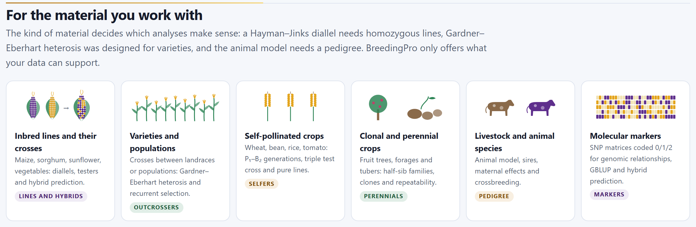
Figure 1.2. The For the material you work with section. Each card carries a tag underneath with the kind of material.
Table 1.3. Material, the analyses that suit it and the blocks where they are done.
Material
Analyses that make sense
Blocks
Inbred lines and their crosses
Griffing and Hayman–Jinks diallels, line × tester, hybrid prediction
45611
Varieties and populations
Gardner and Eberhart heterosis, North Carolina designs, recurrent selection
568
Self-pollinated crops
Generations P1 to BC2, triple test cross, pure lines in trials
678
Clonal and perennial crops
Half-sib families, clones in several environments, repeatability
8910
Livestock and animal species
Animal model, sires, maternal effects and crossbreeding
10
Molecular markers
Genomic relationships, GBLUP and hybrid prediction
11
Methods covered
The gallery shows 32 methods, each with an illustration of its own. The buttons above filter it by family and say how many methods each family has. Table 1.4 gathers them with the block where they are calculated.
Table 1.4. The 32 methods of the gallery, by family.
Family
Methods
Blocks
Diallels · 9
Griffing Methods 1, 2, 3 and 4; reciprocal effects; Wr–Vr graph; Hayman’s ANOVA; Gardner and Eberhart; partial diallel
456
Mating · 5
North Carolina I and II; North Carolina III and triple test cross; line × tester; epistasis test
6
Generations · 3
Generation means; generation variances; heterosis
7
Selection · 4
Heritability; response to selection; selection indices; correlations and paths
8
G×E · 4
Stability regression; ecovalence and superiority; AMMI; GGE biplot
9
Mixed models · 3
REML and BLUP; animal model; crossbreeding
10
Genomics · 4
GBLUP; untested hybrids; double and three-way crosses; crosses between two groups
11
What it brings together
Ten boxes sum up what the program brings together in a single workflow: from the crossing plan to the paper; every mating design; lost crosses and unbalanced data; assumptions put to the test; interpretation in words; plants, animals and markers; publication-ready figures; a reproducible report; Spanish and English; and data that never leave your computer.
iNote · the four buttons of the introduction
Start with my data → opens Block 3. Try the labs, Read the theory and How to cite scroll down to their section of the same page; Read the theory also opens the first topic. The name BreedingPro on the top bar goes back to this home page from any block.
1.2The diallel lab
Faced with a Wr–Vr graph, every breeding student wonders which genes would produce those points. The diallel lab travels the road backward: you decide how the genes act, and the app creates parents with those genes, crosses them, “sows” the plots with experimental error and analyzes the table with the same formulas it will apply to your data in Blocks 4 and 5. Since you know the truth, you can see when the analysis recovers it and when it goes wrong.
θTheory in brief · Hayman’s additive–dominance model
Each locus has two alleles. The homozygote AA adds +a to the trait, aa subtracts a and the heterozygote Aa contributes d; in the lab a = 1, so the Dominance d/a control gives the degree of dominance directly: 0 is additive action, between 0 and 1 partial dominance, 1 complete and above 1 overdominance (Hayman, 1954b). The parents are homozygous: at each locus they carry the allele that increases the trait with probability u and the one that decreases it with probability v = 1 − u. The value of a cross is the sum over its loci, and each plot adds 20 units and a normal error.
Figure 1.3. What the lab does every time you move a control. The parents are drawn with actual genes, crossed in a half diallel with parents, each entry is “sown” in three plots with error, and the table of means is analyzed as if it were real data. The plot values are illustrative; the means are those of the partial dominance scenario.
The seven controls in Table 1.5 are below the graphs. Each one changes one piece of the genetic model of Figure 1.3, and the app creates, sows and analyzes the diallel again as soon as you release it.
Table 1.5. Controls of the diallel lab.
Control
Range
Initial
What it represents
Parents
4 to 12
7
Number of parents p; the diallel has p(p + 1)/2 entries.
Loci
1 to 30
12
Genes that may differ between parents.
Dominance d/a
0 to 2
0.50
Degree of dominance at each locus.
Toward high values
0 to 100%
100%
Fraction of loci at which the dominant allele is the one that increases the trait; at the rest, the one that decreases it is dominant.
Frequency u
0.10 to 0.90
0.50
Probability that a parent carries, at each locus, the allele that increases the trait.
Epistasis d×d
−3 to +3
0
Dominance × dominance interaction between pairs of loci: negative, duplicate; positive, complementary.
Plot error σ
0 to 3
0.60
Standard deviation of the error of each of the three plots per entry.
What you see on screen
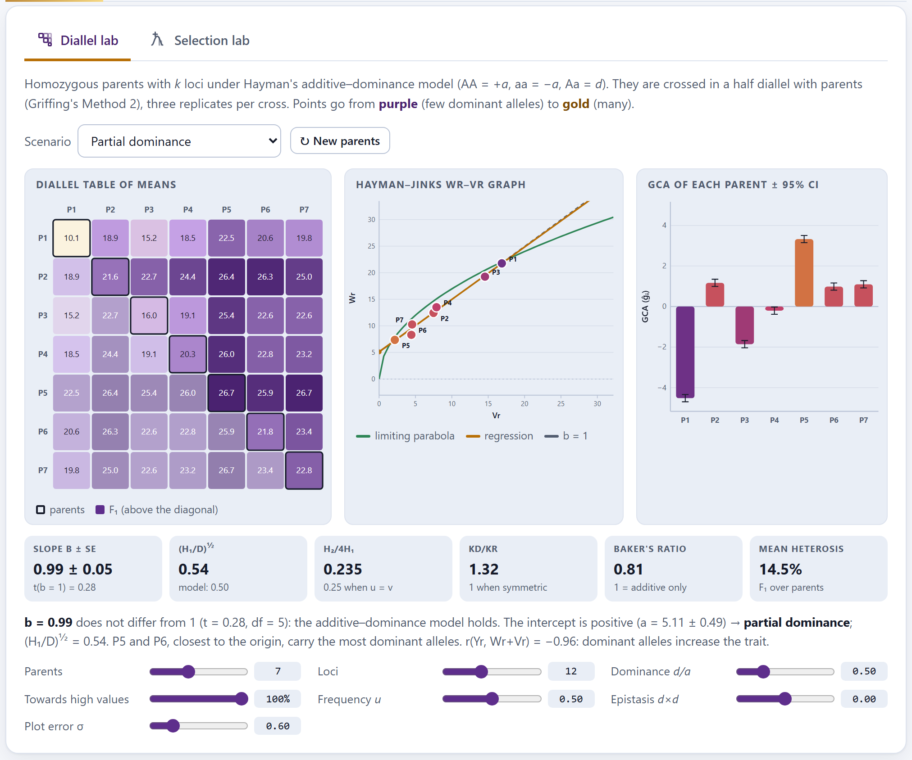
12345678
Figure 1.4. The diallel lab with the initial scenario, Partial dominance: seven parents, twelve loci and d/a = 0.50.
1The two tabs: diallel lab and selection lab.
2Scenario, with eight ready-made configurations (Table 1.7), and ↻ New parents, which draws a new group with the same settings.
3Diallel table of means: parents on the diagonal, with a black border; F1s above and their fainter copy below. Hovering the mouse shows each mean.
4Wr–Vr graph: limiting parabola (green), regression line (amber) and line of slope 1 through the midpoint (gray). Each parent goes from purple (few dominant alleles) to gold (many).
5GCA of each parent with its 95% confidence interval (Griffing’s Method 2, Model I).
6Six summary boxes (Table 1.6).
7The interpretation in words.
8The seven controls of the genetic model (Table 1.5).
Table 1.6. The six summary boxes and their values when the model holds.
Box
What it is
Without epistasis and with little error
Slope b ± SE
Regression of Wr on Vr; underneath, the t of the test b = 1
Close to 1; if it moves away, there is epistasis or another broken assumption
(H1/D)½
Mean degree of dominance; underneath, the d/a of the model
Close to the d/a you chose
H2/4H1
Proportion of alleles that increase and that decrease the trait
¼ when u = v = ½; smaller if the frequencies differ
KD/KR
Dominant against recessive alleles in the parents
1 if they are balanced; larger with more dominant ones
Baker's ratio
2σ²GCA/(2σ²GCA + σ²SCA), from Griffing’s Method 2
1 with additive action; falls toward 0 as dominance weighs more
Mean heterosis
Mean of the F1s against the mean of the parents, as a percentage
0 without dominance; grows with d/a if dominance goes in a single direction
Without dominance, H2/4H1 and KD/KR make no sense, and their boxes show a dash with the caption no dominance. The components D, H1, H2, F and h² that feed the ratios are calculated as in Block 5 and are explained in the chapter on that block.
θTheory in brief · the error in a half diallel
Hayman’s classical error corrections assume a full diallel in which each cross is the average of itself and its reciprocal, with half the error. In a half diallel each cross is observed only once, and the corrections change: H1 is corrected with −(5p − 4)E/p instead of −(3p − 2)E/p; H2 with −4E + 4(p − 1)E/p² instead of −2E, and h² with −4(p² − 1)E/p³ instead of −4(p − 1)E/p². D and F do not change. In 20,000 diallels simulated during the validation of the program, the classical corrections inflated H1 by about 1.7E and H2 by 1.5E; those of the half diallel had no bias. The lab and Block 5 use the latter.
iNote · the same numbers every time
Each scenario starts with a fixed seed, which is why the values in this chapter are reproduced exactly. Moving a control keeps the seed: with the same parents and the same error, only what you moved changes. ↻ New parents changes the seed, and choosing a scenario again brings back the original one.
✓Decision rule · how the app words the interpretation
If b does not differ from 1 (|t| smaller than the critical value at 5% with p − 2 degrees of freedom)…
then the additive–dominance model holds.
If b departs from 1…
then there is non-allelic interaction or another broken assumption, and the components are biased.
If (H1/D)½ < 0.25…
then gene action is practically additive.
If the intercept of the line is positive and significant…
then partial dominance.
If it is negative and significant…
then overdominance.
If it does not differ from zero and (H1/D)½ is between 0.8 and 1.2…
then complete dominance. Outside that interval, the app warns that the intercept test has little power (Exercise 4).
If r(Yr, Wr + Vr) < −0.3 · > 0.3…
then the dominant · recessive alleles increase the trait; between both values the direction is unclear.
The app also names the two parents closest to the origin: they are the ones that carry the most dominant alleles.
1.3Five exercises with the diallel lab
The eight scenarios of the menu are meant to be worked through in order. Table 1.7 says what each one changes with respect to the initial one and in which exercise it is used.
Table 1.7. Scenarios of the diallel lab. Settings not listed keep their initial values (7 parents, 12 loci, d/a = 0.50, 100% toward high values, u = 0.50, no epistasis, σ = 0.60).
Choose Additive action only and then Partial dominance, Complete dominance and Overdominance. The four scenarios use the same parents and the same error; only d/a changes. Watch how the line moves down in the Wr–Vr graph (Figure 1.5) and write down the boxes (Table 1.8).
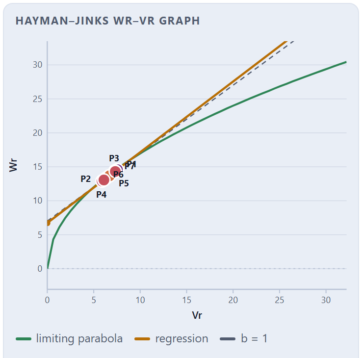
A · Additive action only, d/a = 0
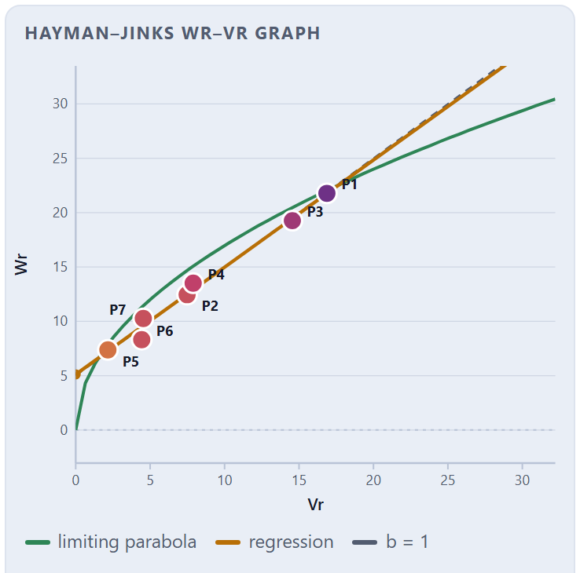
B · Partial dominance, d/a = 0.50
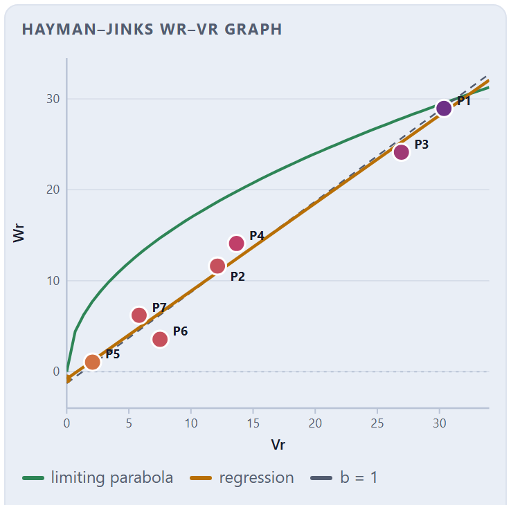
C · Complete dominance, d/a = 1
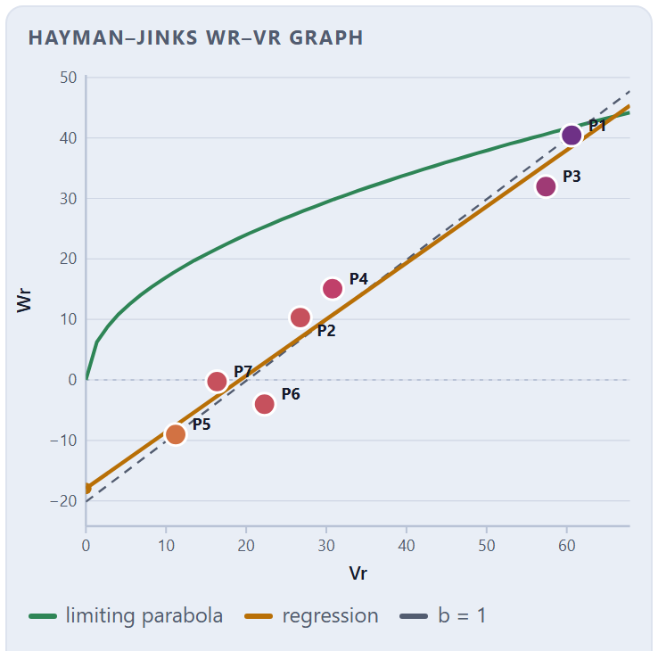
D · Overdominance, d/a = 1.80
Figure 1.5. The Wr–Vr graph of the same seven parents with four degrees of dominance. The line cuts the Wr axis lower and lower: above the origin (A, B), almost at the origin (C) and below it (D). Note that the scales of the axes change from one panel to another.
Table 1.8. What the lab shows in Exercise 1.
Scenario
d/a
(H1/D)½
Intercept a ± SE
Baker
Mean heterosis
Additive action only
0
0.11
6.73 ± 0.16
0.99
−1.1%
Partial dominance
0.50
0.54
5.11 ± 0.49
0.81
14.5%
Complete dominance
1.00
1.08
−0.79 ± 1.14
0.45
30.1%
Overdominance
1.80
1.95
−17.96 ± 3.49
0.07
55%
Three lessons come out of this exercise. The line moves down as dominance grows, and in all four cases the slope does not differ from 1 (from 0.93 to 1.04), because there is no epistasis. (H1/D)½ recovers the d/a of the model with a small error that comes from having only seven parents; the 0.11 of additive action comes from the experimental error. Baker’s ratio falls from 0.99 to 0.07 and mean heterosis rises from −1.1 to 55%: with additive action the value of a cross is predicted from the GCA of its parents, and with overdominance the crosses have to be tested.
Notice also the order of the parents along the line. P5, which carries the dominant allele at 9 of the 12 loci, always stays close to the origin, and P1, with only one, at the far end. With additive action the app omits that reading, because without dominance there are no dominant alleles to rank.
Exercise 2 · Dominance that cancels out
The Dominance in both directions scenario has d/a = 0.80 at every locus, but at half of them the allele that increases the trait is dominant and at the other half the one that decreases it. The lab shows (H1/D)½ = 0.60, that is, clear dominance at each locus, and yet the mean heterosis is −2.1%: the dominance deviations cancel out when the loci are added up. This is the situation in which a diallel has a lot of SCA and almost no average heterosis.
!Important · the direction of dominance
In this scenario the app reads r(Yr, Wr + Vr) = 0.77 and concludes that the recessive alleles increase the trait. That correlation reflects the direction that prevails in these eight parents, not that of the model, which goes both ways. When dominance is bidirectional, the most reliable signal is the combination of a clear degree of dominance with a mean heterosis close to zero.
Exercise 3 · When there is epistasis
The Duplicate epistasis and Complementary epistasis scenarios add a dominance × dominance interaction of −3 and +3 to the partial dominance model (d/a = 0.80). In both, the slope departs from 1: b = 0.68 ± 0.08 (t = 3.88 with 6 degrees of freedom) in the duplicate one and b = 0.66 ± 0.07 (t = 4.61) in the complementary one, and the app warns that the components are biased. The bias is large: in the complementary one, (H1/D)½ is 2.51, which would be read as overdominance, although the model has partial dominance (Figure 1.6 A).
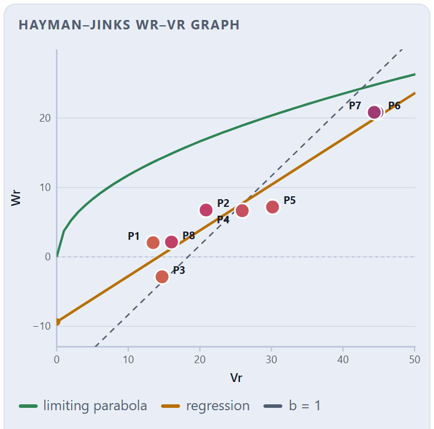
A · Complementary epistasis (Exercise 3)
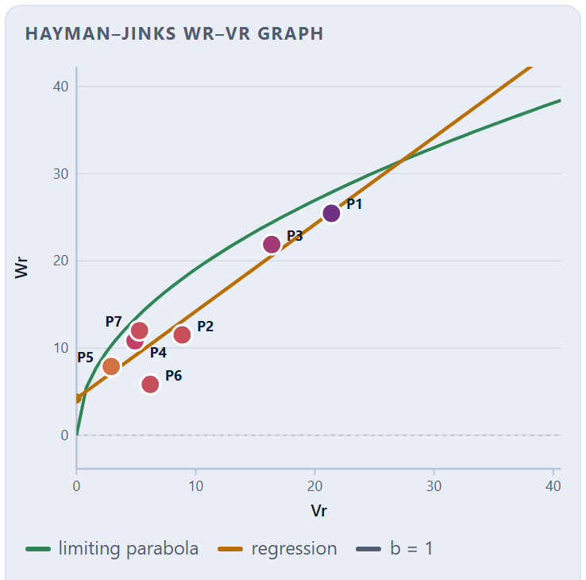
B · Large experimental error (Exercise 4)
Figure 1.6. Two ways for the Wr–Vr graph to mislead. A: with epistasis, the points leave the line of slope 1 (gray) and the regression (amber) cuts the Wr axis below the origin, as if there were overdominance. B: with a lot of error, the points scatter and the intercept loses significance.
The b = 1 test, however, does not always detect epistasis. Click ↻ New parents several times with duplicate epistasis and you will see samples in which the slope does not differ from 1; the app then adds: “Beware: epistasis is present here”. Table 1.9 measures how often this happens.
Table 1.9. Percentage of samples in which the b = 1 test is rejected at 5%, in 2,000 diallels simulated with the lab (12 loci, d/a = 0.80, u = 0.50, σ = 0.30).
Model
6 par.
8 par.
10 par.
12 par.
Duplicate epistasis (−3)
27%
41%
51%
60%
Complementary epistasis (+3)
38%
60%
71%
79%
No epistasis
5%
6%
10%
11%
41%
Key fact
With eight parents, the b = 1 test detects duplicate epistasis in only 41 of every 100 samples. A slope equal to 1 does not prove that there is no epistasis. To test it directly there are the triple test cross (Block 6) and the scaling tests (Block 7).
The last row of Table 1.9 has a lesson of its own: without epistasis, the test is wrong in 5 to 11% of the samples, somewhat more than the nominal 5% when there are many parents for few loci, because the genes are then no longer distributed at random among the parents, which is another of Hayman’s assumptions.
Exercise 4 · Large experimental error
The Large experimental error scenario repeats the partial dominance one with σ = 2.50 instead of 0.60. The slope stays at 1 (1.00 ± 0.16), but its standard error triples, and the intercept, 4.22 ± 1.78, no longer differs from zero (t = 2.37, smaller than the critical value of 2.57 with 5 degrees of freedom). The app does not conclude “complete dominance”: it warns that (H1/D)½ = 0.61 points to partial dominance and that, with this error, the intercept test has little power (Figure 1.6 B).
The error affects everything else: H2/4H1 falls to 0.185 and KD/KR rises to 2.22, when the model has 0.25 and 1, and the standard error of each GCA goes from 0.09 to 0.38. Before sowing a real diallel, Block 2 calculates how many replicates are needed to detect the differences you care about.
Exercise 5 · Unequal frequencies
Choose Complete dominance and move Frequency u to 0.20 and then to 0.80. With u = 0.20 the alleles that increase the trait, which here are the dominant ones, are scarce: H2/4H1 falls to 0.185 (theory gives uv = 0.16) and KD/KR to 0.36 (theory, 0.25), and (H1/D)½ = 0.99 stays at complete dominance. With u = 0.80, KD/KR rises to 2.38, but (H1/D)½ reaches 1.51 and the intercept, −2.27 ± 0.87, becomes significant: the app reads overdominance where there is only complete dominance.
θTheory in brief · apparent overdominance
With 80% favorable alleles, seven parents differ at few loci and the genes are no longer distributed at random among them. That association inflates H1 relative to D and produces an apparent overdominance, a phenomenon well known in real diallels. That is why the degree of dominance is best read together with the number of parents and, when possible, confirmed with North Carolina design III (Block 6) or with the generation variances (Block 7).
1.4The selection lab
The second lab puts the breeder’s equation, R = h²S, to the test. A population with actual genes is selected cycle after cycle; in each cycle the app calculates what the equation predicts with the additive variance of that moment and compares it with what the population really gains. This shows why the prediction works for one or two cycles and not for twenty.
θTheory in brief · what it simulates
A diploid population of N plants with k loci of equal effect (AA = +1, Aa = d, aa = −1), free recombination and no mutation; the environmental error is set at the start to give the requested heritability. In each cycle the best plants are selected on phenotype, and their N offspring come from random pairs among them (c = 1) or from a selected mother with any father (c = ½, open pollination). The predicted response is R = c·h²·S, with h² = σ²A/σ²P and σ²A = Σ 2pqα², where α = a + d(q − p) is the average effect of an allele substitution (Falconer and Mackay, 1996).
The seven controls in Table 1.10 are below the graphs. Any change creates a new population and takes it back to cycle 0.
Table 1.10. Controls of the selection lab.
Control
Range
Initial
What it represents
Plants N
40 to 1,000
400
Size of the population in each cycle.
Loci
1 to 100
40
Genes of equal effect.
Initial h²
0.05 to 0.95
0.40
Initial heritability (broad sense; without dominance it is the narrow-sense one).
Selected
1 to 50%
10%
Selected fraction; it defines the intensity.
Initial frequency
0.05 to 0.95
0.30
Initial frequency of the favorable allele at each locus.
Dominance d/a
0 to 1
0
Degree of dominance of the favorable allele.
Parental control
c = 1 or ½
1
Both parents selected, or only the females with open pollination.
What you see on screen
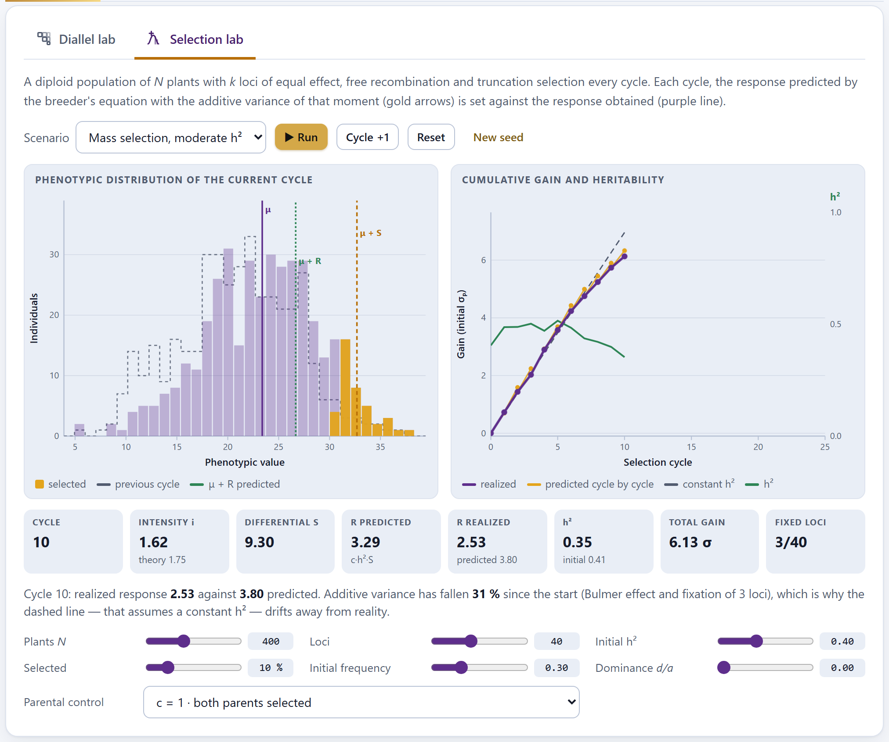
123456
Figure 1.7. The selection lab with the Mass selection, moderate h² scenario after ten cycles.
1Scenario, with six configurations (Table 1.12), and the buttons: ▶ Run advances one cycle every fraction of a second and turns into ❚❚ Pause; Cycle +1 advances one; Reset goes back to cycle 0; New seed draws another population.
2Phenotypic distribution of the cycle: selected plants in gold, the previous cycle as a gray outline, and the lines μ, μ + S and μ + R.
3Cumulative gain in initial phenotypic deviations: realized (purple), predicted cycle by cycle (gold), the one that assumes a constant h² (gray), and h² on the right axis (green).
4Eight boxes (Table 1.11).
5The interpretation of the cycle.
6The seven controls (Table 1.10).
Table 1.11. The eight boxes of the selection lab.
Box
What it is
Cycle
Selection cycles completed, up to 25.
Intensity i
Observed S/σP; underneath, the theoretical one for the selected fraction (1.75 with 10%).
Differential S
Mean of the selected plants minus the mean of the population.
R predicted
c·h²·S: what the equation expects for the next cycle.
R realized
How much the mean advanced in this cycle; underneath, what had been predicted in the previous one.
h²
σ²A/σ²P of the current cycle; underneath, that of cycle 0.
Total gain
Cumulative advance, in phenotypic deviations of cycle 0 (σ).
Fixed loci
Loci at which one of the alleles was lost.
iNote · why the h² in the box is not exactly the one requested
The control sets the environmental error from the genotypic variance of the population drawn, whereas the box calculates σ²A from the allele frequencies. With 400 plants the difference is minimal (0.41 against 0.40); with 60, sampling weighs more (0.29). With dominance the box shows only the additive part: 0.35 when 0.40 was requested.
1.5Six exercises with the selection lab
Each scenario starts with the same seed, so the six populations start from comparable genotypes. For each one, choose the scenario and click ▶ Run up to cycle 25, or Cycle +1 to go step by step. Table 1.12 summarizes what happens.
Table 1.12. The six scenarios after 5, 10 and 25 cycles. The gain is in phenotypic deviations of cycle 0; the last column is the additive variance lost by cycle 25.
Scenario
What changes
Initial h²
5
10
25 cycles
Fixed loci
σ²A lost
Mass selection, moderate h²
N 400, 40 loci, h² 0.40, 10%, p 0.30
0.41
3.58
6.13
8.63
37 / 40
99%
Low heritability
h² 0.10
0.10
0.69
1.47
3.28
11 / 40
53%
Few genes of large effect
4 loci, h² 0.50, p 0.20
0.41
3.58
3.62
3.69
4 / 4
100%
No pollen control (c = ½)
c = ½
0.41
1.70
3.37
7.25
1 / 40
56%
Small population (drift)
N 60
0.29
2.53
4.05
5.49
40 / 40
100%
Complete dominance
d/a 1
0.35
2.24
3.24
3.76
5 / 40
95%
Exercise 1 · The breeder’s equation and its limits
With Mass selection, moderate h², cycle 0 selects the best 10%: the observed intensity is 1.72 (the theoretical one, 1.75), S = 11.03 and h² = 0.41, so the equation predicts R = 4.47. In cycle 1 the population advances 4.67: the prediction works. In the following cycles the realized response stays somewhat below the predicted one (4.55 against 5.52 in cycle 2), because selection creates negative associations between loci that reduce the additive variance: this is the Bulmer effect (Bulmer, 1971).
At first h² rises, from 0.41 to 0.52 in cycle 5, because the frequency of the favorable allele moves from 0.30 toward 0.50, where 2pq is at its maximum. Then it falls: 0.35 in cycle 10, 0.15 in cycle 15 and 0.01 in cycle 25, with 37 of the 40 loci fixed. The cumulative gain levels off at 8.63 σ, while the line that assumes a constant h² reaches 17.4 σ (Figure 1.8 A).
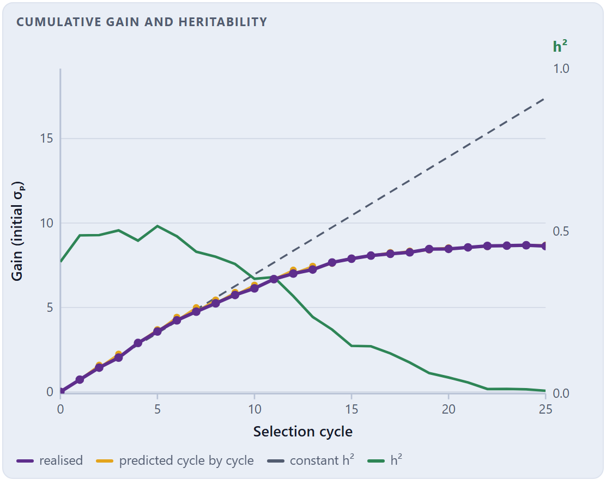
A · Mass selection, c = 1
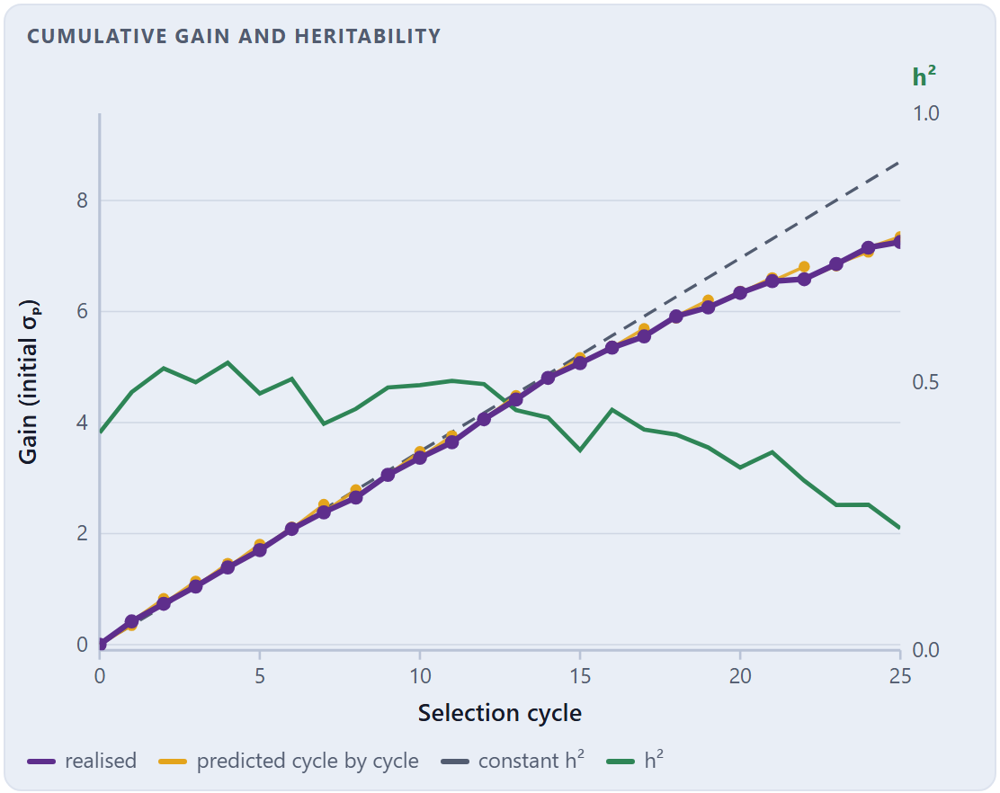
B · No pollen control, c = ½
Figure 1.8. Cumulative gain over 25 cycles. With both parents selected (A) the population advances twice as fast, but the additive variance is exhausted around cycle 20 and the gain levels off; without pollen control (B) it advances at half the rate and keeps variance. The vertical scales differ.
Exercise 2 · Low heritability
With h² = 0.10 the equation predicts little (R = 2.15) and the response of each cycle is erratic: 2.93 in cycle 1, 0.95 in cycle 2 and 0.97 in cycle 3, against predictions of 2.15, 2.45 and 2.59. In 25 cycles the population gains only 3.28 σ, when the constant-h² line promised 4.2 σ. That is why, with traits of low heritability, selection is done on family or replicate means, whose heritability is higher (Block 8).
Exercise 3 · Few genes of large effect
With four loci and an initial frequency of 0.20 the response is fast at first (1.12 σ in the first cycle), but by cycle 10 all four loci are fixed, h² is 0 and the population stops at 3.6 σ: this is the selection limit. With 40 loci the limit is farther away and is reached more slowly (Figure 1.9 A).
Exercise 4 · No pollen control
With c = ½ only the females are selected and the pollen comes from the whole population: the predicted R falls to 2.24, half that of mass selection, and after 10 cycles the gain is 3.37 σ against 6.13 σ. The counterpart is that the variance is exhausted more slowly: by cycle 25, 56% of σ²A has been lost (against 99%) and h² is still 0.23 (Figure 1.8 B). Controlling the pollen doubles the gain per cycle: that is the role of c in the breeder’s equation.
Exercise 5 · Small population
With 60 plants, selecting 10% leaves six parents per cycle, and drift fixes loci at random: 7 by cycle 5, 24 by cycle 10 and all 40 by cycle 25. Of them, 7 were fixed for the unfavorable allele, and the gain stops at 5.49 σ against 8.63 σ with 400 plants (Figure 1.9 B). A small effective size spends the variability the program will need in future cycles.
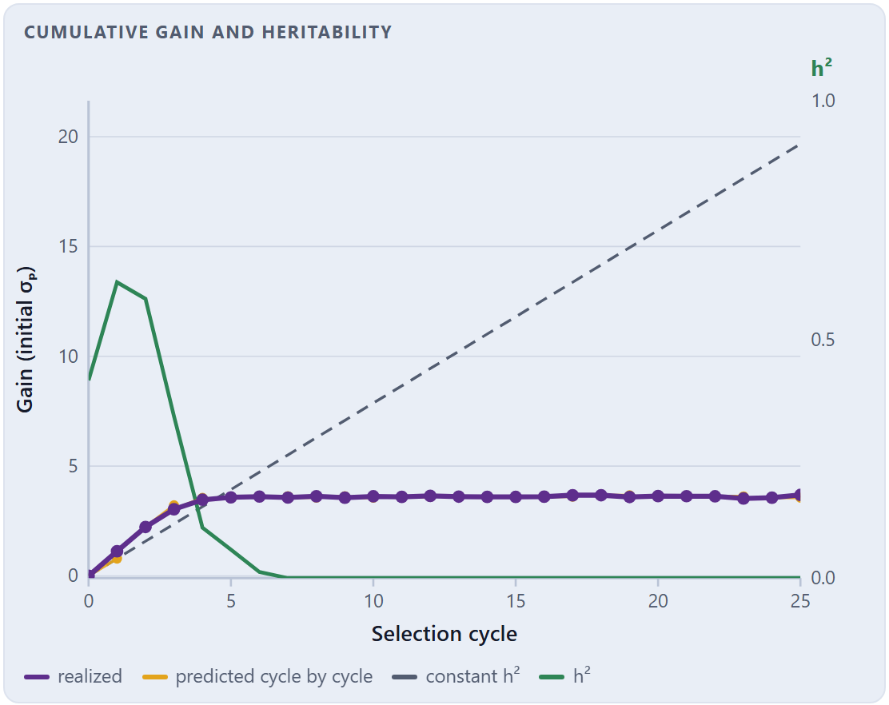
A · Few genes of large effect
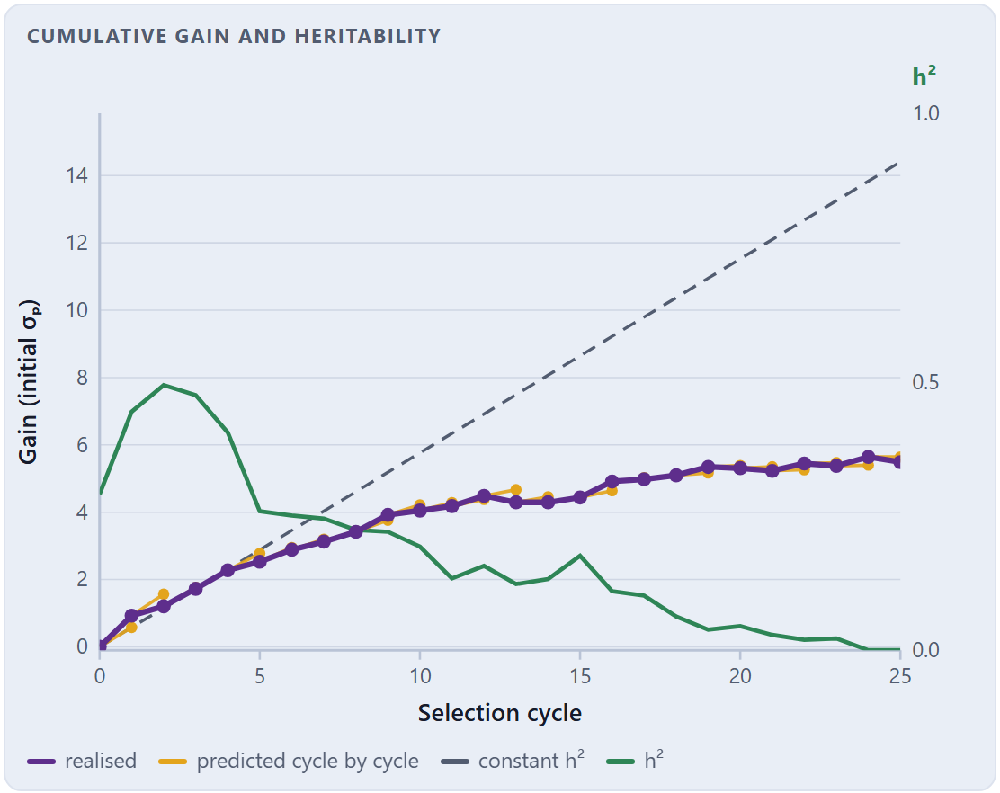
B · Small population, N = 60
Figure 1.9. Two ways of exhausting the response. With four genes (A), selection fixes them in ten cycles and the gain reaches its limit; with a small population (B), drift fixes the loci at random, some for the unfavorable allele, and the limit is lower.
Exercise 6 · Complete dominance
With d/a = 1 the gain slows down early, 3.24 σ after 10 cycles and 3.76 σ after 25, although only 5 loci were fixed: the additive variance fell by 95%. When the favorable allele is dominant and becomes common, the unfavorable recessive that remains hides in the heterozygotes, where selection on phenotype does not see it; in the formula, α = a + d(q − p) approaches zero. The app explains this in its interpretation, and it is the reason for using progeny tests or selfing in the recurrent selection methods of Block 8.
▸For the classroom · a 50-minute session
10 min. Diallels, Exercise 1: predict where the line will cut before changing the scenario.
10 min. Exercise 3: click ↻ New parents ten times and compare the detection rate with Table 1.9.
15 min. Selection, Exercises 1 and 4: the gain over 10 cycles with and without pollen control.
15 min. Exercises 3 and 5: what a selection limit is and how to protect variability.
1.6The theory, in plain language
The theory section gathers what is needed to run the analyses and defend them in a seminar. There are fifteen folded topics; a click on the title opens each one. Nine carry an illustration, the formulas appear in a fixed-width font and each topic names the papers they come from. The tag to the right of the title says which block it belongs to.
Table 1.13. The fifteen theory topics and the chapter of this manual that develops them.
#
Topic in the app
Tag
Expanded in
1
What a breeding program estimates
start here
Section I.3
2
General and specific combining ability
Sprague & Tatum 1942
4
3
Griffing's four methods and two models
Block 4
4
4
Reciprocal, maternal and non-maternal effects
Methods 1 and 3
4
5
Hayman and Jinks: how the genes act
Block 5
5
6
Gardner and Eberhart: heterosis between varieties
Block 5
5
7
The methodologies compared: assumptions and similarities
which to use
45
8
North Carolina, line × tester and triple test cross
Block 6
6
9
Generation means, epistasis and heterosis
Block 7
7
10
Heritability and response to selection
Block 8 · lab
8
11
Selection indices: several traits at once
Block 8
8
12
Genotype × environment interaction and stability
Block 9
9
13
Mixed models, BLUP and the animal model
Block 10
10
14
Genomic selection and hybrid prediction
Block 11
11
15
Which analysis answers which question
decision guide
Section I.8
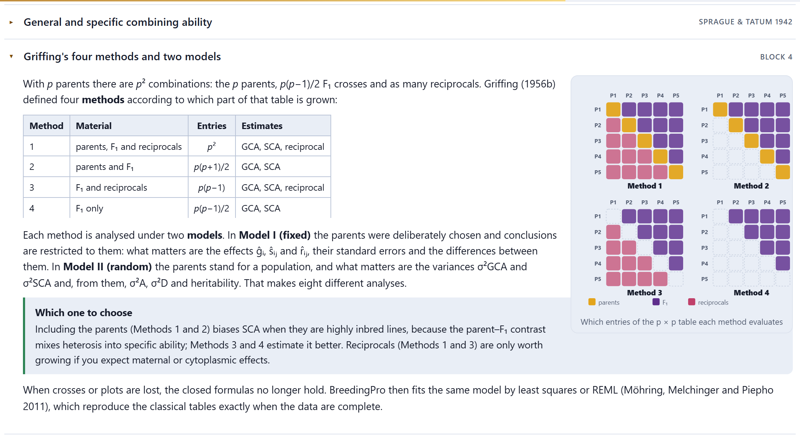
Figure 1.10. The Griffing's four methods and two models topic open: the table of the four methods, the illustration of the entries each one evaluates, the Which one to choose box and the note on lost crosses.
Topic 7 deserves special attention. A table compares side by side Griffing’s Model I and Model II, Hayman–Jinks and Gardner–Eberhart: the question each one answers, which parents it assumes, which Griffing methods it allows, for which species it holds, how it treats reciprocal effects, heterosis and epistasis, what it estimates and the exact equivalences between them (Table 1.14). Block 5 applies those equivalences to your data.
!Important · a common mistake
Interpreting σ²GCA and σ²SCA as σ²A and σ²D when the parents were chosen on purpose (Model I). Genetic variances only make sense if the parents are a random sample of a defined population. The app reminds you of this at the end of this topic and in Block 4.
Table 1.14. The comparison of the methodologies in topic 7, as it appears in the app. ● yes; ◐ partly or with conditions; ○ no, or assumed absent.
Griffing, Model I (fixed)
Griffing, Model II (random)
Hayman–Jinks
Gardner–Eberhart II and III
Question it answers
Which parents and crosses are best in this set?
How much additive and dominance variance is there in the population the parents came from?
How do the genes act: degree and direction of dominance, number of gene groups?
How much heterosis is there, and of which kind, between varieties or populations?
Parents
Chosen on purpose; conclusions apply to them only
Random sample from a reference population
Homozygous (inbred) lines
Varieties or populations in equilibrium; also lines
Applicable Griffing methods
1, 2, 3 and 4
1, 2, 3 and 4; for the ancestral population, preferably 3 or 4
Needs the parents: 1 or 2
Half diallel with parents (as in Method 2)
Species
Selfers, outcrossers and polyploids
Selfers, outcrossers and polyploids
◐ Diploids with inbred parents only
Selfers, outcrossers and polyploids
Reciprocal effects
● Estimated, with maternal and non-maternal split (Methods 1 and 3)
● Reciprocal, maternal and non-maternal variance (Methods 1 and 3)
○ Assumed absent; averaged
◐ Only if added to the model
Heterosis
◐ Only as the parents-versus-crosses contrast
◐ Not estimated directly
◐ Direction and degree of dominance (h², b1)
● Average, per variety and specific
Epistasis and linkage
◐ Not separated: absorbed into GCA and SCA
◐ Bias σ²A and σ²D if present
○ Assumed absent; tested with b = 1 and t²
◐ Absorbed into specific heterosis
Estimates
ĝi, ŝij, r̂ij (m̂i, n̂ij) and their standard errors
σ²GCA, σ²SCA, σ²R → σ²A, σ²D, h², Baker’s ratio
D, H1, H2, F, h², E, (H1/D)½, H2/4H1, KD/KR, dominance order
μv, vj, h, hj, sjj′ (II); GCA and SCA of the crosses (III)
Exact equivalences
Method 1: GCA, SCA and reciprocals = Hayman’s items a, b and c + d; Method 2: GCA and SCA = varieties and total heterosis of Analysis II
With inbred parents: σ²GCA = ¼(D + H1 − H2 − F) and σ²SCA = ¼H2
Half-diallel b1, b2 and b3 = Gardner–Eberhart h, hj and sjj′; c = maternal, d = remaining reciprocal
At the end of the home page is the citation of the program, with the installed version, ready to copy. Copy the citation copies it in the language of the interface, and the button confirms with ✓ Copied. The citation carries the program’s digital object identifier (DOI), 10.5281/zenodo.23005938, which always leads to the most recent version.
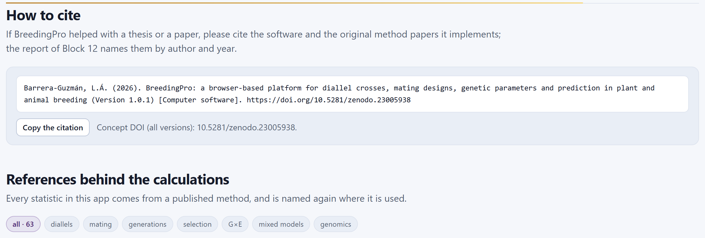
Figure 1.11. The How to cite section and the beginning of References behind the calculations, with the buttons that filter the 63 references by family.
Below are the 63 references of the methods the program calculates, with authors, year, title and journal. The same family buttons as in the methods gallery filter the list (Table 1.15). Each statistic is cited again where it is used: in the last card of its block and in the Block 12 report.
Table 1.15. The references of the home page, by family.
Family
Ref.
Some examples
Diallels
19
Sprague and Tatum (1942); Griffing (1956a, 1956b); Hayman (1954a, 1954b); Jinks (1954); Gardner and Eberhart (1966); Möhring, Melchinger and Piepho (2011)
Mating
4
Comstock and Robinson (1948, 1952); Kempthorne (1957); Kearsey and Jinks (1968)
Generations
6
Mather (1949); Cavalli (1952); Hayman (1958); Jinks and Jones (1958); Lande (1981)
Selection
16
Smith (1936); Hazel (1943); Falconer and Mackay (1996); Holland et al. (2003); Bulmer (1971)
G×E
7
Finlay and Wilkinson (1963); Eberhart and Russell (1966); Shukla (1972); Gauch (1988); Yan et al. (2000)
Mixed models
6
Henderson (1975, 1976); Patterson and Thompson (1971); Meuwissen and Luo (1992); Dickerson (1969)
Genomics
5
Jenkins (1934); Bernardo (1994); Meuwissen, Hayes and Goddard (2001); VanRaden (2008); Technow et al. (2012)
!Important · cite the methods too
If BreedingPro helped you with a thesis or a paper, cite the program and also the original papers of the methods you used. You do not have to look for them in the full list: the Block 12 report writes the methods section with the settings you used and includes in its references only the works it cites.
B2
Chapter two · Block 2 · Plan
Planning crosses, trial and power
Before the first pollination is made, it pays to know how many crosses must be made, how much seed will be needed, how the trial will be laid out in the field and whether the experiment will have the power needed to answer the question. Block 2 settles all four and delivers the field book that Block 3 will read later.
2.1What this block does
2.2The mating design
2.3Seed and pollinations
2.4The field trial
2.5The field book
2.6Precision and power before sowing
2.7Other designs, with their numbers
2.8From the field book to Block 3
2.1What this block does
Block 2 is worked from top to bottom in four cards. Each one takes what the previous one defined, and everything is recomputed at once: if you change the number of parents, the crosses, the seed, the field map and the power change with it.
Figure 2.1. The four cards of Block 2. The field book of card 3 is downloaded or goes straight to Block 3; if card 4 shows low power, you go back to card 1 or 2 and adjust the size of the experiment.
The same example is used throughout the chapter: a diallel of eight maize lines, L1 to L8, with Griffing’s Method 4 (F1 crosses only), two commercial checks, three replicates and two locations, in an α-lattice. Every number quoted comes from the app with those settings and with its default random seed, 2026.
2.2The mating design
The card 1 · Mating design opens with eleven tiles, one per design, each with its own illustration. Choosing one brings up the inputs that design needs: the list of parents, the number of males and females, the two parents of a cross or the generations. Below, four tiles summarize the plan: parents or individuals, crosses to make, entries to evaluate and growing seasons up to the evaluation.
Table 2.1. The eleven designs. p: parents; c: sets; m and f: males and females per set; n: F2 plants or lines; l and t: lines and testers.
Design
What is crossed
Entries
Blocks
Griffing 1
Every pair in both directions, plus the parents
p²
45
Griffing 2
Every pair once, plus the parents
p(p + 1)/2
45
Griffing 3
Every pair in both directions, without the parents
p(p − 1)
4
Griffing 4
Every pair once, without the parents
p(p − 1)/2
4
Partial diallel
Each parent with s of the others, in a circulant scheme
ps/2
6
North Carolina I
Each male with f females of its own, different from those of the other males
c·m·f
6
North Carolina II
Every male with every female of its set
c·m·f
6
North Carolina III
Each F2 plant as male with P1 and with P2
2n
6
Triple test cross
Each F2 plant or line as male with P1, P2 and F1
3n
6
Line × tester
Each line (female) with each tester (male)
l·t
6
Generations
P1, P2, F1, F2, BC1 = F1 × P1 and BC2 = F1 × P2; optionally the reciprocal F1, the F3 and the selfed backcrosses
one per generation
7
The partial diallel, the North Carolina III and the triple test cross can add the parents (and the F1) as entries; the line × tester adds the lines and testers by default; and any design accepts checks, which are typed separated by commas and are evaluated as one more entry. Parent names are free; if the list is left empty, the app uses generic names (P1, P2… or L1, L2…) and the number you give. When you type names, that number adjusts itself to the count typed and is locked.
Figure 2.2. Card 1 with the example: Griffing 4, eight lines and two checks. The result is 28 crosses and 30 entries, which are evaluated in the second growing season.
iNote · how crosses are written
Every cross is written female × male. In diallels, the direct F1 crosses go above the diagonal (the female is the row) and the reciprocals below, as in Griffing (1956b). In the North Carolina III and the triple test cross, the testers P1, P2 and F1 are the females and each F2 plant supplies the pollen. In the line × tester, the lines are the females. Repeated names are ignored with a warning, because the following blocks identify each entry by its name.
Rules of some designs
Methods 3 and 4 need at least four parents to estimate SCA; the other diallels, at least three.
Partial diallel (Kempthorne and Curnow, 1961): parent i is crossed with i + k, …, i + k + s − 1 (around the circle), with k = (p + 1 − s)/2. Each parent then enters exactly s crosses, but only if p and s have opposite parity and s < p − 1; the menu Crosses per parent (s) offers only those values. With 10 parents they are s = 3, 5 or 7 (15, 25 or 35 crosses, instead of 45).
North Carolina I and II are organized in sets, each with new males and females; they are evaluated as separate experiments. In the II, the checkbox Males and females are plants from a population means they are non-inbred plants: when the design is chosen with it ticked, card 4 takes F = 0 (as in the I, the III and the triple test cross), and card 2 checks whether each plant is enough for all its crosses.
North Carolina III and triple test cross: 20 or more F2 plants are recommended (Kearsey, 1980). The checkbox I already have F₂ seed (or the lines) removes from the calendar the seasons needed to produce them.
Line × tester with a single tester is a test cross: the app warns that neither SCA nor the GCA of the testers can be estimated that way.
Generations: without P1, P2, F1 or F2 there are no scaling tests, and without both backcrosses only the additive–dominance model with the C test is fitted; the app points this out. The backcrosses carry the codes BC1 and BC2; Block 3 also recognizes the Spanish RC1 and RC2, and Block 7 shows them as BC1 and BC2.
The crossing plan and the calendar
Below the tiles there are two editable figures. The crossing plan is the female × male table with each cross colored by type (parent, direct F1, reciprocal, full-sib family, backcross to each tester); for generations it is replaced by a diagram of the origin of each generation with its plants. The calendar by growing season spreads the work over growing seasons, from the crossing block to the evaluation.
A · Crossing plan
B · Calendar by growing season
Figure 2.3. The two figures of card 1 with the example. In Method 4 only the crosses above the diagonal are made; the checks do not appear in the plan because they are not crossed.
Table 2.2. Growing seasons up to the evaluation, by design.
Design
Seasons
Total
Diallels, partial and line × tester
Crossing block (with selfing of the parents and staggered sowings if they do not flower together) · evaluation
2
North Carolina I and II
Crossing block, with every plant labeled · evaluation, one experiment per set
2
North Carolina III and triple test cross
Produce the F1 · produce the F2 · test crosses, each male with all its testers on the same day · evaluation
4
Generations
Produce the F1 · segregating generations, remaking the F1 and increasing P1 and P2 · (third generation, if requested) · joint evaluation of all of them
3 or 4
The full list of crosses and entries is folded at the end of the card, in List of crosses and entries, with the number, code, female, male and type of each one, and it is downloaded with ⬇ CSV.
How many plants per generation
In the generations design each generation is evaluated with a number of plants. The segregating generations vary more than the parents and the F1, so with the same number of plants their means are more or less precise according to their variance. The button Share out to equalize precision distributes a total of plants in proportion to the expected variance of each generation, so that all means have the same standard error (Kearsey, 1980).
V(P1) = V(P2) = V(F1) = E · V(F2) = ½D + ¼H + E · V(BC1) = V(BC2) = ¼D + ¼H + E with D and H derived from the heritability in the F2 and from the ratio (H/D)½ you give
With the default values (600 plants, H² = 0.5 in the F2 and (H/D)½ = 0.8) the allocation is 73 plants of each parent and of the F1, 146 of F2 and 118 of each backcross, and the standard errors of the six means fall between 0.079 and 0.080. With the initial allocation of 30 and 100 plants they ranged from 0.086 to 0.124 (Section 2.7).
2.3Seed and pollinations
The card 2 · Seed and pollinations answers three questions about the crossing block: how much seed each entry needs for the whole trial, how many pollinations must be made and how many plants of each parent must be sown. The menu Crop fills the fields with guide values (Table 2.4) that you can correct with those of your own program.
Figure 2.4. Card 2 with the example and the table Plants per parent in the crossing block opened.
θTheory in brief · the arithmetic of the card
seed per entry = seeds per plot × replicates × locations × (1 + margin) pollinations per entry = seed ÷ (seeds per pollination × fraction of successful pollinations) female plants of a parent = (pollinations as female + self-pollinations) ÷ female units per plant male plants of a parent = pollinations as male ÷ pollinations per male plant
Everything is rounded up. In the generations design the seed comes from the plants of each generation times the number of locations, with the same margin. The self-pollinations are those that provide the seed of the parents that are evaluated; in Methods 3 and 4 there are none, because the parents do not enter the trial.
In the example, each entry needs 40 × 3 × 2 × 1.3 = 312 seeds; with 250 seeds per pollination and 70% success, each pollination yields 175, so two pollinations are made per cross: 56 in all for the 28 crosses. With one ear per plant and four pollinations per male plant, the crossing block needs 56 female plants and 16 male plants.
!Important · who is female and who is male
In Methods 2 and 4 the app writes each cross with the parent that comes first in the list as the female. In the example, L1 is the female in its seven crosses (14 female plants and no male ones) and L8 is the male in all of them (4 male plants). Since these methods assume there are no reciprocal effects, you can reverse some crosses in the crossing block to share out the work; keep the entry code as it is in the field book.
Table 2.3. Inputs of card 2 and their initial values (those of maize).
Field
Initial
What it is
Replicates · Locations
3 · 2
Those of the whole block: cards 3 and 4 use them too
Seeds per plot
40
Seeds sown in each plot
Safety margin (%)
30
Extra seed, for resowing and losses
Seeds per pollination
250
Seed produced by one successful pollination
Successful pollinations (%)
70
Fraction of pollinations that set seed
Female units per plant
1
Ears, heads or flowers that can be pollinated on one plant
Pollinations per male plant
4
Pollinations the pollen of one plant can make
Table 2.4. Guide values of the menu Crop. Other (own values) leaves the fields as they are.
Crop
Seeds per pollination
Female units per plant
Pollinations per male plant
Seeds per plot
Maize
250
1
4
40
Sorghum
400
1
3
80
Wheat
30
3
5
300
Rice
20
3
6
200
Common bean
4
10
10
40
Tomato
60
8
10
20
Pepper
40
8
10
20
Squash
200
2
3
10
Sunflower
300
1
3
30
Cotton
25
10
10
40
When each parent is a single plant
In the North Carolina I and III, in the triple test cross and in the North Carolina II with plants from a population, each parent is a plant that cannot be multiplied. The card compares what is asked of it with what it can give and warns when it is not enough. In the North Carolina II with its initial values (three sets of 4 × 4), each male must supply pollen for 8 pollinations, more than the 4 assumed, and each female needs 8 pollinations with a single ear. The app suggests reducing the seed per plot, staggering the sowing of the females, using several tassels or flowers per plant or, in the II, using as females lines or clones that can be multiplied.
2.4The field trial
The card 3 · Field trial design randomizes the entries at each location and draws the field map. The randomization is reproducible: it starts from the Random seed, which is written in the field book, and each location receives its own randomization derived from it. The button ↻ draws another seed.
Table 2.5. The four field designs. v: entries; r: replicates; s: blocks per replicate; b: blocks and c: checks of the augmented design.
Design
How it is built
Error degrees of freedom
Randomized complete blocks
Each replicate is a block with all the entries
(r − 1)(v − 1)
Alpha lattice (incomplete blocks)
Each replicate is divided into s blocks of k plots (Patterson and Williams, 1976)
vr − 1 − (v − 1) − (r − 1) − r(s − 1)
Completely randomized
All the plots are randomized together
v(r − 1)
Augmented (repeated checks)
The checks in every block; the new entries only once (Federer, 1956)
(b − 1)(c − 1)
✓Decision rule · which field design to use
If there are few entries (up to 15 or 20) and the land is uniform over the size of a replicate…
then randomized complete blocks.
If there are many entries and a full replicate no longer fits on homogeneous soil…
then α-lattice, with blocks of a size close to √v.
If there are many new entries and seed for a single plot of each…
then augmented, with at least two checks and 12 or more error degrees of freedom.
If the plots are pots or homogeneous units (greenhouse, laboratory)…
then completely randomized.
The app requires at least two replicates, except in the augmented design, and warns when the error is left with fewer than 12 degrees of freedom.
The α-lattice
When the lattice is chosen, the app proposes a block size k close to √v; with 30 entries it proposes 5, that is, six blocks per replicate. If v is not a multiple of k, the blocks come in two sizes that differ by one plot.
θTheory in brief · how it is built and what the efficiency factor is
When the number of blocks per replicate s is prime and r ≤ s and k ≤ s, a cyclic array gives an α(0,1) design, in which no pair of entries shares a block more than once: with 25 entries in blocks of 5, or 49 in blocks of 7, it reaches the highest efficiency possible. In the other cases, the app generates candidates from random generating arrays and with an exchange algorithm that spreads the concurrences among pairs, picks the one with the highest efficiency factor E and, up to 100 entries, polishes it with exchanges that raise E directly.
E compares the variance of the differences between entries with what a complete-block design with the same error would have: E = 0.785 means that the information lost by using incomplete blocks amounts to 21.5%. Next to E, the app shows its upper bound for resolvable designs and the maximum concurrence, the largest number of times a pair of entries shares a block.
Figure 2.5. Card 3 with the α-lattice of the example: 90 plots per location, 720 m², 43 error degrees of freedom and E = 0.785, with upper bound 0.795; no pair of entries shares a block more than once.
Table 2.6. The α-lattice of the example (30 entries, three replicates) with different block sizes.
k
Blocks per replicate
E
Upper bound
Maximum concurrence
Error df
3
10
0.591
0.682
1
31
5
6
0.785
0.795
1
43
6
5
0.823
0.829
2
46
10
3
0.905
0.906
3
52
30
1 (complete blocks)
1
—
—
58
!Important · a higher E is not a better design
E rises with block size and reaches 1 with complete blocks, because it compares with a design that has the same error. But the purpose of small blocks is a smaller error, because each block occupies a more uniform patch of land. Choose k by the size of the homogeneous land and use E to compare designs with the same k. Nor is the upper bound always reached: with blocks of three plots, several seeds give E between 0.591 and 0.592, far from 0.682, because no design attains it.
6 of 7
Key fact
In the validation of the program, the α-lattices generated matched or exceeded the efficiency of those from an independent generator with the same number of entries, replicates and block size in 6 of 7 cases; in the seventh they fell 0.03% short. E is computed exactly, from the eigenvalues of the information matrix.
How it is laid out on the land
Table 2.7. Options of card 3 that do not change the statistical design.
Field
What it does
Plots per field row
0 puts each block in one row; any other number splits the blocks into rows of that length.
Replicates in the field
one below the other or side by side, with an alley one plot wide between them.
Plot numbering
serpentine (each row in the opposite direction to the previous one, the way the field is walked), row by row or replicate × 100 + plot (101, 102… or ×1000 if a replicate has 100 or more plots).
Locations
Their names, separated by commas; their number comes from card 2.
Rows per plot, Row length (m), Row spacing (m)
They compute the area: plots × rows × length × spacing, without alleys or borders. In the example, 90 × 2 × 5 × 0.8 = 720 m² per location.
Traits to record
Names separated by commas; each one will be an empty column of the field book.
The field map is drawn for one location at a time; if there are several, a menu switches between them. The figure editor colors the plots by entry type or by replicate and shows or hides the entry codes and the plot numbers. When the plan is small, the map is redrawn by itself whenever the plan changes; if it is large (more than 2,500 plots, or an α-lattice with more than 200 entries), the app asks you to press Generate map and field book.
Figure 2.6. Field map of Location 1 with the replicates side by side. Each row of a replicate is an incomplete block of five plots; the serpentine numbering runs across the three replicates row by row. The checks are in gray.
2.5The field book
Below the map is the field book: one row per plot for all locations, ready to be printed or to take the data. It has eleven fixed columns and one more, empty, for each trait typed in the card. The view shows the first 60 rows; the downloads include them all.
Table 2.8. The first rows of the field book of the example (180 plots in all). The last three columns are left empty for the data.
Location
Plot
Replicate
Block
Row
Column
Entry
Genotype
Female
Male
Type
Yield
Male flowering
Plant height
Location 1
1
1
1
1
1
22
L4 × L8
L4
L8
F₁ (direct)
Location 1
2
1
1
1
2
8
L2 × L3
L2
L3
F₁ (direct)
Location 1
3
1
1
1
3
28
L7 × L8
L7
L8
F₁ (direct)
Location 1
4
1
1
1
4
17
L3 × L7
L3
L7
F₁ (direct)
Location 1
5
1
1
1
5
11
L2 × L6
L2
L6
F₁ (direct)
Location 1
6
2
1
1
7
15
L3 × L5
L3
L5
F₁ (direct)
…
Plot 6 already belongs to replicate 2 and lies in column 7: with the replicates side by side, the first field row crosses the three replicates, and column 6 is the alley between them.
The downloads
⬇ Workbook (.xlsx) saves four sheets: Field book; Entries, with the seed and pollinations of each one; Crossing block, with the plants of each parent; and Design, with the mating and field designs, the replicates, the locations, the random seed, the error degrees of freedom, the efficiency factor and its bound (in the α-lattice) and the date.
⬇ CSV saves the field book only, as UTF-8 text, which spreadsheets open with the accents right.
With the checkbox Include the line that describes the design ticked, the first line of both files declares the plan. In the example it reads:
Block 3 reads from that line the mating design, the method and the field design, so it does not have to guess them; the rest stays as a record. Enter the data in the empty columns without changing the names of the fixed columns.
2.6Precision and power before sowing
The last card answers the question that is too often asked too late: with this size of experiment, will I be able to detect what matters to me? It is enough to assume a mean, the coefficient of variation of the error and the size of the genetic variances; the app computes everything from the expected mean squares of the balanced analysis, before a single datum exists.
Table 2.9. The assumptions of card 4 and their initial values.
Field
Initial
What it is
Trait mean
8
In the units of the trait; for example, t/ha of grain
Error CV (%)
12
Coefficient of variation of the plot error that the trait usually has
Additive CV, σA/mean (%)
10
Size of the expected additive variation, relative to the mean
Dominance CV, σD/mean (%)
8
The same for dominance
Parental inbreeding (F)
1
1 for lines; 0.875, 0.75 or 0.5 for S3, S2 or S1; 0 for non-inbred plants
α · Target power
0.05 · 80 %
Significance level and power sought
Power curve against
parents
Number of parents (or families) or number of replicates
θTheory in brief · from the assumptions to the variances
In Model I the power of each F test comes from the noncentral F distribution; in Model II, from the central F scaled by the ratio of the expected mean squares. The precision of the genetic variances is computed from the sampling variance of the moment estimators. No interaction of the genetic effects with locations is assumed; if there is one, the real power will be lower, and the app recalls this in a message.
With the initial values, σ²A = 0.64 and σ²D = 0.41; since the lines have F = 1, σ²GCA = 0.32 and σ²SCA = 0.41.
Table 2.10. What card 4 computes in each design.
Design
Precision
Power
Griffing’s methods
SE of ĝi, ŝii, ŝij and r̂ij and of their differences; LSD and detectable difference; SE and CV of σ²GCA, σ²SCA, σ²A and σ²D
GCA and SCA in Models I and II; in Method 1 that of Model II is approximate
Partial diallel
SE of ĝi − ĝj according to the distance between the parents in the circle
GCA and SCA, Models I and II
Line × tester
Exact SE of the GCA of lines and testers and of the SCA, next to the conventional ones
Lines, testers and lines × testers, Models I and II
North Carolina designs and triple test cross
SE and CV of σ²A and σ²D
The tests of the design components (random model)
Generations
SE of the mean of each generation with its plants
—
Figure 2.7. Card 4 with the example. On the left, the standard errors and the detectable differences; on the right, the power of each F test and the precision of the genetic variances, in green when they reach the target.
Effects. Two GCAs differ significantly if their difference exceeds 0.448 (the LSD), and a real difference of 0.639, 8% of the mean, would be detected with 80% probability. For the SCAs, the detectable differences are 16 to 18%.
Tests. In Model I (these eight lines) GCA and SCA are detected almost surely. In Model II (a population of which the eight lines are a sample), the probability of concluding that σ²GCA > 0 is 77%, because that test has only 7 and 20 degrees of freedom.
Variances. σ²A would be estimated with a coefficient of variation of 70% and σ²D of 44%: with eight parents, genetic variances are very imprecise estimates.
The text below sums it up and computes how many parents would be needed for population-level inference: about 9.
Figure 2.8. Power by number of parents, with the same number of replicates and locations. The solid lines are Model I and the dotted ones Model II; the vertical line marks the current design and the horizontal one, the target power.
!Important · parents, not replicates
If you choose the number of replicates in the menu Power curve against, you will see that going from 3 to 8 replicates only raises the power for σ²GCA from 77 to 83%, while one more parent takes it to 87% and two more to 93%. The precision of the variances depends above all on the number of parents, because they, not the plots, are the sample of the population.
2.7Other designs, with their numbers
The initial values of each design are enough to see how they differ. All the following cases use three replicates, two locations and the initial assumptions of card 4.
North Carolina designs: which one estimates dominance best
Table 2.11. The three North Carolina designs with their initial values: I and II, three sets of 4 males and 4 females (per male in the I); III, 30 F2 plants. Non-inbred plants (F = 0).
Design
Entries
Power of the tests
CV of σ²A
CV of σ²D
North Carolina I
48
males 58%; females within males 98%
79%
171%
North Carolina II
48
males 75%; females 75%; males × females 58%
48%
69%
North Carolina III
60
F2 plants 99%; F2 × testers 100%
39%
36%
With the same number of entries, the II estimates σ²A and σ²D much more precisely than the I, in which σ²D is obtained by difference and its CV exceeds 170%. The III, designed for the average degree of dominance, estimates both variances with similar precision, and the app says so in its text. Remember that these variances are estimated in a single environment; the app warns that, if locations are averaged without modeling the interaction, σ²A and σ²D are inflated by σ²GE.
Line × tester: the exact standard errors
With 20 lines, 2 testers and the lines and testers as entries, there are 40 crosses and 62 entries. The standard errors of the effects used by the app include the factors (l − 1)/l and (t − 1)/t; the conventional ones omit them and overstate the uncertainty, above all when there are few testers.
Table 2.12. Exact and conventional standard errors in the 20 × 2 line × tester.
Estimate
Exact SE
Conventional SE
ĝ of a line
0.270
0.277
ĝ of a tester
0.062
0.088
ŝij
0.270
0.392
ŝij − ŝkj (same tester)
0.392
0.554
In Model II, on the other hand, the power for σ²GCA of lines is only 49%, because it is tested against the interaction with 19 degrees of freedom. The app explains it: with two testers, each line’s GCA is averaged over two crosses, and more testers of different genetic background give a more general GCA.
Partial diallel
With 10 parents and s = 5, 25 crosses are made instead of 45. The GCA of each parent is estimated from five crosses, and the precision of a difference ĝi − ĝj depends on how far apart the two parents are in the circle: its standard error goes from 0.256, for neighbors, to 0.324, for opposite ones. The power for GCA in Model I is 100%, and for σ²GCA in Model II, 67%.
Generations
Table 2.13. Standard error of each generation mean, with the initial allocation of plants and with that of the button Share out to equalize precision (600 plants per location).
Generation
Initial plants
SE
Plants shared out
SE
P1, P2, F1
30
0.124
73
0.079
F2
100
0.096
146
0.079
BC1, BC2
100
0.086
118
0.080
The scaling tests compare combinations of means and gain precision when all of them have similar standard errors; that is why, in this design, card 4 shows this table instead of the power. With six entries and three replicates, the error has only 10 degrees of freedom per location (the app marks it in amber); a fourth replicate raises them to 15.
2.8From the field book to Block 3
The button Continue: Data → at the end of the block leads to Block 3. There, the load card has a tile Block 2 field book that shows a summary of the current plan; in the example, 2 locations, 180 plots and a Griffing diallel. There are two ways to use it.
Figure 2.9. The card 1 · Load data of Block 3 with the plan of the example ready to be loaded.
Before sowing, to rehearse. With the checkbox fill it with simulated values… ticked, the field book is loaded with a column of simulated yield, with effects of parents, cross, location, replicate and block. It serves to go through the whole analysis, from the recognition of the design to the report, and to check that the experiment will give the tables you need. These are not real data.
After harvest. Enter the data in the empty columns of the downloaded field book and load the file in the tile File. The line that describes the design tells Block 3 which mating and field designs it is.
Like the rest of the app, Block 2 keeps nothing when the page is reloaded: download the workbook, which also keeps the random seed to regenerate the same field map.
B3
Chapter three · Block 3 · Data
Data, recognized design and field analysis
Every genetic analysis starts here. Block 3 reads the data from a file, from its own spreadsheet, from the Block 2 field book or from one of the 21 examples; works out what each column is; infers the mating design and the field design; checks the quality of the data and analyzes the trial as its design requires. The adjusted means and the error it produces are the raw material of Blocks 4 to 11.
3.1What this block does
3.2Loading the data
3.3The role of each column
3.4The recognized design
3.5Data quality
3.6The analysis of each environment
3.7The combined analysis
3.8Special cases
3.9Downloads and moving on to the genetic blocks
3.1What this block does
Block 3 has five cards that are worked from top to bottom. Loading the data is enough: the other four fill in by themselves and are recomputed as soon as you correct something, be it the role of a column, the design or an observation you decide to exclude.
Figure 3.1. The five cards of Block 3. At the end, the button Continue leads to the block that matches the recognized design; Blocks 10 and 11 use the same data when there is a pedigree or markers.
Throughout the chapter the simulated example diallel in an α-lattice at three locations is used: ten parents crossed with Griffing’s Method 2 (the 10 parents and their 45 crosses) plus five checks, 60 entries in all, evaluated in an α-lattice with blocks of six plots, two replicates and three locations (Chapultepec, Los Altos and Valle Verde). It is a Block 2 field book filled from a known model: σ²GCA = 0.16, σ²SCA = 0.09, σ²blocks = 0.20 and σ²e = 0.36 (t/ha), so that what is estimated can be compared with the truth. Data quality is illustrated with Hayman’s (1954) diallel of Nicotiana rustica, and the data sheet with the 4 × 4 maize diallel.
3.2Loading the data
The card 1 · Load data offers three tiles and, below them, the gallery of examples. The rule is the same for any source: one row per plot (or per plant) and one column per item. The first row with content holds the column names, which may be in Spanish or in English.
Figure 3.2. Card 1 after loading the α-lattice example. The box About this example says where the data come from and, for simulated ones, with which values they were generated; the line below sums up the source: 360 rows × 13 columns and the design declaration read.
A file
Drag the file onto the tile File or click it to choose it. Workbooks in .xlsx, .xls, .xlsm and .ods are read, as well as .csv, .tsv and .txt texts. In a workbook with several sheets the one with the most data is opened and the menu Workbook sheet appears to switch to another. In a text, the separator (comma, semicolon or tab) is inferred from the first 30 lines. Empty rows are ignored, as are lines starting with # before the headers, except the declaration line of Block 2 (see below).
iNote · what counts as a missing value
An empty cell is a missing value, and so are NA, N/A, NaN, null, ., .., -, --, ?, *, missing, perdido, faltante, s/d, sd, nd, n.d. and the spreadsheet errors #N/A, #VALUE! and #DIV/0!, in upper or lower case. If some other text appears in a variable (for example, 12.5a), it is also taken as missing, and card 2 reports how many there were and in which row the first one is.
The data sheet
The tile Data sheet opens a spreadsheet inside the app, for anyone who does not have the file at hand or prefers to paste the data. Paste with Ctrl+V a block copied from any spreadsheet (or a text separated by commas, semicolons or tabs), or type directly. The arrows, Tab and Enter move the selection; F2 or a double click edits the cell; Delete clears it; Ctrl+Z undoes. The buttons at the top insert or delete rows and columns, add a hundred rows and adjust the width. The sheet holds up to 20,000 rows and 5,000 columns.
Figure 3.3. The data sheet with the 4 × 4 maize diallel, opened with Correct in the data sheet. The first row holds the column names.
Below the sheet, Save as downloads its content as .xlsx, .ods, .csv (with comma or semicolon) or .tsv, with the name you type in Name. The button Use these data → sends the sheet to cards 2 to 5 just like a file. If the browser does not let you paste into the grid, open Pasting does not work in this browser? Paste into this box instead and paste into the text box that appears.
!Important · the sheet is saved in this browser
The sheet is saved in the browser every time it changes (the notice saved in this browser appears for a moment) and is restored when it is opened again, even after the page has been closed. It is the only part of the data that the app keeps: a file or an example that was loaded is lost on reloading. Since saving is local, the sheet does not travel to another computer or another browser; for that, download it. When the data come from the sheet, card 4 marks the rows of the outliers in it, with the same row number.
The Block 2 field book
The tile Block 2 field book takes the plan and the field map of Block 2 without downloading anything (Section 2.8). With the checkbox When using the Block 2 field book, fill it with simulated values… ticked it arrives with a simulated yield for practice; without it, with the yield column empty. Every Block 2 field book, including one downloaded and filled by hand, starts with a declaration line like this one, that of the example:
Block 3 takes from it the mating design, the method and the field design (mating, method and field) without having to infer them; the other items are for information. If the spreadsheet split the line over several cells, it is joined again. It is best not to delete it.
The examples
The gallery Published and simulated examples has 21 data sets. The buttons at the top filter them by family (Diallels, Partial, North Carolina, Line × tester, Generations, Genotypes and traits and Multi-environment). Each card shows the title, the design, the size, the first citation and a label: CC BY-NC 4.0, published data or simulated. When one is loaded, the box About this example gives all its sources and, for simulated ones, the true values. The examples are read exactly like a user’s file; Table 3.4 sums up what Block 3 recognizes in each one.
21
Key fact
data sets ready for practice: 17 published and 4 simulated. The published ones come from open-access articles (CC BY-NC 4.0: non-commercial use with attribution), from open copies under a CC BY 4.0 license or from transcriptions distributed under the GPL; the six generations of N. rustica were rebuilt plant by plant from the published number, mean and variance of each generation. If you publish something done with an example, cite the original work.
3.3The role of each column
The card 2 · Columns shows the first eight rows of the table with a menu above each column. The app proposes the role of each one from its name and its contents; you correct whichever needs it and everything is recomputed at once. Under each name you can read whether the column is numeric or text, how many distinct values it has, how many empty cells and, if it detects it, the decimal comma. A colored band groups the roles: blue for the field design, purple for the genotype and the pedigree, green for the response traits and light gray for what is ignored.
How the roles are proposed
By the name. If the name matches one in Table 3.1, the column takes that role.
By the contents. If it does not match, a column with 90% or more numbers is a response trait; the rest are ignored.
One role, one column. Except for the traits, the location and the year, each role belongs to a single column. If two claim it, the first one keeps it; for entries, the text one, which is usually the name (in the example, Genotipo over Entrada). The location and the year can be several columns, which are joined to form the environment.
Without an entry column or parent columns, the first ignored text column with two or more values becomes the entry names.
The examples come with their roles set. In your own data, check the list before going on: if the entry column is missing, the card says so in red and cards 3 to 5 do not appear until it is corrected.
Figure 3.4. Card 2 with the α-lattice example, whose column names are in Spanish. Entrada, an order number, was left as Ignore because Genotipo already names the entries; to the right, outside the crop, come Macho, Tipo and the two traits.
Table 3.1. The 16 roles and some of the names the app recognizes. Names are compared ignoring accents, case, spaces and signs: Rep., REP and Repetición are the same, and No. parcela equals NoParcela.
Role
Names recognized (examples)
What it is for
Response trait
any column with 90% or more numbers and no other role
!Important · an identification number is taken for a trait
A numeric column with a name the app does not recognize (Lot, Furrow, Key) is proposed as a response trait and would be analyzed as if it were a character. Move it to Ignore or give it its role. The same the other way round: a trait with the name of a role, such as a column Type that actually measures something, must be marked as Response trait.
Parents, crosses and entry types
The pedigree can come in three ways, and the app recognizes all of them:
Female and male columns. Each row gives its two parents. If there is also an entry column with numbers that correspond one to one with the pedigree, the entry is named by its pedigree (L1 × L2) and the number is kept; this is how Block 3 reads the 4 × 4 maize diallel of Figure 3.3.
The cross written in the name. Without parent columns, names such as A × B, A x B, A/B, A*B or compact codes such as 1x3 are split into female and male, provided that at least half of the names are crosses and the parents repeat among them; a name equal to a parent is that parent. The card warns: Cross names were split into female and male. This is how the maize partial diallel is read.
A generation column (or a type column, or the entry names themselves) with the codes P1, P2, F1, F2, F3, BC1 and BC2 (also RC1, RC2, B1, B2), RF1 for the reciprocal F1 and BC1S and BC2S for the selfed backcrosses.
The type of each entry comes from the column Entry type when there is one (check, testigo or control; parent or parental; reciprocal; line; tester; F1, cross or hybrid). If there is none, it is inferred from the pedigree: a female equal to the male is a parent, a female different from the male is an F1, and an entry without parents in data with crosses is a check.
In the North Carolina designs and the line × tester, females and males are different plants or lines even if they share a code (1 × 1 is a cross, not a parent): the app marks them with ♀ and ♂ and says so. If the codes repeat across sets, the set is prefixed to them (S1·3).
Decimal separator and reshaping the table
The menu Decimal separator is automatic by default: each column uses a decimal comma if it has more values like 12,5 or 1.234,5 than like 12.5. Choose point (12.5) or comma (12,5) to impose it on all of them.
Some data arrive in wide format: one column per replicate or per environment. The button Columns → rows… turns them into long format. Tick the columns that are replicates of the same trait (those named R1, Rep2, B3, E1 or Loc2 come ticked), type the name of the new factor and that of the trait, and press Stack. Names such as E1B2 or Loc1_Rep2 are split into two factors.
Genotype
R1
R2
R3
A
5.2
4.9
5.6
B
6.1
6.4
5.8
…
→
Genotype
Replicate
Yield
A
1
5.2
A
2
4.9
A
3
5.6
…
Figure 3.5.Columns → rows… stacks columns R1 to R3 into a single trait with the new factor Replicate; the column Genotype is repeated in every row.
If the table is a diallel in matrix form (one parent per row, the same parents as column headers and a value in each cell), Diallel table → rows also appears, which turns it into three columns: female, male and value. Undo the reshaping goes back to the original table. Finally, Correct in the data sheet opens the loaded table in the data sheet to fix a value at its source; afterwards, Use these data → loads it again.
3.4The recognized design
The card 3 · Recognized design says which experiment the app believes you have. Six tiles sum it up: the mating design with its degree of confidence (high, medium or low; declared if it came in the declaration line and chosen if you changed it yourself), the entries with their parents and checks, the field design, the environments, the replicates with the plots per environment and the traits. Below, a list explains why each conclusion was reached and points out what is missing or left over.
The mating design
The app checks the rules of Table 3.2 in order and keeps the first one that holds. In a diallel, the method depends on whether there are parents (at least half of them) and reciprocals (in at least half of the pairs): with both, Method 1; parents only, 2; reciprocals only, 3; neither, 4.
Table 3.2. How the mating design is recognized, rule by rule.
#
If in the data…
then
1
three or more entries, and at least 60% of them, are generation codes
Generation means
2
there is no cross with its two parents
Genotype trial
3
the testers are P1 and P2 (or P1, P2 and F1) and four or more plants are crossed with them
North Carolina III (with three testers, triple test cross)
4
there are no sets and the same names appear as female and as male, or there are three or more selfed parents
Diallel: Griffing’s if 90% or more of the pairs are present; partial if not
5
each male has its own females (nested) and each female a single male
North Carolina I
6
there are types line or tester, the headers say line or tester, or there are up to five males and at least twice as many females
Line × tester
7
none of the above
North Carolina II (factorial)
In the partial diallel, the app checks whether each parent enters the same number s of crosses and in the circulant order of Kempthorne and Curnow (1961); if so it says so, and if not it warns that the analysis will be by least squares. The confidence drops to medium when entries of the complete design are missing, when the partial diallel is not circulant, when crosses of the factorial are missing, when the females of a North Carolina II repeat codes across males (it may be a I) or when the North Carolina III or the triple test cross have fewer than 20 plants.
Figure 3.6. The recognized design in the α-lattice. The declaration line set Method 2 (confidence high · declared); the reasons say where each conclusion comes from and the two menus below allow changing it.
The field design
The field design is recognized in each environment separately, with the rules of Table 3.3. If the environments differ, the tile says differs between environments and the combined analysis uses only the replicates.
Table 3.3. How the field design is recognized in an environment.
Situation
If also…
then
Two or more replicates
a few entries are in all of them and the rest only once (less than 60% of the cells filled)
Augmented blocks
there are more blocks than replicates and the largest block takes less than 75% of a replicate
α-lattice (resolvable incomplete blocks)
in any other case
Randomized complete blocks
No replicates, two or more blocks
every block has all the entries
Randomized complete blocks (the blocks act as replicates)
there are checks in every block and the rest appears once
Augmented blocks
the entries repeat
Incomplete blocks
nothing repeats
Unreplicated: there is no error
Neither replicates nor blocks
the entries repeat, or there are plant-level data
Completely randomized
there is a single value per entry
Entry means
The row–column design is never chosen automatically: if the plots have row and column and you want to use them in the model, choose it in the menu. The card also warns of other field problems: missing replicate × entry combinations (adjusted least squares are used), a plot that appears several times without being plant-level data (it is averaged) and a plot with two different entries, which is an error and must be corrected.
Changing what was recognized
If something does not match your experiment, change it in the menus Mating design (automatic, Griffing Methods 1 to 4, partial diallel, the three North Carolina designs, triple test cross, line × tester, generation means or genotype trial) and Field design (automatic or one of the seven designs). The change is marked as chosen and everything that follows is recomputed. Typical cases: a North Carolina II that is really a I because each male has its own females, or a trial with row and column that you want to analyze as rows and columns.
Crosses present, missing entries and recognized entries
The figure Crosses present in the data draws the table of the design: female × male in diallels and the North Carolina II, male × female in the I, F2 plant × tester in the III and the triple test cross, line × tester in the line × tester. Each cell is colored by the number of plots or, with Color by, by the mean of the trait; parents carry a border, and a cross that the design expects but is not in the data is marked with an ×, with the legend missing from the data.
Figure 3.7. The crosses present in the α-lattice: Method 2 fills the diagonal (parents, with a border) and the upper triangle. Each cross is in 6 plots: 2 replicates × 3 locations.
If the design is incomplete, the box Entries missing from the design lists the missing crosses, parents, reciprocals or generations. At the end, Recognized entries (folded) lists each entry with its female, its male, its type and its number of records: it is the quickest way to check that the pedigree was read correctly.
What is recognized in the examples
Table 3.4 serves as a check of the recognition and as a guide to choosing an example similar to your data.
Table 3.4. What Block 3 recognizes in the 21 examples. RCB: randomized complete blocks; CR: completely randomized. Outliers: in the first trait.
Example
Mating
Field
Env.
Outliers
Next
Maize: full 4 × 4 diallel
Griffing, Method 1
RCB
1
1
4
Nicotiana rustica: Hayman’s 8 × 8 diallel
Griffing, Method 1
RCB
1
2
4
Full 8 × 8 diallel (textbook)
Griffing, Method 1
RCB
1
0
4
Diallel with parents in two environments
Griffing, Method 2
RCB
2
0
4
Maize: means of 36 single crosses
Griffing, Method 4
means
1
—
4
Maize intervarietal crosses
Griffing, Method 2
means
1
—
4
Maize: partial diallel of 8 lines
circulant partial, s = 5
RCB
1
0
6
North Carolina I
North Carolina I
RCB, by plant
1
0
6
Potato: North Carolina II
North Carolina II (♀ and ♂)
RCB
1
0
6
North Carolina III
North Carolina III, medium confidence
RCB
1
0
6
Simulated: triple test cross
triple test cross
RCB
1
0
6
Line × tester with parents
line × tester
RCB
1
0
6
Maize: 13 hybrids and 15 traits
genotype trial
RCB
1
1
8
Maize: 13 hybrids in 4 environments
genotype trial
RCB
4
1
9
Oat: 10 genotypes in 14 environments
genotype trial
RCB
14
2
9
Potato: 28 clones in 6 localities
genotype trial
RCB
6
2
9
Means of 17 genotypes in 12 environments
genotype trial
means
12
—
9
Simulated: inbred lines with a pedigree
genotype trial
RCB
3
0
9
Simulated: diallel in an α-lattice
Griffing, Method 2 (declared)
α-lattice
3
0
4
Nicotiana rustica: six generations
generation means
CR, each plant a unit
1
0
7
Simulated: generation means, plant by plant
generation means
RCB, by plant
1
0 (1 to check)
7
3.5Data quality
The card 4 · Data quality checks one trait at a time; the menu Trait in the corner switches from one to another. It has four parts: a summary by environment, the distribution, the field map and the list of outliers. The summary gives, for each environment (and for all together if there are several), the records, the missing values, the excluded ones, the mean, the standard deviation, the coefficient of variation, the minimum, the maximum and the skewness.
Figure 3.8. Card 4 with Hayman’s diallel (flowering time). The red dots are the two plots of D × A flagged as outliers; the red frame on the map marks their position, the same in both replicates.
The distribution by environment is a box plot with the observations on top (they can be hidden) and a diamond at the mean; the values flagged as outliers are painted red. The field map puts each plot in its place: by row and column if the data have them and, if not, in the order of the rows within each replicate. The menu Color switches between the observed value and the standardized residual of the design model; the latter, on a diverging scale, reveals patches in the land (clustered residuals of the same sign) that the blocks did not absorb. Suspect plots carry a red border in both.
Outliers
Each observation is compared with what the design model predicts (for example, replicate + entry in complete blocks), by means of its externally studentized residual. Two levels: outlier, if the Bonferroni test gives p < 0.05, and check, if |t| ≥ 3.5 without reaching that threshold. The table gives the environment, the entry, the replicate or block, the value, the fitted value, t, p and the rows of the file where it is.
!Important · with two replicates outliers come in pairs
In complete blocks with two replicates, the two residuals of an entry are equal and of opposite sign: if one plot is abnormal, its partner is flagged with the same |t|. That is what happens with D × A (t = −4.68 and +4.68). Statistics cannot tell which of the two is wrong; the field book can.
Figure 3.9. The two outliers of Hayman’s diallel: the cross D × A flowered at 204 days in replicate 2 and at 318 in replicate 1, when the model expected about 260.
θTheory in brief · studentized residuals and Bonferroni
ti = ei / [s(i) √(1 − hii)] · pBonferroni = min(1, n · pi)
ei is the residual of plot i, hii its leverage and s(i) the error standard deviation estimated without that plot, so that a very odd value does not inflate the scale by which it is judged. ti follows a t with the error degrees of freedom minus one; since the n plots are tested at once, the p value is multiplied by n (Cook and Weisberg, 1982). Thus, in a trial of 128 plots, fewer than 0.05 false outliers in all are expected by pure chance, not six.
The checkbox Exclude removes the observation from all the analyses: those of this block, those of the genetic blocks and the report, where the excluded rows appear in gray. Use it only when there is a proven error (in data entry, in measurement or a damaged plot), not because a value gets in the way. Restore every excluded observation brings them all back at once, and the note below says how many are out.
3.6The analysis of each environment
The card 5 · Field-design analysis fits to each environment the model that matches its design (Table 3.5) and delivers the adjusted means of the entries. The menu Environment picks the environment or, if there are several, the Combined analysis (Section 3.7), which is what is shown when the data are loaded.
With sets (North Carolina I and II), the model adds set and replicate within set. In the α-lattice and incomplete blocks, the analysis of variance is intra-block (sequential sums of squares, with the entries adjusted for blocks), but the means are estimated with blocks as random effects by restricted maximum likelihood (REML; Patterson and Thompson, 1971), which recovers the inter-block information. If the REML fit is not possible, the means stay intra-block and the card says so.
Table 3.5. The model of each field design. y is the value of the plot (the mean of its plants when there are plant-level data).
Design
Model
Adjusted means
Completely randomized
y = μ + entry + e
least squares
Randomized complete blocks
y = μ + replicate + entry + e; Tukey’s (1949) test for non-additivity
least squares
α-lattice
y = μ + replicate + block(replicate) + entry + e; entries adjusted for blocks
REML, random blocks
Incomplete blocks
y = μ + block + entry + e
REML, random blocks
Augmented blocks
y = μ + block + entry + e, fixed blocks estimated from the checks (Federer, 1956)
least squares, adjusted for block
Rows and columns
y = μ + replicate + row(rep.) + column(rep.) + entry + e
REML, random rows and columns
Entry means
one value per entry; the error comes from outside (Section 3.8)
the observed means
Figure 3.10. Card 5 at Chapultepec, one of the three locations of the α-lattice: summary tiles, intra-block analysis of variance and table of assumptions and trial quality.
The tiles
The tile Model gives the design and how the means were obtained; Grand mean, how many plots (or plants, or means) went in. The Coefficient of variation comes with the error mean square (MSE) and its degrees of freedom; the LSD (5 %), with the average standard error of a difference between two means. Trial heritability gives that of Cullis, Smith and Coombes (2006) and the standard one. In designs with incomplete blocks there are also Efficiency vs complete blocks and the block variance (or those of rows and columns) with that of the error. The colored edge of some tiles sums up the reading: green if the value is good, amber if it is acceptable and red if it is poor.
At Chapultepec, the 120 plots give a mean of 6.961 t/ha, a CV of 8.2% (MSE = 0.3264 with 41 df) and an LSD of 1.255. The entries, adjusted for blocks, differ clearly (F = 11.92 with 59 and 41 df). The estimated block variance, 0.1462, and that of the error, 0.3254, are close to the values used in the simulation (0.20 and 0.36); with only 20 blocks per location, the former is imprecise. The efficiency of 119% means that with complete blocks about 19% more replicates would have been needed to compare the entries with the same precision; without recovering the inter-block information (intra-block analysis) the gain would be only 4%.
θTheory in brief · trial heritability and efficiency
Entries are taken as random and checks as fixed (at least five entries that are not checks are needed); r is the harmonic mean of the replicates, vΔ the average prediction error variance of a difference and SED the average standard error of a difference. Cullis’s heritability also holds with unbalanced data or incomplete blocks. Both are a repeatability: they say how well the trial ranks the entries. Narrow-sense heritability, with σ²A, is estimated in Blocks 4 to 8.
Assumptions and trial quality
To the right of the analysis of variance, a table checks the assumptions and gives a reading of each test, with the rules of Table 3.6. Tukey’s test is only done in balanced randomized complete blocks, and the gain from incomplete blocks only in the α-lattice and in rows and columns.
Table 3.6. The tests of the assumptions table and how they are read.
Test
Fine
To check
Normality of residuals (Shapiro–Wilk)
p ≥ 0.05: holds
p < 0.05: check the Q–Q plot
Replicate × entry additivity (Tukey, 1 df)
p ≥ 0.05: additive
p < 0.05: non-additive: try a transformation
Outliers (Bonferroni)
none
some: review in card 4
Repeatability (H²c)
≥ 0.5: informative trial
0.3 to 0.5: moderate; < 0.3: low: little discrimination
Precision (CV)
≤ 12%: good
12 to 20%: acceptable; > 20%: low
Gain from incomplete blocks
≥ 5%: blocks helped
< 5%: little gain
At Chapultepec everything comes out fine: normal residuals (W = 0.9920, p = 0.7229), no outliers, H²c = 0.93, a CV of 8.2% and a gain of 19% from the blocks. Hayman’s diallel is the opposite case: non-normal residuals (p = 0.0011) and non-additivity (p = 0.0006), which usually indicates that the trait should be transformed (for example, with the logarithm when the variance grows with the mean). The CV limits are only a guide: they depend on the crop and the trait.
Figure 3.11. The residual diagnostics of Chapultepec. On the left, no pattern against the fitted values and within ±3; on the right, the quantiles follow the normal line.
Figure 3.12. The adjusted means of the combined analysis (Section 3.7): the 45 crosses outperform the ten parents and the checks fall among them. The dashed line is the grand mean.
The adjusted means
Below comes the table of Adjusted means, sorted from highest to lowest, with the rank, the entry, its type, the number of plots, the mean and its standard error. A dagger (†) marks the means that the design cannot estimate because the entry is not connected with the others. The figure of means (Figure 3.12, from the combined analysis) shows them with 95% confidence intervals and colors by type; its panel allows sorting them by name, limiting the number of entries (60 by default) and removing the intervals. On screen the table shows up to 300 rows; the download includes them all.
3.7The combined analysis
With two or more environments, the menu Environment offers the Combined analysis. It is fitted in one stage, with all the plots:
y = μ + environment + replicate(environment) [+ block(replicate)] + entry + entry × environment + e
The block term enters, as a fixed effect, only if all the environments are α-lattices. Environments are tested against replicates within environments, and entries in two ways: against the entry × environment interaction, which is the right test if the environments are a random sample of the possible ones (column F), and against the pooled error, which is right if the environments are fixed (column F against error).
Figure 3.13. The combined analysis of the three locations of the α-lattice. The table on the right sums up the error and heritability of each environment.
The tiles give the number of environments and whether the analysis was in one or two stages, the grand mean, the pooled MSE, the error homogeneity with Bartlett’s (1937) test and the ratio of the largest to the smallest MSE, and the LSD between means over all environments. In the example, the errors of the three locations are homogeneous (p = 0.9426, ratio 1.11), so combining them poses no problem. The entry × environment interaction is significant (F = 1.60, p = 0.0049) but small compared with the differences between entries (F = 20.82 against the interaction): the ranking of the crosses changes little from one location to another. The cross P5 × P6 has the highest mean, 8.7622 t/ha (Figure 3.12).
!Important · when the errors are not homogeneous
If Bartlett’s test gives p < 0.05, the card warns that the combined F tests are approximate. Such data call for a model with one error variance per environment, which is in Block 9 (two-stage analysis with REML).
If the one-stage model would have more than 1,400 parameters (many entries in many environments), the analysis is done in two stages (Möhring and Piepho, 2009): first the adjusted means of each environment and then an analysis of the entry × environment table, whose error is the average variance of the adjusted means, on the plot scale. The card says so and states how many parameters the full model would have had. Entries that are not in every environment are left out of that second stage; in one stage, if there are empty entry × environment combinations, the overall means come from the model without interaction.
3.8Special cases
Plant-level data
When several rows share the same plot (or there is a column Plant / individual), the data are plant-level. Each plot is summarized by the mean of its plants and the analysis of variance is done with those means; the row Between plants within plots is added separately, on the plant scale, with the sampling error (Steel, Torrie and Dickey, 1997). The note below the table recalls that the sums of squares of the plots are on the mean scale (they are multiplied by the number of plants to bring them to the plant scale) and tests the experimental error against the sampling error. In the North Carolina I example, with three plants per plot, the between-plants row has 48 df and an MS of 0.074; F = 4.33 (p = 0.0002) says that the plots differ more than the plants explain: there is a genuine plot error.
Plants without plots
In generation-mean experiments it is common to measure single plants, without replicates, blocks or plots. Then each plant is an experimental unit and the plants of each generation are its replicates: the design is completely randomized and the replicates tile gives the median number of plants per entry. With the six generations of N. rustica (160 plants) the result is a CV of 12%, an MSE of 1.8503 with 154 df, an LSD of 0.884 and a trial heritability of 0.98.
Entry means and external error
With a single value per entry, the data are means and the error cannot be estimated. Card 3 then shows the box Error of the original experiment: for each trait, the error mean square, its degrees of freedom, its scale and the replicates (on the plot scale, the MS is divided by the replicates). With it there are standard errors, LSD and tests in the genetic blocks; without it, only means. The mean examples bring their error: 21.05 with 2,558 df on the mean scale in the 36 maize crosses (LSD = 12.723), and 1.8 with 576 df on the plot scale, with four replicates, in the 17 genotypes (0.45 for the means).
Augmented blocks
In the augmented design, the checks are repeated in every block and the new entries appear once. The blocks are fixed and are estimated from the checks; each new entry is adjusted for the effect of its block (Federer, 1956). With two or more checks, the entries sum of squares is split into Checks and New entries and new vs. checks, and the note gives that of blocks eliminating entries.
Other cases
A design the data do not support is replaced by a simpler one, with a warning: a lattice without real incomplete blocks becomes complete blocks, and so do rows and columns without those columns.
Entries without replicates and without repeated checks: the design is unreplicated and there is no error; the app marks it in red.
Without degrees of freedom for the error, or with fewer than three plots with data, the environment is not analyzed and the card explains why.
3.9Downloads and moving on to the genetic blocks
At the foot of card 5 there are three downloads, which include all the traits and all the environments, not just what is on screen. Each figure also has its own download panel (Section I.6).
Table 3.7. The downloads of Block 3.
Button
Content
Results (.xlsx)
Five sheets: Means (by trait and environment, and combined); ANOVA (all sources, with df, SS, MS, F and p); Quality (design, plots, mean, CV, MSE, error df, LSD, Cullis and standard H², σ²g, block σ², p of Shapiro–Wilk and of Tukey, outliers); Data (the table with the column Excluded); Design (mating, method, parents, field design, environments and source)
Adjusted means (.csv)
Trait, environment, entry, type, plots, adjusted mean and standard error
Cleaned data (.csv)
The original table with a column Excluded (1 if the observation was left out)
In addition, at the end of card 5, How is each design analyzed? sums up the methods of Sections 3.5 to 3.7 with their references, ready for the materials and methods section of an article; the report of Block 12 includes them in full prose.
The button Continue at the end changes according to the recognized mating design (Table 3.8); in the example it reads Continue: Griffing →. ← Plan goes back to Block 2. The other blocks are always one click away in the list of blocks on the left.
Table 3.8. Where the button Continue leads.
Recognized design
Next block
Griffing diallel (complete)
4 Griffing diallels (and then 5)
Partial diallel, North Carolina designs, triple test cross, line × tester
6 Mating designs
Generation means
7 Generations
Genotype trial in one environment
8 Genetic parameters and selection
Genotype trial in several environments
9 Genotype × environment
What passes to the following blocks is the table with its roles, the records with their pedigree, the mating and field designs, the excluded observations, the external error and, for each trait, the analysis of this card (adjusted means, MSE and degrees of freedom), which is computed the first time a block asks for it. Any change in Block 3 (a role, the design, an exclusion) is reflected in them when they are opened again. As in the rest of the app, the loaded data and the results are not kept when the page is reloaded; only the data sheet is kept in the browser.
✓Rule of thumb · before moving on to the genetic blocks
If a column was left with a wrong role or as Ignore…
then correct it in card 2: everything else depends on it.
If the mating design has medium or low confidence…
then read the reasons and check Recognized entries and the figure of crosses present.
If there are outliers…
then compare them with the field book and exclude only proven errors.
If normality or additivity fail…
then consider transforming the trait before loading it again.
The genetic blocks use exactly what remains in Block 3: its data, its design, the excluded observations and the external error.
B4
Chapter four · Block 4 · Griffing
Griffing diallels
The diallel is the classic design for choosing parents: you cross a set of lines among themselves and separate what each one passes on to all its crosses (general combining ability) from what appears only in particular combinations (specific combining ability). Block 4 runs Griffing’s (1956) analysis with its four methods and two models, in one or in several environments, and helps you choose the best parents and crosses.
4.1The four methods and the two models
4.2Data and model
4.3The analysis of variance of the diallel
4.4The effects
4.5Variance components and genetic parameters
4.6Best parents and crosses
4.7The four methods on the same data
4.8Several environments
4.9Special cases, downloads and moving on to Block 5
4.1The four methods and the two models
Griffing (1956) distinguished four ways of running a diallel with p parents, depending on whether the parents themselves and the reciprocal crosses are evaluated, and two ways of interpreting the results, depending on whether the parents matter in their own right or represent a population.
Figure 4.1. The diallel cells each method uses, with five parents. Rows are the female and columns the male. Block 4 recognizes the method in the data and lets you analyze the same data with any of the methods they contain.
Model I treats the parents as fixed: they are the ones of interest, and what you are after are their effects (which one passes on more, which cross stands out). Model II treats them as a random sample from a population: what matters are the variances of that population, from which the additive variance, the dominance variance and the heritabilities are derived. Both models fit the same equation; the F tests and the interpretation change.
The mean of the cross i × j is the grand mean plus the general combining ability (GCA) of each parent, gi and gj, plus the specific combining ability (SCA) of the pair, sij, plus the reciprocal effect rij, which exists only in Methods 1 and 3. The reciprocal effect splits into a maternal part, mi − mj, which depends only on which parent was the female, and a non-maternal part, nij (Cockerham, 1963). Griffing’s restrictions (Σgi = 0 and the SCA effects of each parent summing to zero) make the effects read as deviations from the average of the set.
Throughout the chapter you will use the full 4 × 4 maize diallel of Pérez López et al. (2020): four lines, L1 to L4, with their 12 direct and reciprocal crosses and the lines themselves, in complete blocks with six replications; the trait is grain test weight (PVG, in g/L). It is a Method 1 diallel, with everything the block can show, and its published results let you check the app. Section 4.8 uses the simulated α-lattice of Chapter 3 for the analysis across several environments.
4.2Data and model
Block 4 does not read files: it takes the adjusted means of each entry and the error of each environment from Block 3, with any observations you excluded there. If the loaded data are not a complete Griffing diallel, the card tells you which block analyzes them (partial diallels, the North Carolina designs and line × tester in Block 6; generations in Block 7; genotype trials in Block 8 or 9). The card 1 · Data and model summarizes the data in one line and offers the controls in Table 4.1.
Figure 4.2. Card 1 with the 4 × 4 maize diallel. The tiles summarize the method, the entries, the grand mean, the error, the split of the sum of squares between GCA and SCA, and the Baker ratio.
Table 4.1. The controls of card 1.
Control
Options
What it is for
Trait
those of Block 3
The whole block is recomputed for the chosen trait
Griffing method
those the data contain
Analyze a subset of the entries, as if the experiment had been designed with that method; the recognized one is marked
When reciprocals are dropped
direct cross · average of both orientations
Only in Methods 2 and 4 with data that include reciprocals: which value represents each pair
Model
I · fixed parents · II · random parents
Which F tests are shown first and how the components are read
Environments
fixed · random
With several environments: what each effect is tested against (Section 4.8)
Inbreeding of the parents (F)
from 0 to 1; 1 by default
Converts σ²GCA and σ²SCA into σ²A and σ²D: 1 for inbred lines, 0 for plants from a population
Scale of the sums of squares
entry means · plots
Changes only the presentation; the F tests are the same
Significance level
0.05 · 0.01 · 0.10
For the least significant differences and the readings
With the maize data, the block analyzes the 16 entries expected in Method 1, with a grand mean of 792.01 g/L and an error of 44.0041 (the error mean square from Block 3 divided by the six replications) with 75 degrees of freedom. GCA accounts for 63% of the sum of squares between entries and SCA for 31%; the rest are reciprocal effects. The entries tile turns amber if any entry of the complete design is missing.
iNote · a method other than the design
With data from a Method 1 diallel you can request Methods 2, 3 or 4: the block takes only the entries that method uses (without reciprocals, without parents, or without either), repeats the Block 3 field analysis with them and estimates its own error. This gives you what an experiment designed with that method would have produced. Section 4.7 makes the comparison of all four at once.
4.3The analysis of variance of the diallel
The card 2 · Analysis of variance of the diallel partitions the variation between entries into GCA, SCA and reciprocal effects, and the latter into maternal and non-maternal. It has two F columns: the one for the chosen model, with its p value and its denominator, and the one for the other model, on the right, so you can compare without switching models.
Figure 4.3. The analysis of variance of the 4 × 4 maize diallel. GCA and SCA are highly significant; the reciprocal effects are not significant as a whole, but their non-maternal part is (p = 0.0216).
Table 4.2. What each source is tested against, by model, in one environment.
Source
Model I (fixed parents)
Model II (random parents)
GCA
experimental error
SCA (approximate in Method 1)
SCA
experimental error
experimental error
Reciprocal, maternal and non-maternal
experimental error
experimental error
In the maize data, GCA has F = 38.08 against the error (Model I), but only F = 4.10 against SCA (Model II), which is not significant with 3 and 6 degrees of freedom: with four parents there is very little information to speak about the variance of a population. That is the underlying difference between the models. Under Model I the question is whether these four lines differ (they clearly do); under Model II, whether the population they came from has additive variance, and four lines are not enough to say so.
✓Verified · the published values
With Scale of the sums of squares set to plots, the sums of squares are those of the source article: 30,162.40 for GCA, 14,715.59 for SCA, 2,947.50 for reciprocals, 240.75 for maternal and 2,706.75 for non-maternal effects, with F = 38.08, 9.29, 1.86, 0.30 and 3.42. The GCA effects and their standard errors (2.0311) also match to the last decimal.
With missing entries, the sums of squares are sequential, in the order GCA, SCA and reciprocals, and the note below the table says so. With several environments, the table adds the environments and the interactions of each source with them, and the collapsed panel Analysis within each environment repeats the analysis environment by environment (Section 4.8).
4.4The effects
The card 3 · Effects presents the estimates with their standard error and their t test. On the left, the GCA effects sorted from highest to lowest; on the right, the standard errors and least significant differences for each kind of comparison, because not all differences have the same precision: comparing two SCA effects that share a parent is not the same as comparing two with no parent in common.
Figure 4.4. The GCA effects of the maize lines and the least significant differences. L3 passes on to its crosses 20 g/L more than the average; L2, 13.8 less. Two GCA effects differ if they are more than 6.61 g/L apart.
Figure 4.5. The figure of GCA effects, with 95% confidence intervals, significance asterisks and the gray band of ± LSD/2 around zero. Positive effects are purple and negative ones pink; in the editor you can switch to bars, sort by name and remove the band or the intervals.
Specific combining ability is shown as a color matrix: above the diagonal, the SCA of each cross; on the diagonal, that of each parent (ŝii, in Methods 1 and 2); below, when they exist, the reciprocal effects. Red is positive and blue negative, with the significance asterisks next to the value. The full SCA table, with standard error and p, is collapsed below the figure.
Figure 4.6. SCA (above) and reciprocal effects (below) of the maize diallel. The best specific combination is L3 × L4 (ŝ = 14.8); the diagonal values, all negative, say that each line performs worse as a parent than its GCA predicts.
With reciprocals (Methods 1 and 3), the panel of reciprocal, maternal and non-maternal effects also appears: on the left, the maternal effect of each parent, mi; on the right, for each pair, the reciprocal effect rij and its non-maternal part nij, each with its test.
Figure 4.7. Maternal and reciprocal effects of the maize diallel. No parent has a maternal effect; the only difference between reciprocals is in the pair L1 × L4 (r = −10.92, p = 0.0226), and it is non-maternal.
✓Reading rule · which effect is useful for what
High, significant GCA (ĝi)
The parent passes its value on to all its crosses: useful for forming populations and synthetics and for choosing the parents of a program.
High, significant SCA (ŝij)
The pair performs better than its GCA effects predict: useful for hybrids of that combination, not for choosing parents.
Maternal effect (mi)
Which parent is the female matters: use the parent in the favorable direction (cytoplasm, endosperm, seed size).
Non-maternal reciprocal (nij)
The direction matters only in that pair; confirm it before drawing conclusions.
4.5Variance components and genetic parameters
The card 4 · Variance components and genetic parameters estimates the Model II variances from Griffing’s expected mean squares (moment estimators), with their standard error and their percentage of the genetic variance. On the right it converts them into genetic parameters, and below it summarizes them in five tiles and a bar chart with intervals.
Figure 4.8. The components and parameters of the maize diallel. σ²maternal comes out negative and carries a dagger: it is reported as obtained.
The conversions assume no epistasis, genes in linkage equilibrium and parents with the stated inbreeding F (Griffing, 1956; Wright, 1985). The Baker (1978) ratio runs from 0 to 1: close to 1, GCA predicts the crosses well and additive action dominates. Heritabilities are given on a plot basis and on an entry-mean basis (with σ²e divided by the replications and the environments). The standard errors of the components come from the variance of the mean squares, 2MS²/df.
In the maize data, σ²A = 323.75 and σ²D = 224.47; the Baker ratio is 0.59, with additive predominance, and the average degree of dominance is 1.18. Narrow-sense heritability is 0.40 on a plot basis and 0.55 on an entry-mean basis. But the standard errors tell you how far to trust those numbers: σ²GCA = 161.87 ± 173.18 is not different from zero. With four parents the variances are imprecise, and the message boxes remind you of it.
!Important · what the card’s warnings say
Negative components: they are moment estimates and are reported as obtained, marked with †. They indicate a component close to zero or a model that does not describe the data well. If σ²GCA or σ²SCA is negative, the ratios and heritabilities are not computed.
Model I: the parents were chosen on purpose, so σ²GCA and σ²SCA describe only this set. Reading them as the σ²A and σ²D of a population requires the parents to be a random sample of it.
Methods 1 and 2: with the parents included, the components describe the descendant population; for the ancestral population from which the parents were taken, use Methods 3 or 4 (Kuehl et al., 1968; Wright, 1985).
4.6Best parents and crosses
The card 5 · Best parents and crosses ranks parents and crosses according to what you are after: the Objective menu chooses the highest value (yield, grain weight) or the lowest value (days to flowering, height, incidence of a disease), and Show limits the table of crosses to 10, 20 or 50 rows, or all.
Figure 4.9. The maize parents by their GCA, with a reading in words, and the crosses evaluated with their mean, the prediction from GCA (μ + ĝi + ĝj) and their SCA. The parents appear among the crosses with their ŝii.
The Reading column marks each parent as favorable, unfavorable or no difference, according to the sign of its GCA and its significance in the desired direction. In the table of crosses, the difference between the observed mean and the one predicted from the GCA effects is the SCA: L3 × L4 averages 826.67 g/L, 14.76 more than L3 and L4 predict.
Figure 4.10. Observed mean against the mean predicted from GCA. Points above the diagonal have positive SCA; the parents (squares), all below it, perform worse than their GCA effects predict. In the maize data, GCA explains 70% of the variation between entries (r² = 0.699).
At the end of the card, a reading summarizes the results in words. With the maize data it says that the parent with the best GCA is L3, that the crosses with the highest value are L3 × L4, L1 × L3 and L2 × L3, that the outstanding specific combinations are L3 × L4 and L1 × L4 (of interest for hybrids, not for choosing parents), and that there is a significant reciprocal effect, so it pays to watch which parent is used as the female.
If crosses of the design are missing, the table Crosses not evaluated: prediction from GCA also appears, with μ + ĝi + ĝj and its standard error for each cross that was not made. It is the average expected value of the combination, without its SCA, which cannot be known without evaluating it.
4.7The four methods on the same data
The card 6 · The four methods on the same data analyzes the data with each method they contain. Each method uses its own subset of entries and estimates its own error, as if the experiment had been designed that way. The table gives the number of entries, the error, the sums of squares of GCA, SCA and reciprocals, the components, the Baker ratio and what each method estimates; the figure below compares the sums of squares or the components.
Figure 4.11. The four methods with the maize data. Without the parents (Methods 3 and 4), σ²SCA drops from 224–284 to 65–77 and the Baker ratio rises from 0.47–0.59 to 0.89–0.91.
The comparison teaches something a single analysis hides. In Methods 1 and 2, the parents enter the analysis with their own very negative SCA effects (ŝii): the lines perform much worse than their crosses (inbreeding depression or, seen from the crosses, heterosis), and Griffing’s model loads that difference onto SCA. That is why σ²SCA comes out larger and the Baker ratio smaller. Among the crosses alone (Methods 3 and 4), GCA explains almost everything. None of the results is wrong: they describe different populations, the descendant one with parents and the ancestral one without them.
4
Key fact · the four methods, verified
With the 8 × 8 diallel from the book by Singh and Chaudhary (1979), Block 4 reproduces exactly, in all four methods, the sums of squares, the errors, the Model II components and the eight GCA effects of an independent implementation. Those data give a negative σ²GCA in all four methods, the typical case in which the ratios are not computed.
4.8Several environments
With data from several environments, Block 4 performs a two-stage analysis: it takes the adjusted means of each environment from Block 3 and analyzes the entries × environments table with the pooled error. The analysis of variance table adds the environments and the interaction of each source with them (GCA × environments, SCA × environments and, in Methods 1 and 3, reciprocals × environments). The Environments control decides what the effects are tested against: with fixed environments, against the error; with random environments, each effect against its interaction with the environments. Under Model II with several environments, GCA is tested with a quasi-F and Satterthwaite degrees of freedom (Singh, 1973).
Figure 4.12. The simulated α-lattice (Method 2) at three locations. GCA changes between locations (GCA × environments, p = 0.0003); SCA does not (p = 0.145). The note explains the error of the second stage.
iNote · the error when there are incomplete blocks
The adjusted means of an α-lattice are less precise than MSerror/r, so the error of the second stage is the average variance of the adjusted means, on the plot scale (Möhring and Piepho, 2009): in the example, 0.2008 instead of 0.1583. With balanced complete blocks the two are equal.
The figure GCA in each environment shows, for each parent, its effect at each location. Parallel lines indicate stable GCA; crossing lines, parents whose value depends on the environment. In the example, P5 is the best at Los Altos and Valle Verde and the second best at Chapultepec, while P9 goes from 0.15 at Los Altos to −0.55 at Valle Verde.
Figure 4.13. The GCA of the ten parents at each location of the simulated α-lattice.
Because the data are simulated, the block compares the estimates with the truth: below the GCA table, a note gives the correlation between the ĝi and the true effects (0.863). With Method 2, σ²GCA comes out negative (−0.145) and σ²SCA very large (2.34): the crosses average 7.5 t/ha and the inbred parents 4.2, and that heterosis is added to SCA, as in Section 4.7. With Method 4, using only the crosses, the components come close to the simulated values (Table 4.3).
Table 4.3. Components of the simulated α-lattice with Method 4 and the values used to generate the data. σ²GCA is compared with the variance of the ten effects drawn, not with that of the model (0.16).
Component
Estimate ± SE
True
σ²GCA
0.080 ± 0.051
0.052
σ²SCA
0.037 ± 0.032
0.069
σ²GCA × environment
0.037 ± 0.024
0.029
σ²SCA × environment
0.063 ± 0.053
0
With ten parents, the GCA and SCA variances are estimated with few degrees of freedom and their standard errors are of the same order as the estimates themselves; this is the limitation of any small diallel, not of the program.
4.9Special cases, downloads and moving on to Block 5
Means with an external error
If Block 3 received entry means with the error of the original experiment (Section 3.8), Block 4 analyzes those means with that error. This is the case of Griffing’s (1956) example, 36 single crosses of maize from nine lines (Method 4) with an error of 21.05 with 2,558 degrees of freedom on the mean scale: GCA has F = 110.49 and SCA 16.13; σ²GCA = 283.76 and σ²SCA = 318.39, with a Baker ratio of 0.64.
Incomplete or unbalanced designs
The block estimates the effects by least squares weighted by the number of plots, with Griffing’s restrictions imposed exactly. With complete, balanced data it reproduces Griffing’s formulas; with missing crosses or unequal replications it remains valid and the standard errors adjust to the data at hand. Because Griffing’s model has as many parameters as cells, something has to be assumed about what is missing, and the warnings in card 1 say what: SCA = 0 is assumed for the crosses that were not made, and non-maternal effect = 0 for the pairs evaluated in only one direction. With entries that have different numbers of plots, the components use the harmonic mean of the replications.
Downloads and the next block
At the end of card 6, Assumptions, formulas and references summarizes the model, the restrictions, the estimation and the references, for the methods section of a paper. There are two downloads: Results (.xlsx), with six sheets (analysis of variance, effects, components, parameters, crosses with their mean, prediction and SCA, and comparison of methods), and Effects (.csv), with the grand mean and all the GCA, SCA, maternal, reciprocal and non-maternal effects with their standard error, t and p. Each figure has its own download panel.
The Continue: Hayman–Jinks → button takes you to Block 5, which analyzes the same diallel from another angle: the Wr–Vr graph, Hayman and Jinks’s genetic parameters, and Gardner and Eberhart’s analysis for varieties and heterosis.
B5
Chapter five · Block 5 · Hayman–Jinks
Hayman–Jinks and Gardner–Eberhart
The same diallel can be read in two other ways. Hayman and Jinks’s reading asks about gene action: how much of the variation is additive and how much is due to dominance, whether dominance is partial or overdominance, and which parents carry the dominant alleles. Gardner and Eberhart’s reading, designed for crosses between varieties, splits heterosis into average, variety and specific heterosis. Block 5 does both, with the Wr–Vr graph, and checks on your data that both agree with Griffing.
5.1Three readings of a diallel
5.2Data and assumptions
5.3Hayman’s partition
5.4The genetic components
5.5The Wr–Vr graph and the order of dominance
5.6Gardner and Eberhart: varieties and heterosis
5.7The equivalences
5.8Special cases, downloads and the next block
5.1Three readings of a diallel
Griffing (Chapter 4) describes each parent by its combining ability. Hayman and Jinks go deeper and describe the genes, with an additive–dominance model and a set of assumptions. Gardner and Eberhart describe varieties and the heterosis of their crosses. All three split the same variation between entries, so their sums of squares match; what changes is the question and the interpretation.
Table 5.1. The question each analysis of Block 5 answers and what it needs.
Analysis
Question
Needs
Hayman’s (1954) partition
Are there additive effects, mean dominance, dominance that varies between parents, specific dominance and reciprocal effects?
Full table with reciprocals (or a half table, with Morley Jones, 1965)
Hayman and Jinks components
How much do the additive variance (D) and the dominance variance (H1, H2) weigh? Is there overdominance? Do dominant alleles predominate?
Homozygous parents included in the experiment
Wr–Vr graph
Does the additive–dominance model hold? Which parents carry more dominant genes?
At least five or six parents for the tests to have power
Gardner and Eberhart (1966), Analyses II and III
How does each variety perform, how much average heterosis is there, which varieties contribute heterosis and which crosses have specific heterosis?
The varieties (parents) and their crosses
Heterosis of every cross
By how much does each cross exceed the mean of its parents and the better of them?
Parents and crosses
The chapter uses two published examples. For Hayman and Jinks, Hayman’s (1954) 8 × 8 diallel of Nicotiana rustica (eight lines, full table with reciprocals, two blocks, days to flowering), the classic case of the Wr–Vr graph. For Gardner and Eberhart, the crosses among six maize varieties of Lonnquist and Gardner (1961), a half diallel with the varieties as parents. Both are reproduced exactly with the published values.
5.2Data and assumptions
Like Block 4, Block 5 takes the adjusted means and the error from Block 3. The card 1 · Data and assumptions summarizes the data in one line (parents, kind of table and E, the variance of an entry mean), shows the warnings and offers the controls in Table 5.2. The tiles summarize how the variation splits among additive effects, dominance and reciprocals, the main Hayman and Jinks ratios and the regression of Wr on Vr.
Figure 5.1. Card 1 with Hayman’s diallel. Additive effects account for 70% of the variation between entries; dominance for 26%; reciprocals for 5%.
Table 5.2. The controls of card 1.
Control
Options
What it is for
Trait
those of Block 3
The whole block is recomputed for the chosen trait
Environment
each environment · mean of all
With several environments: these analyses are done on a single diallel table
Diallel table
automatic · full · half
Use the table with reciprocals (Hayman) or one cross per pair (Morley Jones)
Error of the F tests
pooled experimental error · interaction of each item with blocks
The second is the test of Hayman and of Mather and Jinks; it needs complete blocks
Error corrections (half diallel)
derived for single crosses · classical
Only in a half diallel: how the error is subtracted from H1, H2 and h² (Section 5.4)
Objective
the highest value · the lowest value
Which parent counts as the better one in the heterosis and how the crosses are sorted
Significance level
0.05 · 0.01 · 0.10
For the readings and the intervals
The assumptions, one by one
Hayman and Jinks’s additive–dominance model assumes diploid segregation, homozygous parents, no reciprocal effects and no epistasis, at most two alleles per locus, and genes distributed independently among the parents. The assumptions table tests those the data allow and says which ones they do not.
Figure 5.2. The assumptions with Hayman’s diallel. There are reciprocal effects (p = 0.037), the slope does not depart from 1 and dominance is clear; the arrays differ in Wr − Vr across blocks (p = 0.024), a sign of epistasis.
With these data the tests do not fully agree, and that is normal. The slope of Wr on Vr (b = 0.931 ± 0.087) does not depart from 1 and the t² test of uniformity is passed, but the analysis of Wr − Vr across blocks does find differences between arrays; moreover, the reciprocals are significant, so averaging them, as the model requires, biases the components slightly. The prudent reading is to use the components as an approximate description and to rely on the scaling tests of Block 7 or on the triple test cross of Block 6 if epistasis matters.
5.3Hayman’s partition
The card 2 · Hayman's partition divides the variation between entries into six items (Table 5.3). With the full table all six are used; with a half diallel, the first four, computed with the method of Morley Jones (1965), which matches Gardner and Eberhart’s partition. The last row, the variation among parents, is the one Walters and Gale (1977) propose for testing gene effects when there are reciprocal effects, because item a tests them only if there is no dominance.
Table 5.3. Hayman’s items and what they measure. p: parents.
Item
df
Measures
Equivalent to
a
p − 1
Additive effects: differences between the arrays (rows) of the table
GCA of Griffing’s Method 1
b1
1
Mean dominance: the F1s against the parents
average heterosis (h)
b2
p − 1
Dominance that differs between arrays: dominant alleles concentrated in some parents
variety heterosis (hj)
b3
p(p − 3)/2
Specific dominance of each cross
SCA of Method 3 (full table) or Method 4
c
p − 1
Maternal effects
maternal effects of Method 1
d
(p − 1)(p − 2)/2
Remaining reciprocal differences
non-maternal effects of Method 1
Figure 5.3. Hayman’s partition of days to flowering in N. rustica. The last two columns test each item against its interaction with blocks; with two blocks, those tests have very few degrees of freedom (b1, with F = 39.5, does not reach significance).
With the Error of the F tests menu set to interaction of each item with blocks, the F tests in the table become those of the last two columns. These interactions are computed only with complete blocks in one environment; their sum is the blocks × entries error from Block 3. The figure below the table shows the percentage of the variation each item accounts for, or its mean squares.
✓Verified · the published values
On the plot scale (twice as large, with two blocks), the items are those of Hayman (1954): a = 277,716.73, b1 = 30,796.89, b2 = 34,152.70, b3 = 37,288.86, c = 6,739.13 and d = 12,372.88, with F = 95.18 for a, 2.31 for c and 1.41 for d. The partition of a half diallel reproduces table 1 of Morley Jones (1965).
5.4The genetic components
The card 3 · Genetic components estimates the six parameters of Hayman and Jinks’s model with their standard error and their t test (with p − 2 degrees of freedom), and on the right the ratios read from them. Below, five tiles and a reading in words. The card appears only if the experiment includes the parents.
Figure 5.4. The components of Hayman’s diallel. D dominates over H1; the average degree of dominance is 0.70 and dominant alleles predominate (KD/KR = 2.87).
θTheory in brief · the components and their ratios
V0L0 is the variance of the parents; V1L1, the mean of the array variances; W0L01, the mean of their covariances with the parents; V0L1, the variance of the array means; and ML1 − ML0, the difference between the mean of the crosses and that of the parents. D is the additive variation; H1, the dominance variation; H2, the dominance variation weighted by allele frequencies; F, the covariance between additive and dominance effects (positive if dominant alleles predominate); h², the net effect of dominance summed over loci; and E, the error of an entry mean (Hayman, 1954; Jinks, 1954). From them come √(H1/D), the average degree of dominance (greater than 1: overdominance); H2/4H1, which equals 0.25 if the alleles have equal frequencies; KD/KR, the ratio of dominant to recessive alleles; and h²/H2, the approximate number of groups of genes showing dominance.
In N. rustica, D = 10,002 ± 352 and H1 = 4,908 ± 810: the additive part exceeds dominance, and the average degree of dominance, 0.70, indicates partial dominance. H2/4H1 = 0.165 says that the alleles do not have equal frequencies; a positive F and KD/KR = 2.87, that the parents carry more dominant than recessive alleles; and h²/H2 = 2.05, that at least two groups of genes show dominance in the same direction. Narrow-sense heritability, in Mather and Jinks’s form, is 0.71, and broad-sense heritability, 0.94.
!Important · the corrections for a half diallel
Hayman’s classical error corrections assume that each cross is the mean of two reciprocals. In a half diallel each cross was evaluated only once, so its variance is twice as large and those corrections fall short: in simulations with no genetic variation at all, with E = 4 and five parents, the classical ones give H1 = 6.52 instead of zero. That is why the block uses by default corrections derived for single crosses (H1 − (5p − 4)E/p, H2 − 4E + 4(p − 1)E/p² and h² − 4(p² − 1)E/p³), checked by simulation, and leaves the classical ones in the menu for when the reciprocals have truly been averaged. The card’s note says which were used.
5.5The Wr–Vr graph and the order of dominance
The card 4 · Wr–Vr graph and order of dominance plots each parent as a point: Vr is the variance of its array (its row of the diallel table) and Wr, the covariance of that array with the parents. If the additive–dominance model holds, the points fall on a line of slope 1, inside the limiting parabola Wr² = Vr·V0L0. Chapter 1 shows with the diallel lab how the graph changes with each kind of dominance and epistasis.
Figure 5.5. The Wr–Vr graph of days to flowering. The fitted line (purple) almost coincides with the unit-slope line (green) and cuts the Wr axis above the origin: partial dominance. H, E and B, near the origin, carry more dominant genes; C, far from it, more recessive ones. The diamonds mark where a parent with all dominant or all recessive alleles would fall.
✓Reading rule · the Wr–Vr graph
Slope that does not depart from 1
The additive–dominance model is adequate; if it departs, there is epistasis or genes correlated between parents.
Near: the parent carries mostly dominant alleles; far: recessive ones.
Correlation between the parent’s value and Wr + Vr
Positive: dominant alleles decrease the trait; negative: they increase it.
The second figure plots the parents by Wr + Vr (from most dominant to most recessive) against their own value. In N. rustica the correlation is 0.74: the parents with more dominant alleles flower earlier, so earliness is dominant. The line predicts that a completely dominant parent would flower at 131 days and a completely recessive one at 407.
Figure 5.6. The order of dominance: days to flowering of each parent against Wr + Vr, with the predicted extremes (diamonds). G, very early but with intermediate values of Wr + Vr, departs from the line.
Figure 5.7. The regression of Wr on Vr with its reading, and the table of arrays: each parent’s own value, Vr, Wr, Wr + Vr, Wr − Vr and its place in the order of dominance (1 = the most dominant, H).
Hayman’s t² test compares the variance of Wr with that of Vr; if it is significant, the assumptions fail. With complete blocks, the collapsed panel Analysis of variance of Wr − Vr and Wr + Vr over blocks repeats the graph in each block: arrays not significant for Wr − Vr indicate that the model is adequate, and arrays significant for Wr + Vr, that dominance is present.
5.6Gardner and Eberhart: varieties and heterosis
Gardner and Eberhart’s (1966) Analysis II describes each cross between two varieties as the mean of its varieties plus a heterosis, which in turn splits into average heterosis (h), the heterosis of each variety (hj) and the specific heterosis of the pair (sjj′). Analysis III separates the varieties per se (spj) from their combining ability among the crosses (gj), and gj = ½vj + hj holds. The card 5 · Gardner & Eberhart does both, with their estimates, a figure of the variety and heterosis effects, and the heterosis of every cross.
Figure 5.8. Analyses II and III with the six maize varieties of Lonnquist and Gardner (1961). Average heterosis is highly significant; variety and specific heterosis are not.
In this example the average heterosis is h = 5.19 ± 1.29 (p = 0.0002): the crosses yield on average 5.2 units more than the mean of their varieties (μv = 92.45). Only variety K2 contributes a significant heterosis of its own (ĥ = 4.50, p = 0.011), and only the cross B × G has specific heterosis (ŝ = 4.81 ± 2.06). In Analysis III, K2 is also the variety with the best combining ability among the crosses (ĝ = 6.375, p < 0.0001): ½ × 3.75 + 4.50. All these figures are the published ones.
!Important · varieties or lines
Gardner and Eberhart’s analysis is made for open-pollinated varieties; Hayman and Jinks’s assumes homozygous parents. With varieties as parents, the Hayman and Jinks components (here, an average degree of dominance of 2.49, which would suggest overdominance) should not be read as genetic parameters. With a full table, Gardner and Eberhart are computed on the table with the reciprocals averaged; the warning in card 1 reminds you of it.
Figure 5.9. The heterosis of every cross relative to the mean of its parents and to the better of them, with its standard error and its test. Six crosses significantly exceed the mean of their parents; only H × K2 exceeds the better parent.
The heterosis table does not depend on any model: it compares means with the exact variance of each contrast. The test against the better parent does not correct for having chosen it as the better one, and the header warns about it. The Objective menu defines which parent is the better one: with days to flowering or height, the lowest value.
Below the table, a bar chart shows the heterosis of every cross as a percentage, in solid color if it is significant, relative to the mid-parent or to the better parent. Block 7 does the same with the F1 of a generation-means experiment and adds the inbreeding depression of the F2.
5.7The equivalences
The card 6 · Equivalences between the methodologies computes all three on your data and checks, row by row, that the sums of squares that should match do match. It is not an ornament: if a row says “no”, something is wrong in the data or in the computation, and that is how an error was found and fixed during the validation of the block.
Figure 5.10. The equivalences with Hayman’s diallel: with the full table, a, b, c, d and b3 are the GCA, SCA, maternal and non-maternal effects of Method 1 and the SCA of Method 3; with the reciprocals averaged, the Morley Jones items are the sources of Analysis II and of Griffing’s Methods 2 and 4.
The sums of squares match, but the effects do not: the GCA of Griffing’s Method 2 includes the parents, and the gj of Analysis III does not. That is why the same parent can rank differently in Block 4 and in Block 5 without either being wrong. Below the table, Gardner and Eberhart’s identity b2 = SS(parents) + GCA(Method 4) − GCA(Method 2) is also checked.
5.8Special cases, downloads and the next block
No parents (Methods 3 and 4): there are no Hayman and Jinks components and no Gardner and Eberhart analysis, because they need the parents per se; the partition is still computed.
Missing entries: Wr, Vr and the components need the full table; card 1 warns how many are missing.
Few parents: with fewer than six, the Wr–Vr regression has three degrees of freedom or fewer, and the block warns that the tests have little power.
Several environments: the Environment menu chooses one or the mean of all. With incomplete blocks, E is the variance of the adjusted means, as in Block 4 (Section 4.8).
The downloads are Results (.xlsx), with six sheets (Hayman’s items, components and ratios, arrays, Gardner and Eberhart, heterosis and the diallel table), and Diallel table (.csv), the parent × parent table of means. Assumptions, formulas and references, at the end of card 6, gathers the formulas and the sources.
Block 5 is the last one specific to diallels. Its Continue button takes you to Block 8 (genetic parameters and selection among the crosses) or, with several environments, to Block 9 (genotype × environment); Block 6 is for the other mating designs.
B6
Chapter six · Block 6 · Mating designs
Mating designs
Diallels are not the only way to estimate genetic variances. Comstock and Robinson’s North Carolina designs, Kearsey and Jinks’s triple test cross, line × tester and partial diallels organize the crosses differently, almost always to evaluate more families with less work. Block 6 analyzes the six designs with a single engine: it computes the expected mean squares of the actual experiment, chooses what to test each source against and converts the components into σ²A, σ²D and heritabilities.
6.1Six designs, one idea
6.2Data and assumptions
6.3The analysis of variance
6.4The effects
6.5Components and genetic parameters
6.6North Carolina I
6.7North Carolina III and the triple test cross
6.8Line × tester
6.9Partial diallel
6.10Several environments, downloads and the next block
6.1Six designs, one idea
All these designs rest on the same principle: relatives resemble each other in proportion to the genes they share. Half sibs (one parent in common) share a quarter of the additive variance; full sibs, half of the additive variance and a quarter of the dominance variance. Each design organizes the crosses so that the analysis of variance separates those two covariances.
Table 6.1. The designs of Block 6, what they estimate and the chapter example that illustrates each.
Design
How the crosses are made
Estimates
Example
North Carolina I
Each male with several females of its own (nested)
σ²A from the males; σ²D from the females within males
2 sets × 3 males × 2 females
North Carolina II
Every male with every female of its set (factorial)
σ²A from males and from females; σ²D from their interaction
potato: 2 sets of 5 × 5
North Carolina III
Each F2 plant with the two parents of the F1
σ²A from the sums; σ²D from the differences
16 F2 plants in 4 sets
Triple test cross
Like design III, plus the F1 as a third tester
The same and, in addition, epistasis
simulated: 30 F2 plants
Line × tester
Each line with each tester; optionally, the parents
GCA of lines and testers; SCA; heterosis
5 lines × 3 testers
Partial diallel
Each parent with s of the others (circulant)
GCA and SCA as in a diallel, with fewer crosses
maize: 8 lines, s = 5
Block 3 recognizes the design and decides which column is the female, the male, the tester or the F2 plant. If the data come from none of these designs, card 1 says where they are analyzed: complete diallels in Blocks 4 and 5; generations in Block 7.
6.2Data and assumptions
The card 1 · Data and model takes the plot values from Block 3 (with the field analysis that matches the design and any observations you excluded), summarizes the experiment in one line and gives the main results in tiles. The table What the design assumes, below, says what each design assumes and what happens if the assumption fails.
Figure 6.1. Card 1 with the potato North Carolina II: two sets of five males × five females, three replications and 150 yield plots. The tiles give σ²A, σ²D, the degree of dominance, the heritability and the error.
Table 6.2. The controls of card 1.
Control
What it is for
Trait
The whole block is recomputed for the chosen trait.
Environment
With several environments, one of them or all together, which adds the environments and their interactions to the model (Section 6.10).
Inbreeding of the parents (F)
0, 0.5, 0.75 or 1. By default, 1 for line × tester and partial diallels (inbred lines) and 0 for the North Carolina designs and the triple test cross (plants from a population); if the Block 2 field book declared another value, that one is used. F changes the coefficients of the covariances, not the sums of squares.
F₁ tester (L₃)
Only in the triple test cross: which of the three testers is the F1 of the other two. The app guesses it from the name.
Objective · Significance level
The favorable direction for ranking heterosis, and the level of the tests.
!Important · the value of F changes σ²A and σ²D
With the same mean squares, σ²A = 4Cov(HS)/(1 + F) and σ²D = 4σ²SCA/(1 + F)². Going from F = 0 to F = 1 divides σ²A by 2 and σ²D by 4. In the line × tester example, with F = 0 σ²D would be 1,679 and the degree of dominance 8.76; with F = 1, which is correct for inbred lines, σ²D = 420 and the degree of dominance 6.19. Always check this control.
6.3The analysis of variance
The card 2 · Analysis of variance of the mating design fits the model of the design to the plot values: the field strata (sets, replications, blocks) and the partition of the entries specific to each design. Besides df, sums of squares and mean squares, the table gives the expected mean square of each source, what it is tested against and its p value.
Figure 6.2. The analysis of variance of the North Carolina II. Males and females are tested against their interaction; the interaction, against the error; the sets, with a quasi-F with 12.9 degrees of freedom.
θTheory in brief · expected mean squares computed, not copied
Textbooks give tables of expected mean squares for each balanced design. Block 6 computes them for the experiment you have: the coefficient of each variance in the mean square of each source is a trace, tr(AtZkZk′)/dft, obtained by fitting each column of random effects as if it were the response. With balanced data it reproduces the textbook coefficients (in Figure 6.2, 15 = r·f and 3 = r); with missing crosses or unequal replications the coefficients stop being integers and remain exact. Each source is tested against the mean square whose expectation differs only in the term being tested; if there is none, against a combination of mean squares with Satterthwaite degrees of freedom (quasi-F).
Below the table, the figure Contribution of every source shows what part of the variation between entries corresponds to each term of the mating design.
6.4The effects
The card 3 · Effects of parents and crosses estimates the effect of each parent (its general combining ability) and that of each cross (the specific one), with its standard error and its t test. In the North Carolina II, males and females have their own table and the interaction another, plus a dot plot of the general effects and a color matrix of the interaction, set by set.
Figure 6.3. The effects of the ten potato males and ten females. Because males and females share numbers but are different plants, the app marks them with ♂ and ♀.
Figure 6.4. The males × females interaction effects of the first set. In red, the crosses that perform better than their parents predict; in blue, those that perform worse.
The effects are estimated by least squares with the restrictions of the model (the effects in each set sum to zero), so their standard error is that of the full contrast: for a line, σ²(1/rt − 1/rlt) and not σ²/rt, as some textbooks print. In line × tester, the standard error of a line GCA is 2.464, not 2.755.
6.5Components and genetic parameters
The card 4 · Variance components and genetic parameters solves for the components from the expected mean squares (on the left) and converts them into covariances of relatives, σ²A, σ²D, degree of dominance and heritabilities (on the right). Each component is a combination of mean squares, so its standard error comes from them: Var(ΣciMi) = Σci²·2Mi²/dfi.
Figure 6.5. The components and parameters of the potato data. The test that a component equals zero is the F of its source: σ²m is clearly greater than zero (p = 0.0014) even though its standard error is large.
In the potato data, σ²A = 16,407 ± 8,579 and σ²D = 8,862 ± 9,138, with an average degree of dominance of 1.04 and a heritability of 0.37 on a plot basis and 0.52 on a family-mean basis. The North Carolina II gives two estimates of σ²A, one from the males (21,975) and another from the females (10,840), and the app averages them; when they differ a lot, as here, think of maternal effects or of males and females not coming from the same population.
!Important · negative components
A negative component is reported as obtained: it usually indicates that the true variance is close to zero or that there are few replications. A negative σ²D is taken as zero in the denominator of narrow-sense h², and with it the degree of dominance, H² and the Baker ratio are not computed; with a negative σ²A no heritability is computed. The card’s warning explains it each time.
6.6North Carolina I
In the nested design each male is crossed with females that are not crossed with any other male. The variance among males is the half-sib covariance, and that of females within males is the full-sib covariance minus the half-sib one: σ²A = 4σ²m/(1 + F) and σ²D = 4(σ²f − σ²m)/(1 + F)². Males are tested against females within males, and the latter against the error.
Figure 6.6. The North Carolina I of the example, with three plants measured per plot: the last row is the sampling error among plants, on the plant scale.
In the example the males differ (F = 6.89, p = 0.020), but the females within males do not (p = 0.096), and σ²D comes out negative (−1.26 ± 1.39): with six males and two females per male, dominance cannot be estimated well. The assumptions table recalls a limitation of the design itself: because each female has only one male, maternal effects stay inside the female component and overestimate σ²D when they exist. With per-plant data, heritability is also given on a plant basis, separating the sampling error among plants from the plot error.
6.7North Carolina III and the triple test cross
In the North Carolina III each F2 plant is crossed with the two parents of the F1, L1 and L2. For each plant, the sum of its two crosses reflects its additive value and the difference, its dominance: the variance of the sums estimates σ²A and that of the differences, 2σ²D, both after subtracting the error of a pair (Comstock and Robinson, 1952). The triple test cross adds the F1 as a third tester, L3, and the contrast L1 + L2 − 2L3, which equals zero if there is no epistasis (Kearsey and Jinks, 1968).
θTheory in brief · sums, differences and epistasis
Var(L1 + L2) − 2MSe/r = σ²A · ½[Var(L1 − L2) − 2MSe/r] = σ²D · D = 2σ²A, H = 4σ²D, degree of dominance √(H/D)
A locus of the F2 crossed with the two parents gives differences a − d, a and a + d with frequencies ¼, ½ and ¼, so the variance of the differences is H/2 = 2σ²D. The correlation between sums and differences tells you toward which parent dominance goes. In the triple test cross, the mean of the contrast L1 + L2 − 2L3 tests overall epistasis (type i) and its variation among individuals, epistasis of types j and l.
Figure 6.7. The North Carolina III of the example: 16 F2 plants in four sets, crossed with P1 and P2. The plants are tested against the error, and so is the plants × testers interaction: the testers are fixed.
The testers are two fixed lines, not a sample, so the interaction of each plant with them does not enter the expected mean square of the plants (Comstock and Robinson’s restricted model). That is why the plants are tested against the error (F = 2.40, p = 0.028), and the plant component, 0.255, is exactly σ²A/4 = 1.019/4. The plants × testers interaction is significant (p = 0.006): there is dominance, with σ²D = 0.80 ± 0.49 and a degree of dominance of 1.25.
The card 5 · Sums, differences and epistasis brings those computations together. With the simulated triple test cross from the example gallery (eight loci without epistasis, D = 11.52 and H = 8; σ²A = 5.76, σ²D = 2), the block estimates σ²A = 4.97 ± 2.20 and σ²D = 1.86 ± 0.94, with a degree of dominance of 0.87 (true value, 0.83).
Figure 6.8. Sums and differences of the simulated triple test cross. The mean of the differences measures the additive difference between the testers; the correlation between sums and differences (−0.55, p = 0.001) says that dominance goes toward P1.
iNote · the order of the testers
The epistasis contrast makes sense only if L3 is the F1 of L1 and L2. The app orders the testers by name (the F1 last); if the names do not say so, choose the right one in F₁ tester (L₃). With the wrong order, data without epistasis would show it as highly significant.
Figure 6.9. Each F2 individual by its sum and its difference. The negative slope indicates that individuals with more alleles that increase the value have smaller differences: dominance goes toward the high-value parent.
Figure 6.10. The test of epistasis. In the simulated data without epistasis, neither the mean of the contrast (p = 0.90) nor its variation among individuals (p = 0.95) is significant, as it should be. Below, a figure shows the contrast of each individual with its interval.
6.8Line × tester
Line × tester (Kempthorne, 1957) crosses each line with a few testers. If the parents were also evaluated, the entries are split into parents, crosses and the contrast between both groups; the crosses, into lines, testers and their interaction. The GCA of lines and testers comes from their effects, and the SCA from the interaction.
Figure 6.11. Five lines × three testers plus eight parents. Lines and testers are tested against their interaction; the interaction is highly significant (F = 19.44). The parents versus crosses contrast carries a quasi-F because the mean of the crosses contains the random effects of lines and testers.
In the example, the lines differ in their GCA (L3, with +23.8, is the best; L4, with −13.9, the worst) and so do two testers (T7, +6.4; T8, −6.7), but with five lines and three testers their variances do not reach significance against the interaction, which dominates. The tester variance comes out negative, and σ²A, computed from the average of the line and tester variances, ends up at 21.9 ± 197: almost all the variation among crosses is specific. The warning in card 4 explains why: a few testers chosen on purpose do not estimate the half-sib covariance of a population.
Figure 6.12. With the parents in the experiment, card 5 gives the heterosis of every cross relative to the mean of its parents and to the better of them. L3 × T8 exceeds the mean of its parents by 51% and the better parent by 44%.
6.9Partial diallel
In a partial diallel each parent is crossed with s of the others, usually in the circulant order of Kempthorne and Curnow (1961) that Block 2 prepares. Block 6 fits yij = μ + gi + gj + sij by least squares on the crosses that were made, so it works for the circulant arrangement and for any incomplete set of crosses, and it gives the GCA of each parent and the SCA of each cross as in a Method 4 diallel.
Figure 6.13. The partial diallel of eight maize lines with s = 5 (20 crosses and four replications). The coefficient of σ²GCA, 17.14 = 120/7, is not an integer: the trace computation obtains it without tables.
Here neither GCA (p = 0.085) nor SCA (p = 0.52) is significant as a whole, although two lines stand out: line 2 (ĝ = +0.59, p = 0.009) and line 7 (ĝ = −0.49, p = 0.028). σ²SCA comes out negative, so there is no Baker ratio or degree of dominance; with F = 1, σ²A = 0.13 ± 0.12 and the heritability is 0.13 on a plot basis.
6.10Several environments, downloads and the next block
With data from several environments, the Environment menu lets you analyze one of them or all together. In the second case the model adds the environments and the interaction of each genetic term with them (males × environments, females × environments, lines × testers × environments…), and the expected mean squares and the tests are recomputed by traces for that model; σ²A and σ²D then discount their interaction with the environments.
The card 6 · Assumptions, formulas and references summarizes the model and formulas of each design with their references. Results (.xlsx) downloads the analysis of variance, the components, the parameters, the effects and, depending on the design, the sums and differences or the heterosis. Each figure has its own download panel.
The Continue button takes you to Block 8 (genetic parameters, correlations and selection indices among the families) or, with several environments, to Block 9 (genotype × environment). ← Data goes back to Block 3.
B7
Chapter seven · Block 7 · Generations
Generations and heterosis
A cross between two pure lines and its descendants—the F1, the F2 and the backcrosses—are enough to find out how a trait is inherited. Their means tell whether the genes act additively, with dominance or with epistasis; their variances separate the additive part from the dominance part and from the environment. Block 7 runs Mather’s scaling tests, Cavalli’s joint scaling test with the sequence of models, the components D, H, F and E with their heritabilities, the minimum number of effective factors, heterosis and inbreeding depression.
7.1The generations and what they expect
7.2Data and controls
7.3The variance of every mean
7.4Scaling tests
7.5Joint scaling test
7.6Generation variances: D, H, F and E
7.7Heterosis and inbreeding depression
7.8Minimum number of effective factors
7.9Several environments, downloads and next step
7.1The generations and what they expect
Every generation mixes the three genotypes of each locus—AA, Aa and aa—in known proportions. That is why its mean is a fixed combination of a few parameters—the mean m, the additive effects [d], the dominance effects [h] and the three two-locus epistases [i], [j] and [l]—and its variance, another combination of D, H, F and E. With six generations or more, those combinations can be solved.
Table 7.1. The generations that Block 7 recognizes, the names it accepts in the generation column, their expected mean in the F∞ metric and their expected variance without epistasis or linkage. P1 is the parent that carries the alleles that increase the value.
Generation
Names accepted
Expected mean
Expected variance
P1, P2
P1, P2
m ± [d] + [i]
E
F1 and its reciprocal
F1; F1R, RF1, F1rec
m + [h] + [l]
E
F2
F2
m + ½[h] + ¼[l]
½D + ¼H + E
F3
F3
m + ¼[h] + 1⁄16[l]
¾D + 3⁄16H + E
BC1 (F1 × P1)
RC1, BC1, B1, retrocruza1
m + ½[d] + ½[h] + ¼[i] + ¼[j] + ¼[l]
¼D + ¼H − ½F + E
BC2 (F1 × P2)
RC2, BC2, B2, retrocruza2
m − ½[d] + ½[h] + ¼[i] − ¼[j] + ¼[l]
¼D + ¼H + ½F + E
Selfed BCs
BC1S, B11, BS1 (and those of P2)
m ± ½[d] + ¼[h] + ¼[i] ± ⅛[j] + 1⁄16[l]
½D + 3⁄16H ∓ ¼F + E
Block 3 recognizes the generations design when the generation column (or the name of the entries) has at least three of these codes and they are the majority of the entries. The data can be plants measured one by one, with or without plots and blocks, or one value per plot. The scaling tests use P1, P2, F1, F2 and the backcrosses; the models, all the generations present. The coefficients of the F3 and of the selfed backcrosses were derived from the genotypic frequencies and checked by simulation.
7.2Data and controls
The 1 · Generations and model card takes the data from Block 3 (without the observations you have excluded), summarizes in one line the generations, the number of plants or plots and the metric, and gathers the main results in tiles: the heterosis over the mid-parent, the standard heterosis if there is a check, [d] and [h] of the chosen model, the degree of dominance, the narrow-sense heritability (or D, if it comes out negative) and the minimum number of effective factors. Those that cannot be computed do not appear.
There are six controls:
Trait and, if there are several environments, Environment.
Metric of the parameters: Mather and Jinks’s F∞ or Hayman’s F2 (Section 7.5).
Variance of every mean: automatic from the design (Section 7.3), or forced to the plot error or to the variance among individuals.
Model in tables and figure: the one chosen by the sequence or the perfect-fit solution with the six parameters.
Objective: the highest or the lowest value. It only defines which is the better parent for heterosis; for days to flowering or plant height, where low values are sought, you should change it.
Significance level: 0.05, 0.01 or 0.10. It decides which model “fits” and which parameters count as significant.
Figure 7.1. Card 1 with the Nicotiana rustica example: six generations and 160 plants measured one by one. D comes out negative and the tile says so instead of giving a heritability.
The Statistics of every generation table is the basis of everything else: number of plants, mean, standard error and degrees of freedom of the mean, variance among individuals with its degrees of freedom, the weight 1/V(mean) and the basis of that weight. The N. rustica example comes from Gale, Mather and Jinks (1977), who published the number of plants, the mean and the variance of each generation; the 160 plants were rebuilt with exactly those values, which are all these analyses use.
7.3The variance of every mean
All the tests of the block compare means, and each mean is weighted by its precision. Where its variance comes from depends on how the experiment was planted, and in automatic mode the Variance of every mean menu distinguishes three cases.
Plants randomized one by one (the N. rustica example, or one plant per plot): V(y) = s²/n, the variance among individuals divided by their number. The basis reads individuals.
Replicated plots of several plants: the mean of a plot varies because of the plot error, common to all generations, and because of the plants it contains, which vary much more in an F2 than in a parent. The basis reads means of r plots.
One value per plot: the residual mean square of the plot means, the same for all generations. Without plants there is no variance among individuals, so the block computes neither D, H, F, E nor effective factors, and warns you.
V(yg) = (σ²p + s²g/k)/r · σ²p = MSres − mean(s²/k) · MSres: plot means adjusted for generation and block
Here s²g is the variance among the plants of the same plot of generation g, k the number of plants per plot and r the number of plots. The plot error σ²p comes from the residual mean square of the plot means once the generation and block effects are removed, minus the part the plants already contribute (Hayman, 1958). Since it is a combination of mean squares, the degrees of freedom of each mean are Satterthwaite’s (1946) and are not integers.
Figure 7.2. The simulated example of the gallery: six generations and a check in three blocks, with one plot of each per block (10 plants of the parents, the F1 and the check, 40 of the F2 and 20 of each backcross). The generation means have standard errors of 0.64 to 0.69 with 8.7 to 12.1 degrees of freedom; the last row is the check, which only enters the standard heterosis (Section 7.7).
In the simulated example, the residual mean square of the 18 plot means is 1.303 with 10 degrees of freedom; the plants contribute 0.375, so σ²p = 0.928. A mixed model fitted by restricted maximum likelihood, with a plot effect and one residual variance per generation, gives practically the same variances of the means (0.445 against 0.445 in P1, 0.407 against 0.408 in the F2).
!Important · the blocks do not enter the variance of the means
Every generation is in all blocks, so a good block raises all the means equally and the effect cancels out in any comparison among them. If the variance of each mean were computed from the plot means as they come, with the blocks inside, the standard errors would grow for no reason and the tests would lose almost all their power. In 1,000 simulations like the example, the true variance of scaling test C was 4.96; the block’s calculation estimated it at 4.96 on average, whereas with the blocks inside it would have been 15.9.
The menu lets you force the basis. plot error (blocks removed) applies the formula above whenever there is more than one plot per generation; among individuals / n uses s²/n, which is correct with plants randomized one by one but ignores the plot error when there are plots: the standard errors come out too small and any difference looks significant. If the generations do not all have the same basis, a warning points it out.
7.4Scaling tests
Mather’s (1949) scaling tests are contrasts among means that equal zero when the additive–dominance model is enough. Each one combines different generations and is therefore sensitive to a different kind of epistasis; the last column of the table tells what each test estimates in the F∞ metric.
A = 2BC1 − P1 − F1 · B = 2BC2 − P2 − F1 · C = 4F2 − 2F1 − P1 − P2 D = 2F2 − BC1 − BC2 · D′ = P1 + P2 + 2F2 − 4F3
Figure 7.3. The scaling tests of N. rustica. Only A departs from zero; the note below recalls that D tests [i] alone, that C − 4D estimates −[l] and that A − B tests [j].
In N. rustica, A = 1.681 ± 0.709 (t = 2.37, p = 0.022) and the other three are not significant. A single significant test is enough to say that the additive–dominance model falls short. Since A − B = [j] equals 2.39 and D = −½[i] is almost zero, suspicion falls on additive × dominance epistasis, which the joint test confirms. D′ appears when there is an F3.
The variance of each test is Σc²V(y), with the squared coefficients. Its degrees of freedom are Satterthwaite’s for that combination: 45.4 for A, fewer than the 67 obtained by adding those of its three generations, because a third of the variance of A comes from P1, which has only 9 degrees of freedom. Below the table, a figure shows each test with its confidence interval; the significant bars are drawn in solid color.
7.5Joint scaling test
Cavalli’s (1952) joint scaling test fits the means of all generations at once by weighted least squares, with weight 1/V(y). If the model describes the means, the weighted sum of squared deviations follows a χ² with as many degrees of freedom as generations minus parameters.
Figure 7.4. Card 3 with N. rustica. The model m, [d], [h] is rejected; m, [d], [h], [i], [j] fits, but [h] is not significant, and removing it leaves m, [d], [i], [j], the chosen one (χ²2 = 0.146, p = 0.93). On the right, each observed mean, the one expected by the model and its contribution to the χ².
✓Verified · the published values
The model m, [d], [h] with the data of Gale, Mather and Jinks (1977) gives χ²3 = 9.438 with P = 2.40% and m = 11.0036 ± 0.1914, [d] = 3.6349 ± 0.1924, [h] = 0.5937 ± 0.2813, the values of the paper; the second data set of the same paper gives χ²3 = 12.5731, also the published one.
The block fits six models of increasing complexity and chooses the simplest one that is not rejected and has all its parameters significant; if none achieves this, it takes the first one that is not rejected and removes the non-significant parameters one at a time, starting with the least significant, as long as the fit holds (Jayasekara and Jinks, 1976).
The chosen model says that the height of N. rustica in this cross depends on additive effects ([d] = 3.20 ± 0.24), additive × additive epistasis ([i] = −0.78 ± 0.28) and, above all, additive × dominance epistasis ([j] = 2.30 ± 0.77); dominance alone is not significant. The figure below places the observed means with their intervals next to the expected ones, with the mid-parent line as a reference.
Figure 7.5. Observed means (circles, with confidence interval) and means expected by the chosen model (diamonds). On the right, the model and its estimates.
With Model in tables and figure set to perfect fit, the tables and the figure show the six-parameter solution, which with six generations leaves no degrees of freedom for the χ²: only the t tests of each parameter remain. If the model includes [h] and [l], the note classifies the epistasis as complementary (same sign) or duplicate (opposite signs), after Jinks and Jones (1958). The classification only makes sense if both parameters are significant, and it depends on the metric.
Table 7.2. The perfect-fit solution of N. rustica in the two metrics. The χ² of any model is the same in both; the parameters are not.
Metric
m
d
h
i
j
l
Mather and Jinks F∞: [d], [h]…
11.125
3.190
1.059
−0.360
2.388
−0.614
Hayman F2: d, h…
11.501
4.384
0.445
−0.360
1.194
−0.614
Both metrics describe the same thing from a different origin: the F∞ measures from the mean of the pure lines the cross can produce, and Hayman’s from the F2. You go from one to the other with mF∞ = m − ½h + ¼l, [d] = d − j, [h] = h − l, [i] = i, [j] = 2j and [l] = l. Many papers that cite Hayman (1958) actually use the Jinks and Jones convention, with [j] = 2j; with Hayman’s metric, the note gives that value and the full equivalence. When comparing with a paper, check the metric first.
With plot means. When the variance of each mean is estimated with few degrees of freedom, as in an experiment with three blocks, the χ² rejects too often: in simulations without epistasis, about 9% of the time at 5%. Then the p of each model is that of the Welch–James approximation (Johansen, 1980), which compares χ²/c with an F whose degrees of freedom depend on those of each variance; with it, the rejections drop to about 6%. With individual plants, Cavalli’s χ² is kept, which is the one in the papers.
Figure 7.6. The simulated example, whose true model is m = 50, [d] = 8, [h] = 6, [i] = 3, [j] = 0 and [l] = −2. The sequence chooses m, [d], [h], [i] (p = 0.11 by Welch–James) with estimates close to the true ones.
In the simulated example, [d] = 7.98 ± 0.42, [h] = 5.68 ± 1.82 and [i] = 4.00 ± 1.46, against the true 8, 6 and 3. The dominance × dominance epistasis ([l] = −2) is too small to detect with three blocks: the model with [l] also fits, but the sequence keeps the simpler one. The scaling tests already announced it: C = −9.64 ± 3.02 and D = −4.84 ± 1.59 are significant, and both contain [i].
7.6Generation variances: D, H, F and E
The 4 · Generation variances: D, H, F and E card fits the variances among individuals of each generation to their expected values (Table 7.1) by weighted least squares. D = Σd² is the additive variance, H = Σh² the dominance variance, F = Σdh the association between them (positive when dominance points toward P1; then the backcross to P1 varies less than the other) and E the environmental variance. The parents and the F1, which do not segregate, estimate E; the F2 and the backcrosses, the rest. Each variance is weighted by df/(2V²), with V its fitted value, and the weights are recomputed until they no longer change (Mather and Jinks).
Figure 7.7. The components of the simulated example (true values: D = 10, H = 6, F = 2, E = 4) and, on the right, what is derived from them: σ²A and σ²D in the F2, the average degree of dominance and four heritabilities.
In the simulated example, D = 13.07 ± 7.67, H = 6.02 ± 11.30, F = 3.80 ± 2.30 and E = 3.70 ± 0.58; the fit of the variances is not rejected (χ²2 = 0.53, p = 0.77). The standard errors of D and H are large: separating the additive variance from the dominance variance with six variances requires many segregating plants. From them come an average degree of dominance √(H/D) = 0.68 (partial dominance; the true value is 0.77), a narrow-sense h² of 0.557 and a broad-sense H² of 0.685, both in the F2 and per plant.
Figure 7.8. Observed and expected variances of the simulated example. The parents and the F1 share the expected value E; the F2 and the backcrosses are fitted exactly.
Warner’s (1952) h², [2V(F2) − V(BC1) − V(BC2)]/V(F2), uses only three variances. With the six basic generations it coincides exactly with the narrow-sense h², because D, H and F are fitted with no residual to the F2 and the backcrosses; it differs when there are more generations, such as the F3. The broad-sense H² from the F2, [V(F2) − E]/V(F2), is the other direct reading.
!Important · negative components
In N. rustica, D = −0.28 ± 2.44 and F = −1.78 ± 0.76, and the fit of the variances is borderline (χ²2 = 5.41, p = 0.067). With a negative D, neither the degree of dominance nor the heritabilities that use D and H are computed; Warner’s h² (−0.066) and the H² from the F2 (0.596) are, because they use the variances directly. A negative D usually indicates few plants, linkage or epistasis.
7.7Heterosis and inbreeding depression
The 5 · Heterosis, inbreeding depression and effective factors card compares the F1 with the mean of its parents and with the better of them, and the F2 with the F1. The difference is tested, not the percentage, with its standard error and Satterthwaite degrees of freedom; the percentage is given to help read it.
Figure 7.9. The heterosis of N. rustica. The F1 exceeds the mean of its parents by 7.5%, but falls 17.1% below the taller one; the F2 loses almost no height relative to the F1.
In the example, the heterosis over the mid-parent is 0.805 ± 0.294 (p = 0.011) and over the better parent, −2.385 ± 0.442 (p = 0.0002): the F1 is intermediate, closer to the tall parent. The potence ratio, (F1 − MP)/(½|P1 − P2|) = 0.252 ± 0.101, sums it up: 0 is intermediate inheritance, ±1 complete dominance toward one parent and more than 1, apparent overdominance. The inbreeding depression, F1 − F2 = 0.069, is not significant; without epistasis the F2 would keep half the heterosis (11.167), and 11.501 was observed, another sign of the epistasis found by the joint test.
θTheory in brief · heterosis is not dominance
In the F∞ metric, the heterosis over the mid-parent is F1 − MP = [h] + [l] − [i]. A positive additive × additive epistasis raises both parents and subtracts heterosis; a negative [l] (duplicate epistasis) does too. In the simulated example, with [h] = 6, [i] = 3 and [l] = −2, the expected heterosis is only 1: 1.49 ± 0.81 was observed, which is not significant even though there is clear dominance. When the chosen model includes [h], the note of the card gives this calculation with its estimates (5.68 − 4.00 = 1.68 in the simulated example).
Below the note, a figure draws each measure with its interval, as a difference or as a percentage. If you choose the lowest value in Objective, the better parent becomes the one with the lower value and the useful heterosis is the negative one.
Standard heterosis
For a breeding program, the practical question is not whether the F1 beats its parents, but whether it beats the variety or hybrid grown today. That is standard heterosis: F1 − check, as a percentage of the check mean. To compute it, you only need to plant the check in the same trial and put it in the data as one more entry that is not a generation: with its name in the entries column, or written in the generation column itself (Testigo, H-520), which Block 3 reads as a check. With several checks, the table adds one row for each.
standard heterosis = F1 − check · SE = √[V(F1) + V(check)] · % = 100 × difference/check
The variances of both means come from the same plot model of Section 7.3, but fitted with the check, so the block effects and the plot error are those of the whole trial. The checks do not enter the scaling tests, the models or the heterosis over the parents, which remain the same as without them.
Figure 7.10. The heterosis of the simulated example. The F1 does not beat its better parent, but it does beat the check, a uniform variety with a true mean of 51, by 3.25 ± 0.91 (6.4%, p = 0.0038).
In the simulated example, the F1 (54.06) falls 6.29 below the tall parent and only 1.49 above the mean of its parents, without significance; against the check (50.81) it gains 3.25 with 12.4 degrees of freedom. The three readings do not contradict each other: they answer different questions. The heterosis over the parents speaks of gene action; the standard heterosis, of whether the F1 is worth it compared with what is already grown.
✓Verified · independent reconstruction
With the check of the simulated example, the difference, its standard error, the Satterthwaite degrees of freedom (12.404) and the p value agree to 10−8 with a reconstruction that fits the plot means by least squares. A mixed model fitted by restricted maximum likelihood, with random plots and one among-plant variance for each entry, gives 3.247 ± 0.919 against 3.247 ± 0.914.
7.8Minimum number of effective factors
How many genes separate the two parents? The Castle–Wright formula compares the difference between them with the segregation variance σ²S, the genetic variance that appears when they are crossed. If all the increasing alleles are in one parent and the genes have equal effects, nE = (P2 − P1)²/(8σ²S). Lande (1981) proposed four ways of estimating σ²S from different generations, each with its standard error.
Figure 7.11. The minimum number of effective factors of N. rustica. The estimate with 2V(F2) − V(BC1) − V(BC2) does not appear because that variance, which is ½D, comes out negative.
In the example, the three estimates range from 1.9 to 4.1 factors, and Cockerham’s (1986) correction, which removes from the numerator the sampling error of the parental means and combines all the variances into a single σ²S, gives 3.58. It is a minimum: dominance, epistasis, linkage and genes of unequal effect make it smaller than the real number. Even so, it says something useful: the gene of largest effect cannot explain more than 1/√nE of the difference between the parents, here about half.
✓Verified · the published values
With the tomato fruit-weight statistics used by Lande (1981, table 3), the block gives 9.78 ± 0.65, 10.03 ± 0.66, 9.12 ± 1.15 and 11.14 ± 0.77 factors; the paper publishes 9.8 ± 0.6, 10.0 ± 0.7, 9.1 ± 1.1 and 11.1 ± 0.8.
7.9Several environments, downloads and next step
With data from several environments, the Environment menu lets you analyze one or all together. Together, the blocks of each environment count as different blocks and the interaction of the generations with the environments stays in the plot error; with plants without plots, each environment acts as a plot.
The 6 · Assumptions, formulas and references card summarizes the assumptions (homozygous parents, diploid inheritance, no maternal effects, no linkage between the interacting genes, an adequate scale) with the formulas and the references. If the scaling tests fail, before adding epistasis it is worth trying a transformation of the trait: the epistasis may be a scale effect. Results (.xlsx) downloads all the tables of the block, each on its own sheet, and every figure has its download panel.
Since Blocks 8 to 11 work with genotypes and not with generations, Continue takes you to Block 12, the report; ← Data returns to Block 3.
B8
Chapter eight · Block 8 · Selection
Genetic parameters and selection
Before selecting you need to know how much of what you see is genetic, how the traits relate to one another and how much can be gained. Block 8 computes the heritability of each trait with its exact interval, the coefficients of variation and the genetic advance; the genotypic, phenotypic and environmental correlations with path analysis; six selection indices and the genotypes they choose; and the expected gain of the recurrent-selection methods.
8.1What the block does
8.2Genetic parameters of every trait
8.3Heritability and selection intensity
8.4Several environments
8.5Correlations
8.6Path analysis
8.7Selection indices
8.8The genotypes selected
8.9Recurrent-selection methods
8.10Downloads and next step
8.1What the block does
Block 8 works with genotypes evaluated in a trial: lines, hybrids, clones, families or the crosses of a diallel treated as entries. It takes from Block 3 the field analysis of each trait, with the appropriate design (complete blocks, α-lattice, augmented blocks or only means with an external error), and reduces it to the mean squares and cross products that the genetic parameters need. The generations of a cross are analyzed in Block 7, not here.
Table 8.1. The five cards of Block 8 and what they give.
Card
What it gives
1 · Genetic parameters of every trait
σ²G, σ²GE, σ²e, plot-basis and entry-mean heritability with its exact interval, coefficients of variation and genetic advance
2 · Correlations and path analysis
Genotypic, phenotypic and environmental correlations with their standard errors; direct and indirect effects on one trait
3 · Selection indices
Smith–Hazel, base, restricted, proportional gains, desired gains and eigen, with the expected gain in each trait
4 · Genotypes selected
The ranking of the genotypes with the chosen index, the rank sum or Elston’s index, and the realized gain
5 · Recurrent-selection methods
The gain per cycle and per year of seven methods from σ²A, σ²D and the error
The thread of the chapter is the trial of 13 maize hybrids from the examples gallery: three replications in complete blocks and 15 plant and ear traits (data distributed by its author under a free license). The correlations, paths and indices use five of them: plant height (PH), ear height (EH), grain weight per ear (KW), thousand-kernel weight (TKW) and kernels per ear (NKE). The screenshots use a selected proportion of 20%.
8.2Genetic parameters of every trait
The 1 · Genetic parameters of every trait card has three controls: Proportion selected (from 1 to 50%), Selection intensity (that of an infinite population or the exact one for the genotypes of the trial) and Significance level, which sets the confidence interval. With several environments, Environment also appears, with the option of combining them all (Section 8.4).
Figure 8.1. The parameters of the 15 maize traits. Each row gives the variance components, the two heritabilities, Knapp’s interval, Cullis’s heritability, the coefficients of variation, the genetic advance and the F test of genotypes.
The components come from the expected mean squares of the random model: σ²G = (MSG − MSe)/r, with its standard error. From them two broad-sense heritabilities are read: that of a plot and that of a genotype mean, which is the one that matters when you select on means of r replications.
Grain weight per ear (KW) has σ²G = 180.97 ± 115.24 and σ²e = 280.41: its heritability is 0.392 per plot and 0.659 on means of three replications, with an interval from 0.135 to 0.887. Cob length (CL), grain percentage (PERK) and cob weight (CW) exceed 0.88; ear length (EL), at 0.126, has almost no genetic variance in these hybrids (p = 0.37).
The interval is the exact one of Knapp, Stroup and Ross (1985), which uses the F distribution of the ratio of mean squares instead of assuming normality. Its lower limit can be negative when the genetic variance is small; it is shown as it comes out, because truncating it at zero would change its coverage, and a warning reminds you. The genetic, phenotypic and environmental coefficients of variation (CVg, CVp and CVe) follow Burton and DeVane (1953); CVp is given on an entry-mean basis, like the heritability. The genetic advance GA (Johnson, Robinson and Comstock, 1955) is how much the mean would rise if the chosen proportion were selected on its phenotypic mean: for KW, 15.29 g, 10.4%.
✓Verified · two independent calculations
The components, heritabilities, intervals and coefficients of variation of the 15 traits, in one environment and in four, equal those of an independent reconstruction to within 3.5 × 10−10, and those of KW agree with another restricted maximum likelihood implementation (σ²G = 180.97188, σ²e = 280.40877). In 3,000 simulations with H² = 0.75, Knapp’s 95% interval covered the true value 95.07% of the time.
The H² Cullis (REML) column is the heritability of Cullis, Smith and Coombes (2006), which Block 3 computes from the average variance of the differences between means. In balanced complete blocks it equals H² on means; with incomplete blocks, where the moment-based components are approximate, it is the recommended one, and a warning says so. With only means and an external error, the variance among means plays the role of MSG.
8.3Heritability and selection intensity
Below the table, a figure shows the entry-mean heritability of each trait with its interval, over the usual classes: low below 0.3 and high above 0.6 (the gray band). Intervals that go below −1 end in an arrow at the edge.
Figure 8.2. Entry-mean heritability of the 15 traits. With 13 genotypes and three replications the intervals are wide: that of KW goes from 0.13 to 0.89.
The selection intensity i is the superiority of the selected individuals in standard deviations. For an infinite population, i = φ(xp)/p, where p is the proportion selected. With few genotypes the real intensity is smaller: the exact for N of M genotypes option uses the expected mean of the N best of M normal values. The folded box Exact and finite selection intensity gives the table of values and compares, for the loaded trial, the exact intensity with the approximations of Burrows (1972) and Bulmer (1980).
Table 8.2. Selection intensity of an infinite population. Some books call it k and call the percentage selected the “intensity”.
Proportion selected
1%
2%
5%
10%
15%
20%
30%
50%
Intensity i
2.6652
2.4209
2.0627
1.7550
1.5544
1.3998
1.1590
0.7979
With 13 hybrids and 20% selected, 3 genotypes are chosen: the exact intensity is 1.2273, against 1.3183 for an infinite population with the same fraction (3 of 13). To choose one of 20 genotypes, the app gives 1.8675 exact, 1.8434 by Burrows and 1.8880 by Bulmer, the values of the example in Walsh and Lynch (2018).
8.4Several environments
With data from several environments, the Environment menu lets you analyze one or all combined. In the combined analysis the table adds σ²GE, the genotype × environment interaction, and the entry-mean heritability becomes H² = σ²G/(σ²G + σ²GE/e + σ²e/re) = 1 − MSGE/MSG, with e environments: the genotypes are tested against their interaction with the environments, not against the error.
The contrast with a single environment is the lesson of Figure 8.3. KW goes from H² = 0.659 to 0.204: its σ²G across environments is 30.3 ± 66.6 and its σ²GE, 343.0. What looked genetic in one location was, to a large extent, the response of each hybrid to that location. With a negative σ²G the heritability is reported as is, but the genetic advance is taken as zero and the card’s warning lists the affected traits. Block 9 analyzes that interaction in depth.
Figure 8.3. The same 13 hybrids in four environments. The interaction with the environment exceeds the genetic variance in every trait, and ten of them have a negative σ²G.
8.5Correlations
The 2 · Correlations and path analysis card begins with the boxes of the traits that enter the correlations and the indices; when a trial is loaded, the first six are ticked. The table brings together two matrices: above the diagonal, the genotypic correlations; below, in italics, the entry-mean phenotypic ones, each with its standard error.
Figure 8.4. The correlations of the five chosen traits. Above the diagonal, genotypic; below, entry-mean phenotypic.
The covariances are obtained from the analysis of the sum of each pair of traits, in the same design as the traits: the mean cross product is MCP = (MSx+y − MSx − MSy)/2, and from it the genotypic, phenotypic and environmental covariances follow just as the variances follow from the mean squares. The standard errors are computed by the delta method, with the moments of the mean squares and cross products. The environmental (residual) correlations are in a folded box.
In the maize, the two heights go almost together (rG = 0.96) and both are associated with grain weight per ear (0.87 and 0.86): the tall hybrids yield more per ear. Thousand-kernel weight and kernels per ear are opposed (−0.49): ears with many kernels have smaller ones, the classic trade-off between yield components.
Figure 8.5. The genotypic correlations as a heat map. The Figure menu switches to the phenotypic or environmental ones.
With few genotypes, a genotypic correlation can fall outside [−1, 1]: moment estimators are not bounded when σ²G is small. The app does not truncate it; it marks it and warns you. If σ²G is negative, the genotypic correlation does not exist and the cell is left empty. Records missing any of the chosen traits are left out, so that all the covariances use the same plots.
8.6Path analysis
Wright’s path analysis splits the correlation of each trait with a dependent trait into a direct effect and indirect effects through the others: riy = pi + Σrijpj. The direct effects solve p = R−1r. You choose the dependent trait, the basis (genotypic or phenotypic correlations) and, if needed, a ridge constant k (Carvalho and Cruz, 1996).
Figure 8.6. Paths of grain weight per ear (KW) with phenotypic correlations. In bold, the direct effects; on the right, the total correlation and the variance inflation factor (VIF).
The result reads almost like an identity: grain weight per ear is the number of kernels times the weight of each one, and NKE and TKW have direct effects of 0.94 and 0.90, with R² = 0.997. Their total correlations with KW are smaller (0.56 and 0.49) because each carries a negative indirect effect through the other (−0.41 and −0.42). Plant height, on the other hand, is correlated with KW (0.71) almost only through kernels per ear (0.59): its direct effect is 0.04. The condition number, 41.1, indicates weak collinearity.
Figure 8.7. The same paths with genotypic correlations. R² would come out greater than 1, and the app shows the warning instead of the table.
!Important · when paths make no sense
The direct effects only mean something if the correlation matrix is possible, that is, positive definite. With genotypic correlations from few genotypes this often fails, in two ways: among the explanatory traits there are impossible correlations (outside [−1, 1], or incompatible with one another), or the correlations with the dependent trait do not agree with those among the explanatory traits, and R² comes out greater than 1. In the maize the second happens: R² = 1.044. In both cases the app does not show the table and tells you what to do: use the phenotypic correlations, remove traits with small σ²G or increase the ridge constant. With strong collinearity (condition number above 100 or large VIFs), the direct effects are unstable even if the matrix is valid.
8.7Selection indices
A selection index combines the traits into a single value, I = b′y, to choose the genotypes that most improve the aggregate genetic value H = w′g, where w are the economic weights. The 3 · Selection indices card begins with a table to define the objective: the direction of each trait, its economic weight, whether it must remain unchanged (restricted index) and the desired gain. The default weights are ±1/σP: the same importance for one phenotypic standard deviation of each trait.
All the indices work on an entry-mean basis, with the phenotypic matrix P = MCPG/r and the genotypic matrix G. For each one, the table gives σI, the response in H, the correlation ρHI between the index and the aggregate value, the heritability of the index, its efficiency relative to Smith–Hazel and the expected gain in each trait, ΔG = i·Gb/σI.
Table 8.3. The indices of Block 8.
Index
Coefficients
When to use it
Smith–Hazel
b = P−1Gw
The optimum for H if P, G and w are well estimated
Base (Williams, 1962)
b = w
When G and P are unreliable
Restricted (Kempthorne and Nordskog, 1959)
Smith–Hazel with ΔG = 0 in the marked traits
To improve without moving certain traits
Proportional gains (Mallard, 1972; Tallis, 1985)
Smith–Hazel with the gains in the requested proportion
When the proportion among gains matters, with its θ
Desired gains (Pesek and Baker, 1969)
b = P−1G(G′P−1G)−1d
Without economic weights: the gain of each trait is requested
Eigen, ESIM (Cerón-Rojas and colleagues, 2006)
Gb = λ²Pb with the largest λ²
Without weights: the most heritable combination
Figure 8.8. The objective of the example: lower plant and ear height and raise grain weight, thousand-kernel weight and kernels per ear, with plant height restricted. Below, the comparison of the indices.
In the example, Smith–Hazel achieves ρHI = 0.778 and the base index, 0.576 (efficiency 0.740). With plant height restricted, the index loses almost nothing (efficiency 0.999): height barely changed with Smith–Hazel (+0.006 m).
Both indices raise TKW by 33 g and KW by 8 to 9 g, but lower kernels per ear by 19 to 21: because of the negative correlation between TKW and NKE, the index prefers heavier kernels to more kernels. The eigen index, which does not use the weights, seeks something else (its accuracy relative to its own objective is λ = 0.923); relative to the objective of the weights, ρHI = 0.319.
Figure 8.9. Expected gain in each trait, as a percentage of its mean, with each index.
When you type a desired gain for any trait, the proportional-gains and desired-gains indices appear. If θ, which measures whether the proportional-gains index moves the traits in the requested direction, comes out negative or zero, a warning says so (Itoh and Yamada, 1987).
θTheory in brief · G has to fit inside P
The genetic variance of any combination of traits cannot exceed its phenotypic variance. On the scale in which P is the identity, the eigenvalues of G are canonical heritabilities and must lie between 0 and 1. With few genotypes or with nearly redundant traits they fall outside: in the example, one equals −5.95. If this is not corrected, Smith–Hazel gives accuracies greater than 1. The app brings those heritabilities into the interval [0, 1] before computing the indices, the idea of Hayes and Hill (1981), and says how many it changed; if P itself is not positive definite, it first bends it with Schaeffer’s (2014) method. A trait with σ²G ≤ 0 keeps its phenotypic information, but its genotypic row and column are set to zero.
The folded box Coefficients of every index and Smith–Hazel detail gives the coefficients b of all the indices and, for Smith–Hazel, the share of the economic value contributed by each trait and the accuracy that would be lost if it were removed.
Figure 8.10. Coefficients of the indices and Smith–Hazel detail. TKW contributes 89% of the economic value and KW 49%; NKE subtracts 33%. Removing any of the five traits costs less than 1% of accuracy.
A coefficient can have the opposite sign to its weight: that of KW is negative even though you want to raise grain weight, because TKW and NKE already carry that information and the index corrects what KW adds. That is why the coefficients are not interpreted one by one; what matters are the expected gains.
✓Verified · the published values
With the matrices of the book by Cerón-Rojas and Crossa (2018), the Smith–Hazel index gives b = (0.555, −1.063, 1.087), R = 19.21 and ρ = 0.894; the restricted and proportional-gains indices reproduce its examples (R = 6.87 and 16.717, θ = 6.213). The maize indices, including the eigen index measured against the same H, agree with an independent reconstruction, and none of 2,000 random indices exceeds the accuracy of Smith–Hazel.
8.8The genotypes selected
The 4 · Genotypes selected card ranks the genotypes with the index chosen in Rank with: any of those of the previous card, the rank sum of Mulamba and Mock (1978) or Elston’s (1963) multiplicative index, which need neither P nor G. As many genotypes are selected as the chosen proportion indicates; the checks do not enter the selection.
Figure 8.11. The 13 hybrids ranked with Smith–Hazel. With 20%, H1, H7 and H2 are selected. Below, the selection differential and the realized gain in each trait.
The three chosen hybrids have ears with heavy kernels (358 g per thousand kernels against 318 for the mean) and average height. H13, the one with the highest grain weight per ear (181.6 g), ranks seventh because it is the tallest (2.60 m plant and 1.31 m ear height): the index charges for the height you wanted to lower. The table below gives, for each trait, the selection differential and the realized gain SD·H²: KW rises 7.1 g (4.8%) and TKW 28.4 g (8.9%), while NKE drops 17.0 kernels.
These gains are empirical: the differential of the genotypes actually chosen, multiplied by the heritability. They are not the predictions of the index, which assume a normal, infinite population; with 13 genotypes it is normal for them to differ.
8.9Recurrent-selection methods
The 5 · Expected gain of the recurrent-selection methods card compares seven recurrent-selection methods in an outcrossing population with the general formula Gc = i·c·Cov/σP (Sprague and Eberhart, 1977; Fehr, 1987): the covariance between the unit evaluated and the unit recombined, over the phenotypic standard deviation of the selection unit, with the parental control c (½ if only one parent is selected, 2 if selfed seed of the selected plants is recombined).
Figure 8.12. Card 5 with the values of Fehr’s (1987) example for maize yield and 10% selected. Each method is a sequence of seasons: M in the evaluation environment, A in any season.
The input values are σ²A, σ²D, their interactions with the environment, the plot error, the phenotypic variance among plots and the variance among plants within plots, with the replications, the environments, the inbreeding of the parents of the lines and the recombination seasons. If Block 6 estimated σ²A and σ²D, the card takes them from there; the other starting values are those of Fehr’s example and you should replace them with your own. Back to the starting values restores them.
The gain per year results from fitting the sequence of each method, cycle after cycle, into the calendar: one season a year, two equal seasons, two different ones (one in the evaluation environment and an off-season one) or three. Per cycle, the methods with selfing gain more (16.2 the parent lines with F = 0.875, 10.8 the S0:1), but they need more seasons; per year, with two different seasons, full-sib selection gains the most (6.86).
Figure 8.13. The gain per year of each method with two different seasons; in another color, the largest. The figure panel switches to the gain per cycle.
✓Verified · the published values
With 10% selected, the gains per cycle are 1.97, 2.39, 4.79, 9.58, 6.86, 10.83 and 16.21 q/ha; Fehr (1987, table 17-9) publishes 2.0, 2.4, 4.8, 9.6, 6.8, 10.8 and 16.2 with k = 1.75 (the app uses 1.7550). The gains per year with one, two equal, two different and three seasons agree with those of the same table.
It is a prediction. The real response is smaller if there is epistasis, the Bulmer effect (selection reduces the additive variance), drift in small populations or interaction with the environment that was not estimated.
8.10Downloads and next step
The 6 · Assumptions, formulas and references card summarizes the formulas of each card with their references. Results (.xlsx) downloads the parameters, the correlation matrices and P and G, the indices, the selection ranking and the recurrent-selection methods, each on its own sheet. Every figure has its download panel.
Continue takes you to Block 9 (genotype × environment) if there are several environments, or to Block 10 (BLUP) if there is only one. The back button returns to the block that analyzed the design: Hayman–Jinks for Griffing diallels, Mating designs for the North Carolina designs, the triple test cross, line × tester and partial diallels, and Data for genotype trials.
B9
Chapter nine · Block 9 · Genotype × environment
Genotype × environment interaction
A genotype that wins in one location can lose in another. Block 9 measures that interaction and describes it in every way the literature uses: the analysis of variance of the table of means with a two-stage model for unequal errors, the regressions on the environmental index, the stability variances, superiority and reliability, the rank statistics, AMMI with its stability indices and the views of the GGE biplot, plus a summary that compares them.
9.1What the block does
9.2The table and its analysis of variance
9.3Unequal errors: the two-stage analysis
9.4Regression on the environmental index
9.5Stability variances, superiority and reliability
9.6Ranks and yield–stability
9.7AMMI
9.8The GGE biplot
9.9Summary of the statistics
9.10Downloads and next step
9.1What the block does
Block 9 needs the same genotypes evaluated in two or more environments: locations, years or planting dates. From Block 3 it takes the adjusted mean of each genotype in each environment, with the field design of that environment, and the error of each one; with that table it computes everything else. If the data have a single environment, card 1 explains how to mark the column that distinguishes them.
Table 9.1. The cards of Block 9.
Card
What it gives
1 · Genotype × environment table
Analysis of variance of the table, heat map and two-stage analysis with the error of each environment
2 · Regression on the environmental index
Finlay and Wilkinson, Eberhart and Russell, Perkins and Jinks
3 · Stability variances, superiority and reliability
Wricke, Shukla, Lin and Binns, Annicchiarico
4 · Rank statistics and yield–stability
Huehn with the tests of Nassar and Huehn; Kang’s YSi
5 · AMMI
Interaction axes with the Gollob and Cornelius tests; ASV, YSI, WAAS and WAASY; winners per environment
6 · GGE biplot
Which won where, mean vs stability, ideal genotype and environment, discriminativeness, comparison of two genotypes
7 · Summary of the statistics
All the statistics with the rank of each genotype and their rank correlations
The thread of the chapter is the oat trial from the gallery: 10 genotypes in 14 environments with three replications in complete blocks (420 plots), with grain yield (GY). The AMMI section uses the classic example of 28 potato clones in six locations in Peru, and the checks, the table of 17 genotypes in 12 environments with which Kang (1993) illustrated his statistic.
9.2The table and its analysis of variance
The 1 · Genotype × environment table card has three controls: the Trait; the Best value, which you change to the lowest for days to flowering or disease incidence and which reorients all the statistics that depend on “the best”; and how empty cells are filled, by EM-AMMI with the additive model or with one or two interaction axes (Gauch and Zobel, 1990).
Figure 9.1. Card 1 with the oat trial. The environments account for 86% of the sum of squares, the genotypes 4% and the interaction almost 10%.
The analysis of variance is that of the table of means multiplied by r, on a plot scale, with the pooled error of all environments (0.0967 with 252 degrees of freedom). It has two tests for the genotypes: against the interaction (F = 5.41), if the environments are a sample of the region where the recommendation will be made, and against the error (F = 14.93), if they are the only ones of interest. The interaction is highly significant (F = 2.76, p < 0.0001): the ranking of the genotypes changes from one environment to another. That the environments take most of the sum of squares is normal and says nothing about the interaction.
Figure 9.2. The table as a heat map, with the genotypes from highest to lowest mean and the environments from lowest to highest index. Its panel switches it to the interaction (the residuals of the additive model).
The folded box Means of every genotype in every environment has the full table; the estimated cells carry an asterisk. In the analysis of variance, the interaction loses one degree of freedom for each estimated cell.
9.3Unequal errors: the two-stage analysis
The analysis of the table assumes that all environments have the same error, which almost never happens. Below the analysis of variance, the Error variance of every environment and two-stage analysis table gives the error mean square of each environment with Bartlett’s test, and fits a two-stage model (Smith, Cullis and Thompson, 2005; Möhring and Piepho, 2009): each mean carries the variance of its own environment and the interaction is random, with σ²GE estimated by restricted maximum likelihood.
Figure 9.3. The error of each oat environment. The largest is 6.7 times the smallest and Bartlett’s test rejects equality (p = 0.0004); the note gives the result of the two-stage model.
In the oat trial, σ²GE = 0.0541 and the likelihood ratio declares it different from zero (127.3, p < 0.0001, with the mixture ½χ²0 + ½χ²1 that corresponds to a variance on the boundary). The Wald test of equal means gives F = 5.99. The folded box below compares the two-stage means with the simple ones: here G7 and G2 swap third and fourth place. With very different errors among environments, the differences can be larger; in the potato, for example, a different clone takes first place.
9.4Regression on the environmental index
The environmental index Ij is the mean of the environment minus the grand mean: it measures how good each environment was. The 2 · Regression on the environmental index card fits, for each genotype, the line of its mean in each environment on that index (Finlay and Wilkinson, 1963). The slope b tells how the genotype responds to the improvement of the environment (b = 1, like the average; greater, it takes more advantage of good environments; smaller, it holds up better in poor ones) and the deviations from the line, S²d, whether that response is predictable (Eberhart and Russell, 1966).
Figure 9.4. The regression of the 10 oat genotypes, from highest to lowest mean. A bar in the margin marks those with significant b or S²d; the last column reads them in words.
G3 is the example of stability in the Eberhart and Russell sense: high mean (2.955), b = 1.031 ± 0.046 and S²d not different from zero, with R² = 0.977. G8, the one with the highest mean, responds like the average (b = 1.034), but its deviations are significant (p = 0.013): it wins almost always, though not always for the same reason. G6 is the only one with b significantly less than 1 (0.861, p = 0.044), adapted to poor environments, and G10 the most unpredictable (S²d = 0.177).
The Standard error of b menu offers three sources: the genotype’s own deviations (12 degrees of freedom here), the pooled deviations or the experimental error. The folded box Eberhart and Russell's analysis of variance partitions the interaction into the heterogeneity of slopes (not significant here, p = 0.13) and the deviations of each genotype.
✓Verified · the published values
With the 17 genotypes in 12 environments of Kang (1993), the sums of squares of genotypes, environments and interaction are 186.9082, 2,284.0116 and 493.2518, the heterogeneity of slopes 44.8576 and the deviations 448.3942; the slopes of genotypes A to E, 0.8617, 1.1505, 0.9755, 1.2230 and 0.9641; and their S²d, the ecovalences, the Shukla variances and the Lin and Binns superiority are also the published ones.
Figure 9.5. The response lines of the genotypes, with the five with the highest mean highlighted and their observed means; the dashed line is the average response (b = 1).
Figure 9.6. Mean against b. The quadrants separate broad adaptation (high mean, b close to 1) from specific adaptation to good or poor environments; the diamonds have a significant S²d.
iNote · two corrections to the classic calculation
The deviations of all genotypes add up to zero in each environment, so the pooled deviations have (g − 1)(e − 2) degrees of freedom, 108 in the oat trial, and not the g(e − 2) = 120 of Eberhart and Russell; the note of the table also gives the mean square with its calculation. Moreover, since the environmental index contains the genotype itself, the F of S²d has expectation (g − 1)/g without interaction: with few genotypes the test is somewhat conservative.
9.5Stability variances, superiority and reliability
The 3 · Stability variances, superiority and reliability card begins with two measures of how much each genotype contributes to the interaction. Wricke’s (1962) ecovalence, Wi, is the sum of its squared residuals from the additive model, with its percentage of the total. Shukla’s (1972) stability variance, σ²i, is the same information in the form of a variance, which can be tested against the error; s²i is what remains of it after removing the regression on the index.
Figure 9.7. Ecovalence and stability variances, from lowest to highest σ²i. G3 contributes 2.3% of the interaction and G10, 25.5%.
Below, the Lin and Binns (1988) superiority, Pi, measures the distance of each genotype to the best one in each environment: the smaller, the better. It combines mean and stability, and the table splits it into its genetic and interaction fractions and computes it separately in favorable and unfavorable environments. Annicchiarico’s (1992) reliability, Wi, is the relative performance (as a percentage of the mean of each environment) that the genotype exceeds with probability 1 − α; the risk α is chosen above the table.
Figure 9.8. Superiority and reliability, from lowest to highest Pi. G3 and G8 almost tie in superiority, by different paths: G3 by being stable, G8 by its mean.
The table shows things the mean alone does not say. The superiority of G8 comes mostly from the interaction (only 27% is genetic): it is almost unbeatable in unfavorable environments (Pi = 0.006) and less so in favorable ones (0.088). With α = 0.25, G3 exceeds 108% of the mean of each environment with 75% probability, and G8 reaches 112.5% in the unfavorable ones. The reliability is only computed when the highest value is the best.
9.6Ranks and yield–stability
Huehn’s (1979, 1990) statistics work with the rank of each genotype in each environment, not with its values, and therefore do not depend on normality or on extreme values. S(1) is the mean difference between the ranks of the genotype in each pair of environments and S(2), their variance, both with the data corrected for the genotype effect; S(3) and S(6) use the uncorrected data and combine yield and stability. The Z tests of Nassar and Huehn (1987) mark the unstable genotypes with an asterisk.
Figure 9.9. Huehn’s ranks, from lowest to highest S(1). Only G10 is significantly unstable; the sum of the Z(2) says that the genotypes differ in stability (p = 0.022).
Kang’s (1993) yield–stability statistic, YSi, adds two ratings. The yield rating is the rank by the mean, adjusted with the least significant difference from the grand mean (+1 to +3 if it exceeds it, −1 to −3 if it falls below). The stability rating penalizes a significant Shukla variance (−2, −4 or −8 at 10, 5 or 1%). The genotypes with YSi greater than the average are selected.
Figure 9.10. Kang’s YSi. G3 comes first (12) for its high mean without penalty; G8, the one with the highest mean, loses 8 points for its instability and comes second. Seven genotypes are selected.
✓Verified · the published values
With Kang’s (1993) table, the YSi of genotypes A, B, C and D are 14, 3, 12 and 3, and A, C, E, G, H, J, N and O are selected, as in the paper. To achieve this, two values equal to 12 significant digits are treated as a tie: with rounded data, two genotypes can have the same mean and differ only in the last bit.
9.7AMMI
AMMI (additive main effects and multiplicative interaction; Gollob, 1968; Gauch, 1988) fits the grand mean and the effects of genotypes and environments, and decomposes the interaction into singular values: a few axes (IPCA) summarize almost all the pattern and the rest is noise. The 5 · AMMI card decides how many axes to retain, computes the stability indices derived from them and predicts the best genotypes of each environment. This section uses the 28 potato clones in six locations.
Figure 9.11. The interaction axes of the potato. Above, each axis with Gollob’s test; below, Cornelius’s residual test, which tests what remains of the interaction after n axes.
The first axis captures 56.3% of the interaction and the first two, 83.3%. Gollob’s test declares three axes significant; the residual test of Cornelius, Seyedsadr and Crossa (1992) says that after two axes there is still interaction left (p = 0.019) and after three there is not (p = 0.53): AMMI3 is enough.
!Important · Gollob’s test is liberal
In 10,000 simulated tables without any interaction, Gollob’s F declared the first axis significant 38% of the time, when it should do so 5% of the time; the residual F kept its level. That is why the residual test is the default rule of the Number of axes by the test menu (Piepho, 1995), with Gollob’s as an option. Axes for WAAS lets you set the number by hand.
With the retained axes, four indices are computed, in the Stability of the genotypes table: ASV, the distance of each genotype to the origin on the first two axes, weighted by their sum of squares (Purchase and colleagues, 2000); YSI, the sum of the ranks by ASV and by the mean (Farshadfar, 2008); WAAS, the average of the absolute values of its scores on the retained axes, weighted by the share of the interaction each one explains (Olivoto and colleagues, 2019); and WAASY, which rescales the mean and WAAS from 0 to 100 and combines them with the weight you choose.
WAAS separates two kinds of high-mean clones (Figure 9.14). 319.20 has the third-highest mean (38.8), but the largest interaction after Desiree (WAAS = 2.54): it yields a lot in some locations and little in others. 364.21 and 427.7 have somewhat lower means (34.1 and 36.2) and much more stability, and that is why they head WAASY. 402.7 is the most stable of all (WAAS = 0.10), but with a low mean. The Best genotypes of every environment table, at the end of the card, gives the three best of each location predicted by AMMI3; in La Molina 2003 (LM-03), the winner is precisely 319.20.
Figure 9.12. AMMI1: the mean of each clone and each location against its first interaction axis. Clones near zero on the vertical axis are stable; those that share a sign with a location have a positive interaction with it.
Figure 9.13. AMMI2: the first two axes. San Ramón (SR-02, SR-03) and Ayacucho lie together on the negative side of the first axis; Huancayo (Hyo-02) and La Molina 2003 (LM-03) point in opposite directions on the second: the clones that win in one are not those that win in the other.
Figure 9.14. WAAS against the mean. Quadrant IV (high mean, stable) holds the desirable clones: 364.21, 427.7 and 506.2 head WAASY.
✓Verified · the published values
The sums of squares of the five potato axes are 13,368.60, 6,427.58, 2,241.94, 1,027.58 and 696.10; Gollob’s F values, 11.645, 5.985, 2.242, 1.110 and 0.817; and the residual ones, 4.753, 2.699, 1.428 and 0.970, the values of the classic example. The ASV and WAAS indices agree with an independent implementation; WAAS differs in the fourth decimal place from another that rounds the percentages of the axes to one decimal.
Figure 9.15. The three best clones of each location according to AMMI3, from the poorest location to the best.
9.8The GGE biplot
The GGE biplot (Yan and colleagues, 2000; Yan and Kang, 2003) decomposes the environment-centered table, which contains the effect of the genotypes plus their interaction (G + G×E), and draws genotypes as points and environments as vectors. The 6 · GGE biplot card has three controls: the View, the Scaling of the environments (unscaled, or divided by their standard deviation so that they weigh the same) and the Singular-value partition, which by default is the one suited to each view.
Figure 9.16. Which won where. The polygon joins the outermost genotypes; the lines perpendicular to its sides divide the plane into sectors, and the genotype at the vertex wins in the environments of its sector.
In the oat trial, the first two components explain 41.7% and 22.7% of G + G×E. If together they explain less than 60%, a warning recommends reading the biplot with caution, because it leaves out much of the pattern.
G8 wins in nine of the 14 environments; G9 in E3 and E4, G7 in E7 and E14, and G4 in E9. The table below the figure lists the environments of each winner. Those groups are possible mega-environments if the pattern repeats in other years; with a single year, they may be just noise. The mean vs stability view projects each genotype onto the average-environment axis (the arrow): the projection approximates its mean and the distance to the axis, its instability.
Table 9.2. The views of the GGE biplot and the question each one answers.
View
Question
Partition
Which won where
Which genotype wins in each group of environments? Are there mega-environments?
symmetric
Mean vs stability
Which genotypes yield more and which are stable?
genotype-focused
Genotypes against the ideal one
Which comes closest to the ideal genotype (high and stable)?
genotype-focused
Discriminativeness vs representativeness
Which environments discriminate the genotypes well and which represent the region?
environment-focused
Environments against the ideal one
Which environment is best for testing?
environment-focused
Compare two genotypes
In which environments does each of the two win?
symmetric
In the environment views, the length of the vector measures how much the environment discriminates among genotypes and the angle with the average-environment axis, how much it resembles the others. A long environment with a large angle is useful for discarding unstable genotypes, not for choosing broadly adapted ones. The compare two genotypes view adds two menus to choose them and a table that says, for each environment, which one the biplot favors and whether it agrees with the observed means.
Figure 9.17. Mean vs stability. G8 and G3 have the largest projections; G3, moreover, hardly departs from the axis. G9 and G4 are the least stable.
Figure 9.18. Discriminativeness and representativeness. E13 and E5, long and close to the average-environment axis, are good test environments; E9 discriminates but, almost perpendicular to the axis, does not represent the others.
9.9Summary of the statistics
The 7 · Summary of the statistics card brings together in one table the 16 statistics of each genotype with its rank in parentheses (1 = best) and the mean rank. The mean rank serves to organize the discussion, not to decide: it adds without weights statistics that measure different things, and some repeat the same information.
Figure 9.19. The oat summary, sorted by mean rank. G3 is first by almost every statistic (mean rank 1.06); G8, the one with the highest mean, comes second (3.5), and G10 last (9.81).
Figure 9.20. Spearman correlations among the oat statistics.
The statistics fall into two families (Lin, Binns and Lefkovitch, 1986; Becker and Léon, 1988): those of static stability, in which the genotype yields the same in all environments, and the dynamic ones, in which it follows the average pattern of the environments; those that combine mean and stability (Pi, YSi, WAASY, S(3), S(6)) form a separate group. In the oat trial (Figure 9.20), the mean goes with Pi, the reliability and WAASY, and the interaction measures (S²d, W, σ², ASV, WAAS) form another group. Wi and σ²i always rank alike, because σ²i is a linear function of Wi. Static stability is rarely desirable for yield: a genotype that does not change does not take advantage of good environments.
9.10Downloads and next step
The 8 · Assumptions, formulas and references card summarizes the models, the formulas and the references. Results (.xlsx) downloads, each on its own sheet, the genotype × environment table with the estimated cells, the analysis of variance, the regressions, the variances, the ranks, the AMMI axes and scores, the GGE biplot coordinates and the two-stage analysis. Every figure has its download panel.
Continue takes you to Block 10 (BLUP and mixed models with relationships) and ← Selection returns to Block 8, which with several environments computes the heritability with the genotype × environment interaction.
B10
Chapter ten · Block 10 · BLUP and crossbreeding
Mixed models, BLUP and crossbreeding
Relationship says how alike two individuals are, and with it a record also tells you about the individual’s parents, its sibs and its progeny. Block 10 reads the pedigree, computes inbreeding and the relationship matrix, predicts breeding values with the animal or the sire model, estimates the variance components by REML, predicts the genotypes of a trial with their relationships and, for crossbreeding, estimates Dickerson’s parameters and predicts crosses, rotations and composites.
10.1What the block does
10.2Records and pedigree
10.3The animal model
10.4Sires, repeated records and other effects
10.5BLUP of the genotypes of a trial
10.6Crossbreeding
10.7Downloads and next step
10.1What the block does
Unlike the previous blocks, Block 10 nearly always works with data of its own: records of individuals with their sire and dam in cards 1 and 2, and means of breeds and their crosses in card 4. Only card 3 uses the trial loaded in Block 3, to which it adds the pedigree from card 1. It serves animals and plants alike: it accepts selfing, parents that are already pure lines and lines derived through several generations of selfing.
Table 10.1. The cards of Block 10.
Card
What it gives
1 · Records and pedigree
Reading and checking of the pedigree, inbreeding, Mendelian sampling variance and relationship matrix A
2 · Animal model: breeding values (BLUP) and components (REML)
Animal or sire model, with permanent environment, maternal effect and other random factors; breeding values with their reliability; genetic trend
3 · BLUP of the trial genotypes (Block 3) with the pedigree
Prediction of the entries of a trial with independent genotypes, with their relationships, or with an additive and a non-additive part
4 · Crossbreeding: Dickerson's parameters and prediction of systems
Direct and maternal breed effects, heterosis and recombination loss; prediction of crosses, rotations and composites
5 · Assumptions, formulas and references
The models, their formulas and the references
The thread of the chapter is a simulated sheep flock: 439 lambs born over three years, progeny of 60 rams and 320 ewes, weighed at weaning. It was simulated with σ²a = 30 and σ²e = 70 (h² = 0.30), a sex effect and a year effect, and each year’s replacements were drawn at random from the lambs, with no selection. The examples of Mrode (2014) and Schaeffer (2019) serve for the checks; plants come in with the pedigree of the 60 lines of the simulated trial of Block 3, and crossbreeding with a simulated three-breed experiment and four published examples.
10.2Records and pedigree
Card 1 · Records and pedigree expects one row per record with the individual, its sire and its dam; an unknown parent is written 0 or NA, or left empty. Parents without a row of their own are added as founders: in the flock there are 170, the 20 rams and 150 ewes of the first year. Records (file) reads .xlsx, .xls, .xlsm, .ods, .csv, .tsv and .txt files; Separate pedigree (optional) adds a second file with ancestors that have no records, so that the relationships reach further back. Seven examples load ready-made data (Table 10.2).
Figure 10.1. Card 1 with the simulated flock: 609 individuals in four generations, 21 of them inbred, with a largest F of 0.1563.
Table 10.2. The examples of cards 1 and 2.
Example
Data
Shows
Mrode: animal model (Ex. 3.1)
5 calves with records, 8 individuals; σ²a = 20 and σ²e = 40
The animal model
Mrode: sire model (Ex. 3.2)
The same data, σ²s = 5 and σ²e = 55
The sire model
Schaeffer: random contemporary groups
15 records, 29 individuals; fixed year, random contemporary group
Other random factors
Schaeffer: repeated records
22 records of 12 individuals
The permanent environment
Mrode: litter effect (Ex. 5.2)
10 piglets from three litters, 15 individuals
The litter as a random effect
Simulated: sheep flock, h² = 0.3
439 lambs, 609 individuals
REML and the thread of the chapter
Simulated: pedigree of inbred lines
8 parents and 60 F6 lines
Selfing; card 3
The folded box Role of every column has a menu for each column with the roles of Table 10.3. The app proposes them from the name: Animal, ID, Individual or Genotype is the individual; Sire, Father or Bull, the sire; Dam or Mother, the dam; CG, Litter or Group, a random effect; a numeric column with few integer values, a fixed effect, and one with many values, the response trait. In plants, the seed parent goes in as the dam and the pollen parent as the sire.
Table 10.3. The column roles.
Role
What it is for
Individual
The identifier; it is repeated if the individual has several records
Sire (or parent 1) · Dam (or parent 2)
The parents
Response trait
The traits analyzed; card 2 picks one
Fixed effect (factor)
Sex, year, herd, season or type of birth
Covariate
Age at weighing or birth weight, with a linear regression
Random effect (factor)
Contemporary group or litter, with its own variance
Generations of selfing
The t generations of each line since the cross of its parents
Founder inbreeding
The F of a founder: 1 for a pure line
Birth year (trend)
Only for the genetic trend
Ignore
The column is left out
The card checks the pedigree before using it and warns about each problem: an individual that appears twice with different parents (the first row is kept), an individual that is its own parent (that parent is deleted), a loop in which someone turns out to be its own ancestor, and the same individual as sire and as dam, which is normal in monoecious plants but not in animals. It then sorts the pedigree so that parents come before their progeny and gives a summary, the inbreeding by generation and, when the pedigree has up to 60 individuals, the relationship matrix A as a heat map.
Figure 10.2. Inbreeding of the flock by generation: the bars are the mean F and the diamonds, the largest. Inbreeding appears in the second generation, from half-sib matings.
The folded box Individuals, inbreeding and Mendelian sampling lists each individual with its generation, its selfings, its F and its b, the Mendelian sampling variance relative to σ²a; an asterisk marks the added founders. Inbreeding comes from the path vectors of Meuwissen and Luo (1992), and the inverse A−1 is built directly with the rules of Henderson (1976) and Quaas (1976): for each individual, 1/b is added to its diagonal, −1/(2b) to the cells with its parents and 1/(4b) to the cell of the parents with each other. So the model never needs to invert A.
b = ½ − ¼(Fs + Fd) with both parents known, ¾ − ¼Fs with one and 1 with none; log|A| = Σ log b
Figure 10.3. The A matrix of Schaeffer’s example with contemporary groups: 29 individuals, the 14 founders first. Parent and offspring and the full sibs 15 and 16 have a relationship of 0.5; half sibs, such as 22 and 23, 0.25.
In plants you tick Plants: selfing allowed, and an individual with the same sire and dam is a self and not an error. The lines example brings the pedigree of the 68 entries of the simulated trial of Block 3: 8 parents that are pure lines (founder inbreeding = 1) and 60 lines, five from each of 12 single crosses, with five generations of selfing. A line with t selfings since the cross of its parents s and d keeps the relationships of its F1 with everyone else and has
F = 1 − (½)t(1 − fsd), with fsd the coancestry coefficient of its parents; its b = (1 + F) − ¼(ass + add + 2asd) enters Quaas’s rules unchanged.
With pure, unrelated parents, fsd = 0 and each F6 line has F = 1 − 1/32 = 0.9688; the mean F of the 68 entries is 0.9724 (Figure 10.4).
Figure 10.4. The pedigree of the lines: 8 founders with F = 1 and 60 lines with F = 0.9688.
✓Verified · the published values
In Schaeffer’s seven-animal pedigree (2019, tables 2.9 to 2.14), the F values are 0, 0, 0, 0, 0.125, 0.25 and 0.28125, b7 = 0.40625, and A and A−1 match the published ones; in Mrode’s (2014, table 2.1), F5 = F6 = 0.125 and A·A−1 is the identity to within 10−12. For the 68 lines, the app’s A−1 is the inverse of the A computed separately by the tabular method, to within 1.8 × 10−15.
10.3The animal model
Card 2 · Animal model: breeding values (BLUP) and components (REML) has three menus: the Trait; the Model, animal (every individual) or sire, and the Variances, estimate them by REML or give them (known). Two checkboxes add the Permanent environment (repeated records) and the Maternal genetic effect. The line beneath says which fixed and random effects go in; they are changed in the role table of card 1. Fit the model solves.
y = Xb + Za + e, with var(a) = Aσ²a and var(e) = Iσ²e; Henderson’s mixed-model equations with A−1σ²e/σ²a added to the block of a; PEV = σ²eCaa
The animal model gives a breeding value to every individual in the pedigree, whether or not it has records. The equations are solved exactly, with dense matrices, up to 2,600 unknowns; beyond that, the app says so and suggests trimming the pedigree to the ancestors of the individuals with records. The components are estimated by restricted maximum likelihood with average-information iterations (Gilmour, Thompson and Cullis, 1995), a few EM steps at the start and bounds at zero.
Figure 10.5. Card 2 with the flock: REML converged in 9 iterations. σ²a = 20.79 ± 9.47 and σ²e = 84.32 ± 9.43, with h² = 0.198 ± 0.086; the likelihood ratio says that σ²a is not zero.
The estimated heritability, 0.198, lies 1.2 standard errors from the true one, 0.30: with 439 records of a single weighing, the additive variance is estimated with little precision. The note warns about it: in small samples, the ±1.96 standard-error interval of a variance covers less than it claims (in simulations with about 150 records, 90% instead of 95%). The table Is every random effect needed? compares the restricted likelihood with and without each effect; the ratio, 8.20, is compared with the ½χ²0 + ½χ²1 mixture of a variance on the boundary (Self and Liang, 1987) and gives p = 0.0021. That comparison holds only between models with the same fixed effects.
The folded box Fixed effects (least-squares means) gives the mean of each level with its standard error. In the flock, males weigh 31.49 ± 0.96 and females 30.03 ± 0.96; the years, 30.63, 30.16 and 31.48.
Figure 10.6. The first 12 breeding values of the flock. The menus choose the order (highest or lowest breeding value, highest reliability or identifier) and how many rows are shown (25, 50, 100 or all).
The breeding value is a deviation from the base of the pedigree, the founders, whose expected mean is 0. It combines the individual’s own record with those of all its relatives, in the proportion their relationship dictates. A0282 has the highest record in the table (64.26), yet comes second; A0294 is third with only 46.20 because it is the sire of the first, A0386, and has more progeny: its reliability, 0.377, is the highest of the 12 rows. The 170 founders without records also receive a breeding value, from their progeny alone: ram S4 is 16th (4.34, with reliability 0.389).
The formula of several textbooks, 1 − PEV/σ²a, overstates the reliability of inbred individuals; the app includes 1 + F. In the flock, reliabilities range from 0.05 to 0.47: with a heritability of 0.2, a single record says little. Because the flock is simulated, the note gives the correlation between the estimated and the true breeding value of the 609 individuals: 0.619.
Figure 10.7. The 20 best breeding values with ± SEP. Color separates individuals with records from those without, and intensity shows accuracy. Its panel switches the view to value against accuracy.
The whiskers of Figure 10.7 are wide: the SEP of almost 4 kg is as large as the differences among the top places. Even so, the breeding value is the best bet: it already discounts that uncertainty, and choosing those with the highest breeding values gives the greatest expected response even if the exact order of the first few is uncertain.
Figure 10.8. The genetic trend of the flock: the mean breeding value by pedigree generation. Because the replacements were chosen at random, there is no real trend; −0.24 in the third generation is small next to a SEP of 3.8.
The Trend by menu groups by pedigree generation, by birth year or by any fixed or random factor. In a program with selection, the slope of that line is the genetic response achieved.
✓Verified · the published values
With Mrode’s example 3.1 (2014) and σ²a = 20, σ²e = 40, the sex effects are 4.3585 (males) and 3.4044 (females), and the breeding values of animals 1 to 8, 0.0984, −0.0188, −0.0411, −0.0087, −0.1857, 0.1769, −0.2495 and 0.1826, equal to the published ones to within 10−7; animal 1 has PEV 18.84 and reliability 0.058. The REML of the flock agrees with an independent maximization of the restricted likelihood (log L = −1,634.0949).
10.4Sires, repeated records and other effects
The sire model. With Model: sire, the random effect is the transmitting ability of each sire, half its breeding value, with the relationships of the sires and their ancestors. Its variance is σ²s = ¼σ²a, so h² = 4σ²s/σ²P, and the column EBV (2 × TA) gives twice the transmitting ability so that it reads on the scale of the animal model. The records and mean columns become those of each sire’s progeny, and the records of individuals with no known sire do not contribute to the sire effect (the app counts them in a notice). It is a smaller model than the animal model, but it ignores the dams and assumes that their mates are a random sample.
Repeated records. The checkbox Permanent environment (repeated records) adds an effect of each individual, with no relationships, that is repeated in all its records: what an individual has of good or bad from its history and not from its genes. Repeatability is t = (σ²a + σ²pe)/σ²P. If no individual has more than one record, the effect is not estimable and the app leaves it out with a notice.
Figure 10.9. Schaeffer’s repeated-records example with its variances: h² = 0.209, repeatability 0.302 and contemporary group 0.116 of the phenotypic variance.
In that example, the breeding value table adds the column Permanent environment. Animal 21, with two records averaging 83.50, has the highest breeding value (6.86) and a permanent environment of 3.05: part of what it yields above average does not pass to its progeny.
The maternal effect. The checkbox Maternal genetic effect adds the maternal breeding value of each individual’s dam, also with A, with no covariance with the direct effect (Willham, 1963). The tiles give m² and the total heritability (σ²a + ½σ²m)/σ²P, and the table, the Maternal value of each individual. If the direct–maternal covariance exists, the total heritability is (σ²a + 1.5σam + 0.5σ²m)/σ²P (Willham, 1972), and the note warns about it.
Other random factors. Each column with the role Random effect (factor) enters with its own variance, independent of the others, and its tile gives the fraction of the phenotypic variance it explains: the contemporary group in Schaeffer’s examples and the litter in Mrode’s (σ²a = 20, litter 15 and σ²e = 65, with h² = 0.20 and litter 0.15). A random contemporary group pays off when there are many small groups: with the group fixed, in a group of two or three animals the group effect takes almost the whole record; with the group random, that effect shrinks toward zero and the record says more about the animal.
Given or estimated variances. With give them (known) a box appears for each variance; it is used when they come from a larger population or from the literature, and the solutions are those of Henderson’s equations with those values, without standard errors or tests. With few records, such as Mrode’s five calves, REML cannot estimate anything useful; with the flock it can.
✓Verified · the published values
Mrode’s sire model (2014, Ex. 3.2): sex 4.3357 and 3.3820, and transmitting abilities of sires 1, 3 and 4 equal to 0.0220, 0.0140 and −0.0430. Schaeffer (2019), table 3.1: years 94.82 and 87.14, contemporary groups ±2.0653 and ±3.6688, and breeding values of animals 25, 28 and 17 equal to 7.8180, 7.3074 and −6.4880. Tables 6.1 and 6.2: breeding values of animals 7, 11 and 21 equal to 1.3535, 3.2348 and 6.8624, with permanent environments of −0.0910, 2.5214 and 3.0512. Schaeffer prints reliabilities of 0.2442 and 0.1980 computed with rounded values; the exact ones are 0.24414 and 0.1986.
10.5BLUP of the genotypes of a trial
Card 3 · BLUP of the trial genotypes (Block 3) with the pedigree joins the trial loaded in Block 3 with the pedigree from card 1; the entries must carry the same name in both. The notice at the top counts how many do (here, all 68). Without a trial in Block 3, the card asks you to load one; if no name matches, it says so, and with the simulated lines trial it suggests loading their pedigree. That pedigree has no response trait, so card 2 warns that it serves only for card 3.
The Genetic effect menu has three models: independent genotypes (K = I), the usual BLUP; additive with the pedigree (K = A), in which relatives share information, and additive (A) + non-additive (I), with one part inherited through the pedigree and another specific to each genotype (Oakey and colleagues, 2006). Environments and replicates within environments are fixed and the genotype × environment interaction is random; with a single environment, only the replicates are fixed. The predicted value is the mean of the fixed effects plus the genotypic BLUP, and the heritability is the generalized one of Cullis, Smith and Coombes (2006).
H² = 1 − v/(2σ²G), with v the mean PEV of a difference between two entries; with A, σ²G = (1 + F)σ²a, and with A + I σ²i is added to it
Figure 10.10. The simulated lines with K = A: σ²a = 0.333 (the true one is 0.3), Cullis H² 0.889, and a higher log L than with K = I.
Table 10.4. The three models with the simulated lines (true values: σ²a = 0.3, σ²i = 0.1, σ²GE = 0.1 and σ²e = 0.4).
Model
σ²a
σ²i or σ²G
σ²GE
Cullis H²
Correlation with the truth
K = I
—
σ²G = 0.386
0.060
0.799
0.897
K = A
0.333
—
0.061
0.889
0.896
A + I
0.091
σ²i = 0.239
0.060
0.819
0.899
With K = A, the tile log L: A against I reads 1.386: the two models have the same parameters, so the higher log L says that the relationships fit better. The two σ²G are not comparable: with K = A it refers to the population of the founders, (1 + F)σ²a = 0.657; with K = I, to the 68 entries as they are, 0.386, which come from only 8 parents.
Figure 10.11. The 10 best entries with K = A. L51 has the second-best observed mean, but comes third: its family (P3 × P7) is worse than that of L57 (P4 × P8).
For each entry, the table gives its parents, its F, its plots, the observed mean, the additive part, the predicted value, the SEP and the reliability; with A + I it adds the non-additive part. Parent P8 is sixth with a reliability of 0.804, higher than that of the lines (0.754), because it has 15 descendant lines that tell about it.
Figure 10.12. Predicted value against observed mean. BLUP shrinks the extreme means toward the mean of the fixed effects (the horizontal line); the dashed diagonal is 1 : 1 and the 10 best are highlighted.
Here the trial is balanced and the heritability is high, so BLUP and the observed mean rank almost the same (correlations with the truth of 0.896 and 0.897). BLUP wins when plots are missing, when the entries have different numbers of replicates or when the heritability is low; the relationships win when there are families with few plots each.
!Important · additive and non-additive in a single trial
With A + I, the test of the additive part is significant (χ² = 3.24, p = 0.036), but the split is not reliable: σ²a = 0.091 and σ²i = 0.239 for true values of 0.3 and 0.1. Separating the two parts takes many families with varied relationships; with 12 crosses they are confounded, and you should also look at the additive-only model, as the card’s note says.
10.6Crossbreeding
Card 4 · Crossbreeding: Dickerson's parameters and prediction of systems works with group means. Each group is written as a cross, sire first: A, A×B, C×(A×B), (A×B)×(A×B). For prediction you can add rot(A,B) and rot(A,B,C), the two- and three-breed rotations at equilibrium averaged over the cycle, and comp(A,B,C), the composite with equal parts after random mating; comp(A:0.5,B:0.25,C:0.25) accepts other proportions.
mean of a group = μ + Σ pkgIk + Σ pdam,kgMk + hIHI + hMHM + rIRI, with hI = 1 − Σ psire,kpdam,k, hM the hI of the dam and rI = (hsire + hdam)/4
It is Dickerson’s model (1969, 1973): gI and gM are the direct and maternal additive effects of each breed, HI and HM the heterosis of the individual and that of its dam, and RI the recombination loss, what is lost when the favorable gene combinations of each breed are broken up. The What to do menu has three options: estimate the parameters from group means, predict with known parameters, or predict from breed means and heterosis in percent. Five examples cover them (Table 10.5).
Table 10.5. The crossbreeding examples.
Example
Data
What it does
Simulated: three breeds
16 groups of 30 animals: purebreds, F1, backcrosses, F2 and three-breed crosses
Estimates all the parameters
Simulated: four-breed diallel
4 purebreds and their 12 reciprocal F1
Heterosis of each pair of breeds
Two-breed diallel (van der Werf)
The 4 means of a two-breed diallel
Exact fit
Boer × local goats (Tesema et al. 2023)
Published parameters
Predicts with parameters
Heterosis in percent (Buchanan & Northcutt)
Means of three breeds, heterosis of 4.7 and 4.2%
Predicts in percent
Figure 10.13. Card 4 with the three-breed experiment: one row per group with its cross, its number of animals, its mean and the standard error of the mean, and beneath them the checkboxes of the model parameters. Further down, outside the screenshot, come the list of crosses or systems to predict and the Compute button.
To estimate, each row of Groups carries the cross, n, the mean and its standard error. If all groups have a standard error, the weights are 1/SE² and there is a lack-of-fit test; if not, the weights are n, or equal if there is no n either. Breed effects are estimated with ΣgI = ΣgM = 0, as deviations from the average of the breeds. The checkboxes remove or add the maternal breed effects, maternal heterosis, recombination loss and the heterosis of each pair of breeds; a parameter that the groups cannot separate is marked as not estimable, and so are the predictions that depend on it.
Figure 10.14. The parameters of the three-breed experiment next to the true ones of the simulation. The lack of fit is not significant (χ² = 10.81 with 8 degrees of freedom, p = 0.21).
The direct and maternal effects come close to the true ones. Direct heterosis, 10.40 ± 1.20 against 8, falls just outside its 95% interval (8.05 to 12.75); in 1,000 simulated experiments those intervals cover between 93 and 95% of the time, as they should. The recombination loss, −4.11, has a standard error of 6.06: only the groups whose parents are already crosses separate it, and with 30 animals per group that is not enough. That is the usual situation in real experiments.
Figure 10.15. The predictions with their standard errors and their heterosis and recombination coefficients. The terminal cross A×(B×C) is the best (115.36).
A×(B×C) combines the best direct effect, that of A, with a crossbred dam that brings maternal heterosis and the favorable maternal effects of B and C. The rotations retain ⅔ (two breeds) and 6/7 (three breeds) of the heterosis; the three-breed composite retains ⅔, but its recombination coefficient, ⅓, is larger than that of the rotations. The folded box Coefficients of every group gives the breed proportions of each group and of its dam with their coefficients, useful for checking that a cross was written as intended.
Figure 10.16. The predicted performance with ± SE, by color: purebreds, crosses and systems.
The breed diallel. With the checkbox Heterosis of every pair of breeds, each pair has its own direct heterosis, and if the groups form a diallel, the table Breed diallel: average, breed and specific heterosis splits it into average, breed and specific heterosis (Eisen and colleagues, 1983). In the simulated four-breed diallel, with true heterosis values of 4, 6, 2, 3, 5 and 4, the estimates are 4.15, 4.70, 2.83, 0.77, 5.37 and 2.85 (lack of fit p = 0.18).
Figure 10.17. Average heterosis is 3.44 ± 0.57; A is the breed that gives the most heterosis in its crosses and C the least. With four breeds, specific heterosis has only two degrees of freedom and its values come in equal pairs.
Known parameters. With predict with known parameters, the card asks for a list of parameters with their values (mu, gI:B, gM:B, hI, hM, rI) and predicts any cross; those not written are zero, so the breed with no effect written is the reference. The example of Tesema and colleagues (2023) uses their estimates for litter weaning weight in Boer × Central Highland goats: μ = 14.3 (the local breed), Boer gI = −3.18, heterosis −0.04 and recombination loss −6.20. The predictions are 12.67 for the F1, 10.35 for the backcross to Boer, 11.94 for the backcross to the local breed and 9.59 for the F2.
Heterosis in percent. The third option starts from the mean of each breed and the percentages of individual and maternal heterosis and of recombination loss, and predicts multiplicatively: average of the breeds × (1 + HIhI) × (1 + HMhM) × (1 − R·rI). This is how extension guides teach it.
Figure 10.18. The example of Buchanan and Northcutt: breeds of 460, 480 and 500 with individual heterosis of 4.7% and maternal heterosis of 4.2%. The F1 A×B weighs 470 × 1.047 = 492.09.
θTheory in brief · two scales of the recombination loss
The Recombination loss menu has two conventions: (hsire + hdam)/4, in which the F2 has rI = ½ (Kinghorn, 1980; it is the one Tesema and colleagues use), and (hsire + hdam)/2, in which it has 1 (Dickerson, 1973). The predictions are the same with both; only the scale of the parameter changes, which is half as large with the second. When you take a published value, use the convention of the paper.
✓Verified · the published values
Van der Werf’s two-breed diallel gives gI1 − gI2 = 20, gM = ∓2.5 and direct heterosis 20, exactly. The predictions of Tesema and colleagues (2023, tables 3 and 4) are 14.30, 12.67, 10.35, 11.94 and 9.59, as published; those of Buchanan and Northcutt, 492.09 for A × B and 507.80 for C × (A × B) with individual heterosis only; with maternal heterosis, the paper gives 529.13 because it rounds the intermediate step, and the app, 529.12. The parameters of the three-breed experiment and of the four-breed diallel agree with an independent fit to within 3.6 × 10−13.
10.7Downloads and next step
Card 5 · Assumptions, formulas and references summarizes the pedigree and the relationships, BLUP and REML, the models and crossbreeding, with their references. Results (.xlsx) downloads, each on its own sheet, the pedigree with F and b, the variance components, the breeding values, the means of each fixed factor, the BLUP of the trial entries, Dickerson’s parameters, the breed diallel decomposition and the predictions. Each figure has its download panel.
Continue takes you to Block 11 (genomics), where the relationships come from the markers instead of the pedigree. The back button returns to Block 9 (← G×E) when the Block 3 data have several environments, and to Block 8 (← Selection) when they do not.
B11
Chapter eleven · Block 11 · Genomics
Genomic selection and hybrid prediction
Markers measure the actual relationship between two individuals, not the one expected from the pedigree, and with it you can predict the value of an individual that was never evaluated. Block 11 checks the markers, builds the genomic relationship matrix, fits GBLUP with the genomic heritability and the marker effects, measures by cross-validation how well it predicts and how much is gained per year, and predicts every possible single cross between two heterotic groups.
11.1What the block does
11.2Markers and quality control
11.3Genomic relationships
11.4GBLUP: genomic values
11.5Cross-validation and response per year
11.6Hybrid prediction
11.7Downloads and next step
11.1What the block does
Block 11 works with a marker file and, depending on the question, with phenotypes of individuals or with evaluated hybrids. The phenotypes can come with the example, from a file of your own or from the Block 3 trial, if its entries have markers. Everything is computed in the browser: with 600 lines and 1,200 markers, GBLUP takes a few seconds, and a cross-validation with 5 folds and 2 replicates, about fifteen.
Table 11.1. The cards of Block 11.
Card
What it gives
1 · Markers
Reading of any common coding, quality control, imputation, allele frequencies and population structure
2 · Genomic relationships
VanRaden’s G matrix (methods 1 and 2), a ridge to invert it and an optional blend with the Block 10 pedigree
3 · GBLUP: genomic values
Components by REML, genomic heritability, genomic value of each individual and marker effects
4 · Cross-validation and response per year
Predictive ability for new individuals and genetic gain per year, phenotypic against genomic
5 · Hybrid prediction
GCA of two heterotic groups (and SCA), all single crosses, T2, T1 and T0 validation, three-way and double crosses
Standardized yield of 599 lines in four environments (Crossa and colleagues, 2010)
Cards 1 to 4: the thread of the chapter
Dent × Flint maize: 1254 hybrids
123 dent and 86 flint lines with 2,000 SNPs; 1,254 of their 10,578 crosses evaluated (Technow and colleagues, 2014)
Card 5
Simulated: 300 lines, 1000 SNPs, h² = 0.4
Doubled-haploid lines with 60 QTL off the panel; the true value is known
Checking GBLUP and the validation
Simulated: two-group hybrids, 200 of 750
30 × 25 lines, 100 QTL with dominance; the true value of the 750 crosses is known
Checking hybrid prediction
11.2Markers and quality control
Card 1 · Markers reads one row per individual, with its identifier in the first column and one column per marker; if the file comes the other way around, the checkbox Markers in rows transposes it. It accepts the codings of Table 11.3 and recognizes on its own which one it is; an empty cell, NA, “-” or “N” is a missing value.
Table 11.3. The codings card 1 reads. All are converted to dosages 0, 1 and 2 of the counted allele.
Coding
How it is read
Dosage 0/1/2
As is
−1/0/1
1 is added
Presence/absence 0/1
The menu A 0/1 file means decides: pure lines (0 → 0, 1 → 2) or dosages kept as they are
Letters (AA/AB/BB, A/C/G/T)
The second allele of each marker is counted; the two-base IUPAC codes (R, Y, S, W, K, M) are heterozygotes
Figure 11.1. Card 1 with the wheat: of 1,279 DArT markers, 1,183 remain, because 96 have a minor allele frequency below 0.05. The lines are pure, so heterozygosity is 0.
Quality control has three limits: the maximum missing rate per marker and per individual (20% each) and the minimum minor allele frequency (MAF, 0.05). Monomorphic markers are also removed, and missing data are replaced by the mean dosage of the marker, 2p. The tiles say how many individuals and markers remained, why each one was removed, what fraction was imputed, and the mean MAF and heterozygosity.
Figure 11.2. Minor allele frequency of the 1,183 wheat markers. A panel with many rare markers says little about relationships.
The card’s second figure shows the principal components of the G matrix, which reveal the structure of the population. When hybrids are loaded, each line is colored by its heterotic group (Figure 11.3). In the wheat, the first three components explain 15.4, 6.2 and 4.5% of the variation.
Figure 11.3. Principal components of G in Technow’s maize: the first, with 26.8% of the variation, completely separates the dent lines from the flint lines.
11.3Genomic relationships
Card 2 · Genomic relationships builds VanRaden’s (2008) G matrix. The Matrix menu offers method 1, with centered markers, and method 2, with each marker standardized, which gives more weight to rare ones. Because the allele frequencies come from the data themselves, each row of G sums to zero and G cannot be inverted; the Ridge λ adds a small amount to the diagonal (by default, 0.001 times the mean diagonal).
method 1: G = ZZ′/(2Σpjqj), with Z = M − 2P · method 2: G = Z*Z*′/m, with each column divided by √(2pjqj) · K = G + λI
Figure 11.4. Card 2 with the wheat. In pure lines coded 0/2 the mean diagonal is 2 = 1 + F, the same scale as the pedigree A matrix.
If Block 10 has a pedigree that includes every individual with markers, the menu Weight of the pedigree (Block 10) appears, which blends (1 − w)G + wA, along with a figure that compares G against A pair by pair. The blend smooths G when there are few markers (VanRaden, 2008; Aguilar and colleagues, 2010); the comparison uncovers pedigree errors, such as an individual whose genomic relationship with its supposed sire is close to zero.
Figure 11.5. The G matrix of the wheat, with the lines sorted by the first component and averaged in blocks of 5 so that it fits. Two large groups of related lines are visible.
11.4GBLUP: genomic values
Card 3 · GBLUP: genomic values has two menus. Phenotypes says where they come from: those loaded with the example, those of a file (Phenotypes (file: identifier and traits), with the identifier in the first column) or the Block 3 trial. With the trial, the model is fitted in one stage on the plots, with environments and replicates fixed and the interaction with the environment random if there are replicates within each environment. The card reports how many entries have markers; the rest are left out. Trait picks the trait, and Fit GBLUP solves.
y = μ + g + e, with g ~ N(0, Kσ²g) · h²genomic = σ²g·ASV/(σ²g·ASV + σ²e), with ASV = tr(K)/n − 1′K1/n²
ASV is the average semivariance of K (Legarra, 2016; Feldmann and colleagues, 2022): it converts σ²g into the genetic variance among the individuals analyzed. In pure lines it is almost 2, because the variance among lines is twice that of a non-inbred population.
Figure 11.6. GBLUP of the wheat yield in environment E1: σ²g = 0.294 ± 0.055, σ²e = 0.555 ± 0.046 and a genomic heritability of 0.515 ± 0.059.
The genomic heritability is the one the markers capture. If some of the QTL are not in linkage disequilibrium with the panel, it comes out lower than the true one: in the simulated example, with 60 QTL off the panel and h² = 0.40, it gives 0.385 ± 0.088.
Figure 11.7. The 10 best genomic values of the wheat. Because yield comes standardized within each environment (mean 0, variance 1), the estimated mean is 0 and the predicted value equals the genomic one.
The table sorts the individuals by their genomic value and gives the phenotype, the predicted value (mean plus genomic value), the standard error of prediction and the reliability, 1 − PEV/(Kiiσ²g); in the wheat it ranges from 0.60 to 0.96. An individual without a phenotype also receives its value, from its relationship with those that have one, and its row is highlighted: this is how lines not yet sown are predicted.
Figure 11.8. Phenotype against predicted value in the wheat. The correlation of 0.806 is optimistic: each line is predicted with its own record; cross-validation measures the one for new lines.
Marker effects. GBLUP is equivalent to ridge regression on all the markers (RR-BLUP; Meuwissen, Hayes and Goddard, 2001), and the effect of each marker is recovered from the genomic values: β̂ = Z′K−1ĝ/(2Σpq). The figure plots them in absolute value in the order of the file, and the folded box The 15 largest effects lists them with their allele frequency.
Figure 11.9. The marker effects of the wheat. None stands out: the largest is 0.034 standard deviations, which corresponds to a trait with many genes of small effect.
!Important · a large effect is not a gene found
GBLUP spreads the effect of a QTL among all the markers in disequilibrium with it, and shrinks them all equally. A marker with a large effect deserves a look, not a conclusion: association is tested with other methods. Because of the ridge λ, the effects reproduce the genomic values almost exactly: Zβ̂ = ĝ − λK−1ĝ.
11.5Cross-validation and response per year
What matters about a genomic model is how well it predicts individuals that were not evaluated. Card 4 · Cross-validation and response per year splits the individuals with phenotypes into Folds (2, 5 or 10), predicts each fold with a model fitted without it and repeats the split as many times as Replicates says. It is the CV1 scheme of Burgueño and colleagues (2012): new individuals. The checkbox Re-estimate the variances in every training set, ticked by default, refits REML without the test fold; estimating them beforehand with all the data inflates the predictive ability. Compare with the pedigree (A) adds the same exercise with A, if Block 10 has the pedigree.
Figure 11.10. The validation of the wheat, with 5 folds and 2 replicates: predictive ability 0.488, an approximate accuracy of 0.680 and a slope of 0.983.
The table gives the predictive ability r(predicted, observed), with its deviation among replicates; the approximate accuracy, r/√h², which corrects for the noise of the phenotype it is compared with; the slope of the regression of observed on predicted, whose value close to 1 indicates that the predictions neither exaggerate nor shrink the differences; and the mean squared error. A figure plots each replicate.
✓Verified · with the true value
In the simulated lines, the validation gives r = 0.320 and r/√h² = 0.516; the correlation with the true breeding value, which is unknown in real data, is 0.510. In 15 simulated populations, r/√h² overstated the true accuracy by only 0.015 on average.
Response per year. Below, the card compares phenotypic with genomic selection in gain per year, which is where genomics wins: its cycle is shorter even if its accuracy is lower (Heffner and colleagues, 2010). The fields are filled from the GBLUP fit and can be changed: Proportion selected, σA (by default, √(σ²g·ASV)), Phenotypic accuracy (h) (by default, √h²) and the years per cycle of each scheme. The genomic accuracy comes from the validation.
ΔG per year = i·r·σA/L, with r = h in phenotypic selection and r = accuracy from the validation in genomic selection
Figure 11.11. With 10% selected and cycles of 4 years for phenotypic and 1.5 for genomic selection, genomic selection gains 2.5 times more per year in the wheat.
The ratio depends almost entirely on the years per cycle: with equal cycles, genomic selection would gain less (0.680 against 0.718 accuracy). That is why the calculation makes sense only with the program’s real cycles.
11.6Hybrid prediction
In a hybrid program, a small fraction of the possible crosses between two heterotic groups is evaluated. Card 5 · Hybrid prediction predicts all the others. It takes a table with one row per evaluated hybrid: the line of group 1, that of group 2 and the traits (adjusted means); the names of the first two columns are those of the groups. The markers of all the lines go in card 1.
y = μ + GCA1 + GCA2 [+ SCA] + e, with Var(GCA1) = K1σ²1, Var(GCA2) = K2σ²2 and Var(SCA) = (K1 ⊗ K2)σ²SCA
K1 and K2 are the genomic relationships within each group, computed with that group’s frequencies (Bernardo, 1994; Technow and colleagues, 2014). An untested hybrid is predicted with the GCA of its two lines, and with the SCA if the checkbox Include the SCA (K₁ ⊗ K₂) is ticked. With more than 700 evaluated hybrids, that checkbox is disabled: the SCA kernel would be too large to solve exactly in the browser.
Figure 11.12. Technow’s maize: 1,254 hybrids evaluated out of 10,578 possible. The GCA variance of the dent lines is 16.7 ± 2.7, that of the flint lines 10.6 ± 2.1, and the residual 17.8 ± 0.8.
The trait is GY, grain yield. The GCA variances are on the scale of K; the variance among lines is σ²·ASV, and the note gives the ASV of each group. The table Best untested single crosses ranks the 9,324 crosses that were not sown.
Figure 11.13. The 10 best untested crosses. D3606 and D3607 can hardly be told apart (GCA of 17.2748 and 17.2740): they are almost identical sister lines, and the list alternates them with each flint line.
The standard error in the table includes only the GCA part. When two lines are almost identical, such as D3606 and D3607, keep only one: their crosses will give practically the same.
Figure 11.14. The predicted performance of the 10,578 crosses, with the lines sorted by their GCA. The outlined cells are the evaluated hybrids; the best new crosses are in the upper left corner.
A second figure, not shown here, compares observed with predicted values in the evaluated hybrids. In the simulated example, with SCA, its variance is estimated as 0 (on the boundary), and the correlation of the predictions with the true value of the 550 untested crosses is 0.780.
Cross-validation of hybrids
Validate hybrids runs two 5-fold schemes, repeated as many times as Replicates of 5 folds says (1, 2 or 5). In the first, hybrids are set aside at random; in the second, lines with all their hybrids (Technow and colleagues, 2014). The predictions are grouped by how many parents of the test hybrid had other hybrids in the training set: T2 (both), T1 (one) and T0 (none). T0 is the hardest and most useful case: predicting crosses of new lines, solely from their relationship with the evaluated ones.
Figure 11.15. The validation of the maize hybrids: 0.868 in T2, 0.812 in T1 and 0.804 in T0. The drop is small, probably because many lines have almost identical sisters among the evaluated ones, such as D3606 and D3607.
In the simulated example the drop is sharp, as expected when new lines have no close relatives among the evaluated ones: 0.668 in T2, 0.328 in T1 and −0.074 in T0, with only 35 hybrids in that class. With the true values, 0.802, 0.454 and −0.094. GCA predicts well when the lines already have evaluated hybrids; for new lines, it depends on how much they resemble those that do.
Three-way and double crosses
The last box predicts crosses of three and four lines with Jenkins’s (1934) rules: a three-way cross (A×B)×C with ½(AC + BC) and a double cross (A×B)×(C×D) with the average of the four nonparental single crosses AC, AD, BC and BD. You write one cross per line, with the lines on each side from different groups; when the model is fitted, the app proposes three with the best lines.
Figure 11.16. Two three-way crosses and one double cross with the best lines of each group. A cross that needs crosses within the same group is not predicted: the model knows only crosses between groups.
✓Verified · independent reconstruction
With the wheat, G (methods 1 and 2), its principal components, the REML components and the 599 genomic values agree with a reconstruction that maximizes the restricted likelihood with a general-purpose optimizer and solves Henderson’s equations directly (differences of 10−8 or less). With the maize, the GCA variances 16.6942 and 10.6027 and the residual 17.7859, the 12 untested crosses that were checked and Jenkins’s rules agree just as well. In 40 simulated populations with a true heritability of 0.40, the genomic heritability averaged 0.344: the markers captured 85% of the genetic variance, as the note of card 3 warns.
11.7Downloads and next step
Card 6 · Assumptions, formulas and references summarizes genomic relationships, GBLUP and RR-BLUP, cross-validation and hybrid prediction, with their references. Results (.xlsx) downloads, each on its own sheet, the frequencies and quality of each marker, the G matrix (up to 1,500 individuals), the genomic values, the marker effects, the validation of each replicate and the prediction of every single cross. Each figure has its download panel.
Continue takes you to Block 12, the report, which gathers the analyses of all the blocks; ← BLUP returns to Block 10.
B12
Chapter twelve · Block 12 · Report
Report, figures and results package
The last block gathers what the others did. It builds a report with the tables and figures of each block as they were left, a methods section written from the settings that were actually used and the list of references of each procedure. The report is printed as a PDF from the browser, and a ZIP package keeps everything separately: tables in CSV, figures in SVG and as high-resolution images, results workbooks and data.
12.1What the block does
12.2The content of the report
12.3Preview, PDF and HTML
12.4The written methods
12.5Tables and figures
12.6The ZIP package
12.7How to cite and end of the tour
12.1What the block does
Block 12 computes nothing new: it takes the results already on screen in the other blocks and arranges them into a document. The rule is simple and worth keeping in mind: each block enters with what it shows right now. If you change a trait, a method or a figure in a block, come back here and build the report again.
Table 12.1. The cards of Block 12.
Card
What it gives
1 · Content of the report
The blocks that go in, title, authors, notes and the optional parts
2 · Preview, PDF and HTML
The built report, to print it as a PDF, download it as HTML, open it in another tab or copy its methods
3 · ZIP package
The report and each of its pieces separately, ready for a paper or a thesis
4 · How to cite
The citation of the program, ready to copy
The example of the chapter is the 4 × 4 maize diallel of Pérez López and colleagues (2020), loaded in Block 3 and analyzed in Blocks 4 (Griffing), 5 (Hayman–Jinks and Gardner–Eberhart) and 8 (genetic parameters). With those four blocks, the report has 28 tables, 16 figures and 17 references, and it is built in a fraction of a second.
12.2The content of the report
Card 1 · Content of the report shows a box for each analysis block, from 2 to 11. Those that already have results say with results and come ticked; the rest say no results: open the block and run it, and cannot be chosen. Unticking a box leaves that block out.
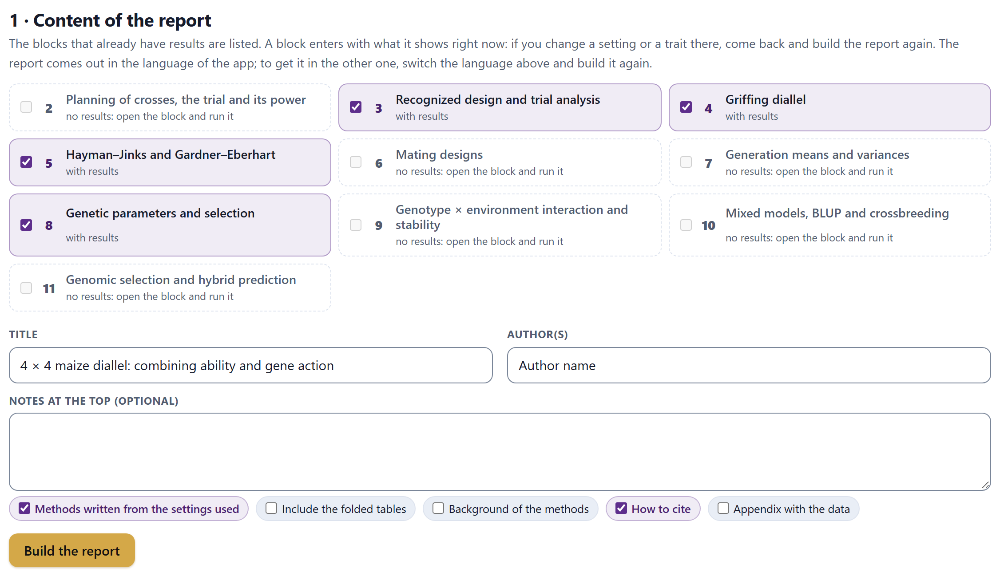
Figure 12.1. Card 1 after analyzing the maize diallel in Blocks 3, 4, 5 and 8.
A block counts as analyzed only if its results correspond to the data loaded now: if you change files in Block 3, the blocks you have not reopened appear without results, even if they keep the earlier ones. There are two special cases. Block 10 runs a crossbreeding example the first time it is opened, and Block 8 fills its recurrent selection table with the example of Fehr (1987); the report takes them only if you ran the crossbreeding yourself or if the table uses values from Block 6 or values you typed. Block 2 contributes the crossing and trial plan, if you built one.
Below come the Title, the Author(s) and some Notes at the top (optional), which appear as they are at the beginning of the report. Five checkboxes decide the optional parts:
Methods written from the settings used (ticked): the methods section of Section 12.4.
Include the folded tables: the tables that sit inside folded boxes in the app, such as those for each entry or those of coefficients.
Background of the methods: an appendix with the assumptions, formulas and references cards of each block included.
How to cite (ticked): the citation of the program at the end.
Appendix with the data: the complete data table, as analyzed.
The report comes out in the language of the app. To have it in the other one, switch the language with the ES · EN buttons on the top bar and build it again: tables, figures, methods and references change together.
12.3Preview, PDF and HTML
Build the report opens card 2 · Preview, PDF and HTML. Its tiles count the blocks, tables, figures and references, and give the size of the report; below, the whole report can be scrolled inside the card.
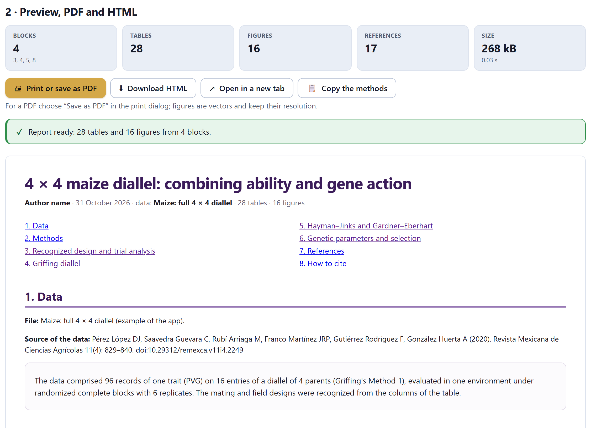
Figure 12.2. The report of the maize diallel: title, author, date, contents and the data section, with the source of the example and a paragraph describing the trial.
The four buttons do the following:
Print or save as PDF opens the browser’s print dialog; for the PDF, choose Save as PDF. Figures go as vectors and lose no resolution at any size.
Download HTML saves the report as a single file that opens in any browser, offline and without the app.
Open in a new tab shows it full screen, to read it or print it from there.
Copy the methods copies the methods section with its references to the clipboard, as plain text, ready to paste into a manuscript.
Table 12.2. The sections of the report.
Section
What it contains
Header and contents
Title, authors, date, data file, number of tables and figures, your notes and the links to each section
1. Data
The file, the source of the data if it is an example and a paragraph describing the trial
2. Methods
One paragraph per block, with the settings used and the original citation of each procedure
One section per block
Its tables and figures, in the order of the app, numbered and with their titles
References
Only the works cited in the methods, by author and year
Background of the methods
Optional: the assumptions, formulas and references cards of the blocks included
How to cite and data
The citation of the program and, if requested, the appendix with the analyzed data
12.4The written methods
The methods section is not a template with blanks: each block writes its paragraph from what it actually did. It says which design it recognized, which method and which model it used, how it estimated each quantity, what significance level it applied and what checks it made, and it cites each author by name and year.
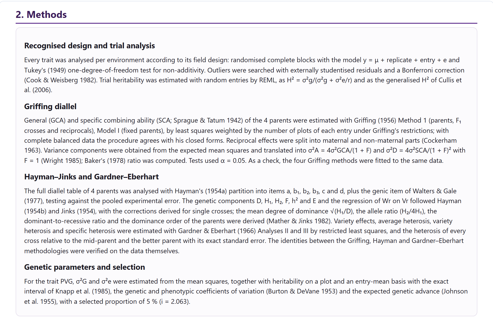
Figure 12.3. The methods of the maize diallel: one paragraph for each of the four blocks, with Griffing’s method 1, model I, Hayman’s partition with the Walters and Gale item, and the proportion selected in Block 8.
References are registered as the text cites them, so the final list has exactly the works named, not one more; the program’s tests check that none is left uncited. When two works by the same author and year are cited, such as Hayman (1954a) and Hayman (1954b), they carry a letter; if only one is cited, the year goes alone. In Spanish, two authors are joined with “y” and three or more are abbreviated with “et al.”, the usual form in papers; in English, with “&”. If some block were left without a paragraph, the card warns about it.
!Important · review the methods before using them
The text describes what the app did with the data, but it cannot know what happened in the field: the location, the dates, crop management or how each trait was measured. Complete it with that information and read it carefully before pasting it into a manuscript; you are the one who signs the paper.
12.5Tables and figures
Each block section gathers the tables and figures of its cards, in the order in which they appear in the app. Tables are numbered consecutively throughout the report and take as their title the heading they sit under; when a card has two tables under the same heading, they are told apart as “part 1 of 2” and “part 2 of 2”. Buttons, menus, figure editors and the text of the other language are removed.
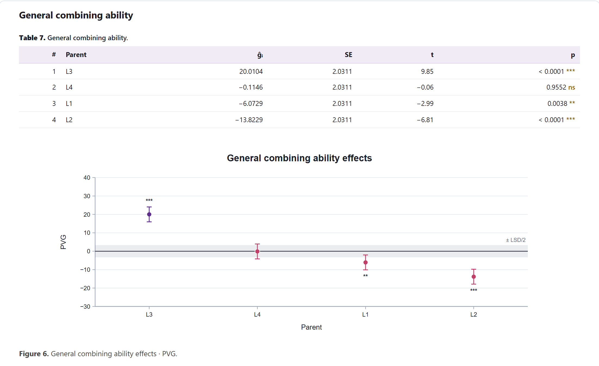
Figure 12.4. General combining ability in the report: Table 7 and Figure 6, just as they were in Block 4 (between them goes Table 8, of least significant differences, which is omitted here).
Figures go in as you left them in their editor: with your titles, colors, font sizes and proportions. If you want a different figure in the report, change it in its block before building it. They go as vector graphics (SVG), so they print sharp at any size.
12.6The ZIP package
Card 3 · ZIP package saves the report and all its pieces separately, which is what a journal asks for or what is worth archiving with a thesis. The Figures besides SVG menu adds each figure as PNG, as TIFF (the format many journals ask for) or in no other format; Resolution goes from 150 to 900 dpi. Two checkboxes add the results workbook (.xlsx) of each block and the analyzed data.
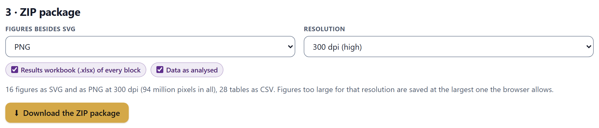
Figure 12.5. Card 3. The note works out how many pixels the images will have at the chosen resolution: here, 94 million for 16 figures at 300 dpi.
Table 12.3. What the package contains.
File or folder
Content
report.html
The same report as the preview
tables/
Each table in CSV, with its number and title in the file name
figures/svg/ and figures/png/ (or tiff/)
Each figure as a vector and as an image at the chosen resolution
results/
The results workbook of each block, the same as its download button
data/
The data table as analyzed
methods.txt
The methods section and the references as plain text
README.txt
What each file is, with the program version and the date
TIFF goes uncompressed and weighs about 3 bytes per pixel: the 16 figures of the example at 600 dpi would add up to more than 1 GB. For a journal it is usually enough to download as TIFF, from each figure’s panel, only the ones you will submit. If a figure is too large for the requested resolution, it is saved at the highest the browser allows and the note warns about it. With many figures, the conversion takes a few seconds and a notice shows the progress.
12.7How to cite and end of the tour
Card 4 · How to cite gives the citation of the program with its version and its DOI (10.5281/zenodo.23005938, which always leads to the most recent version), and Copy the citation puts it on the clipboard. The same citation appears at the end of the report and on the home page of the app.
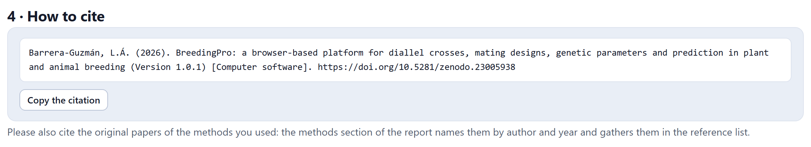
Figure 12.6. The citation of BreedingPro, version 1.0.1.
Besides the program, cite the original papers of the methods you used: the methods section names them and the reference list gathers them, so all you need to do is keep them when you edit the text.
✓Verified · the fidelity of the report
In a session with six blocks, an independent routine went through the app page and compared each cell with the report: 40 tables and 4,052 cells, none different; the 26 figures, identical to those of the app; no leftover buttons, menus, editors, text of the other language or empty values. The package, opened with the operating system’s ZIP reader, had its 103 files complete and error-free, and the report printed as a PDF kept all the figures as vectors.
This ends the tour of the blocks. ← Genomics returns to Block 11 and Back to home, to the home page. The appendices that follow gather the file formats, the decision rules, a glossary, troubleshooting and the references.
A–F
Appendices · reference material
Appendices
The appendices are not read from start to finish: they are consulted. Here you will find the exact rules by which the app reads and writes each file, the decision rules of the whole manual gathered in one place, a glossary of terms, acronyms and symbols, the solutions to the most common problems, the full references of the methods and the data, and the third-party components with their licenses.
AFile formats
BSummary of decision rules
CGlossary
DTroubleshooting
EReferences
FThird-party components
AFile formats
Chapter 3 explains how to lay out a plot table and how the app recognizes the role of each column and the design (Tables 3.1 to 3.3); Chapters 10 and 11 describe the tables specific to their blocks. This appendix gathers the exact rules in one place: which files are read, what counts as missing, the line that declares the design, the generation codes, the tables of Blocks 10 and 11 and the format of each file the app downloads.
A.1 Files that are read
Table A.1. Ways of giving the data to the app and how they are read.
Source
How it is read
What you should know
Spreadsheet .xlsx .xls .xlsm .ods
In Block 3 the sheet with the most data is opened, and the Workbook sheet menu switches to another.
Numbers are stored as numbers, so the decimal separator does not matter.
Delimited text .csv .tsv .txt
The separator is inferred from the first 30 lines: tab if it appears at least half as often as the semicolon; otherwise semicolon if there are more semicolons than commas; otherwise comma.
UTF-8 encoding, with or without a byte-order mark. Double quotes are accepted. Spaces do not separate columns. Empty rows are ignored, and so are lines that start with # before the headers, except the declaration line (Section A.3).
The app’s data sheet
A block copied from any spreadsheet, or text separated by commas, semicolons or tabs, is pasted with Ctrl+V.
Up to 20,000 rows and 5,000 columns. It is saved in the browser every time it changes (Section 3.2).
Block 2 field book
It passes to Block 3 without downloading anything, empty or with a simulated yield.
It brings the declaration line, so the design is not inferred: it is read (Section 2.8).
iMissing values
The empty cell, NA, N/A, NaN, null, ., .., -, --, ?, *, missing, perdido, faltante, s/d, sd, nd, n.d. and the errors #N/A, #VALUE! and #DIV/0! are missing, in upper or lower case. In a trait, any other text (12.5a) also becomes missing, and card 2 says how many there were and in which row the first one is.
iDecimal separator
On automatic, each column uses a decimal comma if it has more values like 12,5 or 1.234,5 than like 12.5. The Decimal separator menu imposes point or comma on all of them. In a comma-separated CSV, an unquoted 12,5 splits the row into two columns: save that file with semicolons.
A.2 The plot table
One row per plot (or per plant) and one column per datum; the first row with content carries the column names, in Spanish or in English. Names are compared without accents, case, spaces or signs, and Table 3.1 gives the ones recognized for each of the 16 roles. Two identical column names are told apart by adding (2), (3)… The rest is summarized in Table A.2.
Table A.2. How the pedigree, the type of each entry and the generations are written.
Datum
How it is written
See
Pedigree in two columns
Female (or line, F2 plant, parent 1) and male (or tester, parent 2). If there is also an entries column with numbers that correspond one to one with the pedigree, the entry is named by its pedigree (L1 × L2) and the number is kept.
3.3
Pedigree in the name
A × B, A x B, A/B, A*B or compact codes such as 1x3, provided at least half of the names are crosses and the parents recur among them. A name equal to a parent is that parent.
3.3
Entry type
testigo, check, control or comercial; progenitor or parental; recíproca; línea; probador; F1, cruza or híbrido. Without that column it is inferred: female equal to male is a parent, female different from male an F1, and an entry without parents in data with crosses, a check.
3.3
Generations
P1, P2, F1, F2, F3; the reciprocal F1RF1, F1R or F1rec; the backcrosses BC1, RC1, B1, retrocruza1 (and those to P2); the selfed backcrosses BC1S, BC11, B11, BS1 (and BC2S, B22, BS2). They go in the generation column, in the type column or in the entry name.
7.1
Check in a generation trial
One more entry that is not a generation: its name in the entries column, or written in the generation column itself (Testigo, H-520), which Block 3 reads as a check. It enters only standard heterosis.
7.7
Data per plant
Several rows with the same plot, or a Plant column. Each plot is summarized by the mean of its plants and the sampling error is kept apart.
3.8
Unreplicated means
One value per entry. The error of the original experiment (mean square, degrees of freedom, scale and replicates) is typed in card 3 of Block 3.
3.8
!Important · details that confuse when loading a table
Identification numbers. A numeric column with a name the app does not recognize (Lot, Furrow, Code) is taken as a response trait. Switch it to Ignore.
Females and males that share codes. In the North Carolina designs and line × tester, 1 × 1 is a cross between two different plants, not a parent; the app marks them with ♀ and ♂. If the codes recur across sets, it prefixes the set (S1·3).
Entry names. They are compared exactly between tables: to join the trial with the pedigree of Block 10 or with the markers of Block 11, each entry must carry the same name in both files.
A.3 The declaration line of the field book
Every Block 2 field book begins, if the checkbox Include the line that describes the design is left ticked, with a line like this one:
These are key=value pairs separated by commas. If the spreadsheet spread the line over several cells, Block 3 joins it back together. Keys are case-sensitive; a numeric value is read as a number.
Table A.3. Keys of the declaration line and who uses them.
Key
Values
Use
mating
griffing, partial (partial diallel), nc1, nc2, nc3 (North Carolina designs), ttc (triple test cross), lxt (line × tester), generations; the Block 3 menu adds none (genotype trial).
Block 3 takes the mating design without inferring it (confidence declared).
Block 6 takes it as the starting value of the control Inbreeding of the parents (F).
reps, k, blocks, locations, entries, seed
Replicates, lattice block size, blocks of the augmented design, locations, entries and random seed.
Record of the plan. With the seed, Block 2 regenerates the same field map.
Below the line go the headers of eleven fixed columns—Location, Plot, Replicate, Block, Row, Column, Entry, Genotype, Female, Male and Type—and one empty column for each trait typed in card 3 of Block 2 (Table 2.8). With the app in Spanish, the headers come out in Spanish; Block 3 understands them in both languages. The data are recorded in the empty columns without changing the names of the fixed ones.
A.4 The tables of Block 10
Table A.4. What the cards of Block 10 read. The column roles are described in Table 10.3.
Table
How it is written
See
Records card 1
One row per record with the individual, its sire and its dam; an unknown parent is written 0 or NA, or left empty. Roles are proposed from the name: Animal, ID, Individual or Genotype is the individual; Sire, Father or Bull, the sire; Dam or Mother, the dam; CG, Litter or Group, a random effect; a numeric column with few integer values, a fixed effect, and one with many values, the response trait. In plants, the seed parent goes in as the dam.
10.2
Separate pedigree optional
Individual, sire and dam columns with ancestors that have no records, so that the relationships reach further back. Parents without a row of their own are added as founders.
10.2
Groups card 4, estimate
One row per group: cross, n, mean, SE. The number and the standard error can be left empty (1×2, , 309); with every SE given, the weights are 1/SE² and there is a lack-of-fit test.
10.6
Crosses
Sire first: A, A×B, C×(A×B), (A×B)×(A×B). The sign can be ×, *, · or an x between spaces. For prediction also rot(A,B) and rot(A,B,C) (rotations) and comp(A,B,C) (composite with equal parts) or comp(A:0.5,B:0.25,C:0.25).
10.6
Parameters predict with known parameters
One row per parameter with its value: mu, 14.3, gI:B, -3.18, gM:B, …, hI, -0.04, hM, …, rI, -6.20. Those not written are zero: the breed with no effect written is the reference.
10.6
Breed means heterosis in percent
One row per purebred (A, 460) and, separately, the percentages of individual and maternal heterosis and of recombination loss.
10.6
A.5 The tables of Block 11
Table A.5. What the cards of Block 11 read. The marker codings are in Table 11.3.
Table
How it is written
See
Markers card 1
One row per individual, with its identifier in the first column and one column per marker; if the file comes the other way around, the checkbox Markers in rows transposes it. Dosages 0/1/2, −1/0/1, presence or absence 0/1 (the menu A 0/1 file means decides whether they are pure lines or dosages) or letters (AA/AB/BB, A/C/G/T, and the two-base codes R Y S W K M as heterozygotes). Missing: empty, NA, - or N.
11.2
Phenotypes card 3
The identifier in the first column and one column per trait. Those of the example or the Block 3 trial also serve, if its entries have markers.
11.4
Hybrids card 5
One row per evaluated hybrid: the line of group 1, that of group 2 and the traits (adjusted means). The names of the first two columns are those of the groups. The markers of all the lines go in card 1.
11.6
Three-way and double crosses
One per line, (A×B)×C or (A×B)×(C×D), with the lines on each side from different groups.
11.6
A.6 Files the app produces
All CSV tables are written comma-separated, with a decimal point and up to 12 significant digits, in UTF-8 with a byte-order mark (spreadsheets open them with the accents right) and with Windows line endings. A field that contains a comma, a semicolon, quotes or a line break goes in double quotes. In the .xlsx workbooks, each table takes its own sheet; sheet names follow the language of the app, and some column headers use fixed symbols or abbreviations (sigma2A, SE, GEBV). The file name is formed from the block and the trait, without accents or signs (griffing_Yield.xlsx). The names below are those of the app in English.
Table A.6. What each block downloads. The figures, the report and the package are described in Sections I.6, 12.3 and 12.6.
Block
File
Content
B2
field_book.xlsx · field_book.csv · entries.csv
Sheets Field book, Entries, Crossing block and Design; the CSV, only the field book, with the declaration line if requested; the list of crosses and entries.
Sheets Parameters, rG, rP, rE, P, G, Indices, Selection and Methods.
B9
gxe_interaction_….xlsx
Sheets GxE table (with the imputed cells), ANOVA, Regression, Variances, Ranks, AMMI axes, AMMI genotypes, AMMI environments, GGE and Two stages.
B10
blup_and_crossbreeding.xlsx
Sheets Pedigree (with F and b), Components, Breeding values, one for each fixed factor, Trial BLUP, Dickerson, Breed diallel and Predictions.
B11
genomics.xlsx
Sheets Markers, G (up to 1,500 individuals), GEBV, Effects, Validation and Hybrids.
B12
Report .html · package .zip
The name comes from the title of the report. The package brings report.html, tables/, figures/, results/, data/, methods.txt and README.txt (Table 12.3).
Figures
Panel of each figure
PNG, JPG, WEBP and TIFF (uncompressed) up to 900 dpi, or SVG, which is vector; the panel gives the size in pixels and in centimeters.
Only the sheets that have results go into a workbook: a Block 6 with a North Carolina II brings no Sums and differences, and a Block 10 without crossbreeding brings no Dickerson.
BSummary of decision rules
The decision rules of the manual, in the order of the app. Those of the introduction and of Chapters 1 to 5 are repeated just as they appear there; those of Blocks 6 to 12, whose chapters give the criteria within the text, are summarized here in the same format. Each box names the section that explains the theory it rests on. They are guides for interpretation, not laws: knowledge of your species and of your program always comes first.
InIntroductionI.8Which block to useI.9Reading a P value
B1Home, labs and theory1.2How the app words the interpretation
B2Planning crosses, trial and power2.4Which field design to use
B3Data and field analysis3.6The quality of the trial3.9Before moving on to the genetic blocks
B4Griffing diallels4.4Which effect is useful for what
B5Hayman–Jinks and Gardner–Eberhart5.5The Wr–Vr graph
B6Mating designs6.2The inbreeding F of the parents6.5Components and tests
B7Generations and heterosis7.3The variance of each mean7.4Scaling, models and heterosis
B8Genetic parameters and selection8.2Reading a heritability8.6When to trust path analysis8.7Which index to use
B9Genotype × environment interaction9.2Interaction and stability9.7AMMI and the GGE biplot
B10Mixed models, BLUP and crossbreeding10.3The mixed model10.5Breeding values and crossbreeding
B11Genomics and hybrid prediction11.2Markers and GBLUP11.5Validation and hybrids
B12Report, figures and package12.3Which output to use
InIntroduction to BreedingPro
✓Decision rule · which block to useSection I.8
If the table has the female and male of a group of parents crossed among themselves…
then Griffing (4), Hayman–Jinks (5) and parameters (8).
If males and females are different groups (NC, L × T) or the diallel is partial…
then mating designs (6) and parameters (8).
If there is a generation column (P₁, P₂, F₁, F₂…)…
then generations (7).
If they are genotypes in several locations or years…
then parameters (8), stability (9) and, with a pedigree, BLUP (10).
If you have a pedigree or markers…
then BLUP (10) or genomics (11).
Block 3 makes this choice for you when it recognizes the design, and states it on the 3 · Recognized design card.
✓Reading rule · a P valueSection I.9
If P < 0.001 (***)…
then very strong evidence.
If 0.001 ≤ P < 0.01 (**)…
then strong evidence.
If 0.01 ≤ P < 0.05 (*)…
then moderate evidence.
If P ≥ 0.05 (ns)…
then not significant at 5%.
A P value does not measure the importance of an effect: also look at its size and its standard error.
B1Home, labs and theory
✓Decision rule · how the app words the interpretationSection 1.2
If b does not differ from 1 (|t| smaller than the critical value at 5% with p − 2 degrees of freedom)…
then the additive–dominance model holds.
If b departs from 1…
then there is non-allelic interaction or another broken assumption, and the components are biased.
If (H1/D)½ < 0.25…
then gene action is practically additive.
If the intercept of the line is positive and significant…
then partial dominance.
If it is negative and significant…
then overdominance.
If it does not differ from zero and (H1/D)½ is between 0.8 and 1.2…
then complete dominance. Outside that interval, the app warns that the intercept test has little power (Exercise 4).
If r(Yr, Wr + Vr) < −0.3 · > 0.3…
then the dominant · recessive alleles increase the trait; between both values the direction is unclear.
The app also names the two parents closest to the origin: they are the ones that carry the most dominant alleles.
B2Planning crosses, trial and power
✓Decision rule · which field design to useSection 2.4
If there are few entries (up to 15 or 20) and the land is uniform over the size of a replicate…
then randomized complete blocks.
If there are many entries and a full replicate no longer fits on homogeneous soil…
then α-lattice, with blocks of a size close to √v.
If there are many new entries and seed for a single plot of each…
then augmented, with at least two checks and 12 or more error degrees of freedom.
If the plots are pots or homogeneous units (greenhouse, laboratory)…
then completely randomized.
The app requires at least two replicates, except in the augmented design, and warns when the error is left with fewer than 12 degrees of freedom.
B3Data, recognized design and field analysis
✓Reading rule · the quality of the trialSection 3.6
Test
Fine
To check
Normality of residuals (Shapiro–Wilk)
p ≥ 0.05: holds
p < 0.05: check the Q–Q plot
Replicate × entry additivity (Tukey, 1 df)
p ≥ 0.05: additive
p < 0.05: non-additive: try a transformation
Outliers (Bonferroni)
none
some: review in card 4
Repeatability (H²c)
≥ 0.5: informative trial
0.3 to 0.5: moderate; < 0.3: low
Precision (CV)
≤ 12%: good
12 to 20%: acceptable; > 20%: low
Gain from incomplete blocks
≥ 5%: blocks helped
< 5%: little gain
The CV limits are indicative: they depend on the crop and the trait. If Bartlett’s test of the combined analysis gives p < 0.05, use the two-stage analysis of Block 9.
✓Rule of thumb · before moving on to the genetic blocksSection 3.9
If a column was left with a wrong role or as Ignore…
then correct it in card 2: everything else depends on it.
If the mating design has medium or low confidence…
then read the reasons and check Recognized entries and the figure of crosses present.
If there are outliers…
then compare them with the field book and exclude only proven errors.
If normality or additivity fail…
then consider transforming the trait before loading it again.
The genetic blocks use exactly what remains in Block 3: its data, its design, the excluded observations and the external error.
B4Griffing diallels
✓Reading rule · which effect is useful for whatSection 4.4
High, significant GCA (ĝi)
The parent passes its value on to all its crosses: useful for forming populations and synthetics and for choosing the parents of a program.
High, significant SCA (ŝij)
The pair performs better than its GCA effects predict: useful for hybrids of that combination, not for choosing parents.
Maternal effect (mi)
Which parent is the female matters: use the parent in the favorable direction (cytoplasm, endosperm, seed size).
Non-maternal reciprocal (nij)
The direction matters only in that pair; confirm it before drawing conclusions.
Baker’s ratio sums up the balance: close to 1, GCA predicts the crosses well and additive action dominates (Section 4.5).
B5Hayman–Jinks and Gardner–Eberhart
✓Reading rule · the Wr–Vr graphSection 5.5
Slope that does not depart from 1
The additive–dominance model is adequate; if it departs, there is epistasis or genes correlated between parents.
Near: the parent carries mostly dominant alleles; far: recessive ones.
Correlation between the parent’s value and Wr + Vr
Positive: dominant alleles decrease the trait; negative: they increase it.
B6Mating designs
✓Decision rule · the inbreeding F of the parentsSection 6.2
If the parents are inbred lines (line × tester, partial diallels of lines)…
then F = 1.
If they are plants from a population (North Carolina designs, triple test cross)…
then F = 0.
If they are lines with few generations of selfing…
then F = 0.5 or 0.75, depending on the generation.
If the Block 2 field book declared another value…
then the app uses that one: confirm it.
With the same mean squares, going from F = 0 to F = 1 divides σ²A by 2 and σ²D by 4.
✓Reading rule · components and tests of a designSections 6.5 to 6.8
If a component comes out negative…
then the true variance is close to zero or replicates are lacking. It is reported as it comes out; with a negative σ²D there is no degree of dominance, H² or Baker’s ratio.
If the two σ²A of a North Carolina II, that of males and that of females, differ greatly…
then suspect maternal effects or that males and females do not come from the same population.
If in the triple test cross the contrast L1 + L2 − 2L3 is significant…
then there is epistasis, provided L3 really is the F1: check F₁ tester (L₃).
If in line × tester the interaction dominates and σ²A is imprecise…
then almost all the variation among crosses is specific; a few purposely chosen testers do not estimate the σ²A of a population.
The test that a component is zero is the F of its source, not its standard error.
B7Generations and heterosis
✓Decision rule · the variance of each meanSection 7.3
If the plants were randomized one by one (or there is one plant per plot)…
then the variance among individuals divided by their number, s²/n.
If there are replicated plots of several plants…
then the plot error without blocks, which is what automatic does.
If there is a single value per plot…
then the residual mean square; there is no D, H, F, E nor effective factors.
If there are plots and among individuals / n is forced…
then the standard errors come out too small and any difference looks significant: do not do it.
The blocks do not enter the variance of the means: each generation is in all of them and their effect cancels out in the comparisons.
✓Reading rule · scaling, models and heterosisSections 7.4 to 7.7
If a single scaling test is significant…
then the additive–dominance model is not enough; the joint test says which epistasis is needed.
If the scaling tests fail…
then before adding epistasis try a transformation of the trait: it may be a scale effect.
If [h] and [l] are significant with the same sign · with opposite signs…
then complementary · duplicate epistasis (in the chosen metric).
If D comes out negative…
then there are few plants, linkage or epistasis; read Warner’s h² and H² from the F2.
If the question is gene action · whether the F1 is worthwhile…
then read heterosis over the parents · standard heterosis against the check.
The difference is what is tested, with its standard error and Satterthwaite degrees of freedom; the percentage only helps to read it.
B8Genetic parameters and selection
✓Reading rule · a heritabilitySections 8.2 to 8.4
If H² on a mean basis < 0.3 · 0.3 to 0.6 · > 0.6…
then low · medium · high (the gray band of Figure 8.2).
If Knapp’s interval is wide (few genotypes)…
then the class is uncertain: report the interval, not just the value.
If there are several environments…
then use the combined H², with σ²GE; that of a single environment mixes the interaction with the genetic part.
If the trial has incomplete blocks or is unbalanced…
then Cullis’s H².
With a negative σ²G the heritability is reported as it is, but genetic advance is taken as zero.
✓Decision rule · when to trust path analysisSection 8.6
If the app does not show the table (the matrix is not positive definite or R² > 1)…
then use the phenotypic correlations, remove traits with small σ²G or increase the ridge constant.
If the condition number exceeds 100 or there are large VIFs…
then the direct effects are unstable even if the matrix is valid.
If a direct effect is small and the total correlation large…
then the trait acts through others: its indirect effects tell you so.
✓Decision rule · which selection index to useSections 8.7 and 8.8
If P, G and the economic weights are well estimated…
then Smith–Hazel.
If G and P are unreliable…
then the base index (b = w).
If a trait must not change…
then the restricted index.
If the ratio between gains matters…
then the proportional gains index, with θ > 0.
If there are no economic weights…
then the desired gains index, or the eigen index (ESIM) for the most heritable combination.
If there is neither P nor G…
then the rank-sum of Mulamba and Mock or Elston’s index.
The coefficients are not interpreted one by one: what matters are the expected gains in each trait.
B9Genotype × environment interaction
✓Reading rule · interaction and stabilitySections 9.2 to 9.6
If the environments are a sample of the region · are the only ones of interest…
then test the genotypes against the interaction · against the error.
If Bartlett’s test rejects equal errors…
then read the two-stage analysis.
If b does not differ from 1 and S²d is not significant…
then broad, predictable adaptation; b > 1, it takes advantage of good environments; b < 1, it holds up in poor ones.
If S²d is significant…
then the genotype’s response is unpredictable, even if its mean is high.
If you sort by the mean rank of the summary…
then use it to order the discussion, not to decide: it adds up statistics that measure different things.
Static stability, in which the genotype yields the same in every environment, is rarely desirable for yield: a genotype that does not change does not take advantage of good environments.
✓Decision rule · AMMI and the GGE biplotSections 9.7 and 9.8
If you must decide how many AMMI axes to retain…
then Cornelius’s residual test; Gollob’s is liberal.
If a genotype has a high mean and a low WAAS…
then it is desirable: quadrant IV of WAAS against the mean.
If the first two GGE components explain less than 60%…
then read the biplot with caution.
If the which-won-where view forms sectors…
then they are mega-environments only if the pattern recurs in other years.
If you are looking for a test environment…
then one that is long and close to the average-environment axis; a long one with a large angle serves to discard unstable genotypes.
B10Mixed models, BLUP and crossbreeding
✓Decision rule · the mixed modelSections 10.3 and 10.4
If there are hundreds of records · only a few…
then estimate the variances by REML · give them as known, from the literature or from a larger population.
If you want to know whether a random effect is needed…
then read the likelihood ratio against the ½χ²0 + ½χ²1 mixture; compare only models with the same fixed effects.
If there are many small contemporary groups…
then the group as a random effect.
If there are individuals with several records…
then add the permanent environment.
If the model exceeds 2,600 unknowns…
then trim the pedigree to the ancestors of the individuals with records.
✓Reading rule · breeding values and crossbreedingSections 10.3, 10.5 and 10.6
If the standard error of prediction is as large as the differences…
then still choose by breeding value: it already discounts that uncertainty.
If plots are missing, replicates are unequal or the heritability is low…
then the trial BLUP beats the mean; with families of few plots, the relationships (K = A) help most.
If you split the additive and non-additive parts with few families…
then the split is not reliable: also look at the additive-only model.
If you take the recombination loss from a paper…
then use its same convention, /4 or /2.
If a parameter comes out not estimable…
then the groups do not separate it: add backcrosses, F2 or three-breed crosses.
B11Genomic selection and hybrid prediction
✓Decision rule · markers and GBLUPSections 11.2 to 11.4
If you have no other criterion for quality control…
then the default values: up to 20% missing per marker and per individual, and a MAF of 0.05 or more.
If there are few markers and Block 10 has the pedigree…
then blend G with A (Weight of the pedigree).
If an individual hardly resembles its supposed sire genomically…
then suspect a pedigree error.
If the genomic heritability comes out lower than that of the trial…
then some of the QTL are not in disequilibrium with the panel.
If a marker has a large effect…
then it deserves a look, not a conclusion: association is tested with other methods.
✓Reading rule · validation and hybrid predictionSections 11.5 and 11.6
If you want to know how well the model predicts…
then read the cross-validation, not the correlation with the individual’s own record, and leave Re-estimate the variances in every training set ticked.
If the slope of the validation is close to 1…
then the predictions neither exaggerate nor shrink the differences.
If you compare genomic with phenotypic selection per year…
then use the program’s real years per cycle: the ratio depends almost entirely on them.
If T0 drops sharply compared with T2…
then the new lines have no close relatives among the evaluated ones.
If two lines are almost identical…
then keep one: their crosses will give practically the same.
B12Report, figures and results package
✓Decision rule · which output to useSections 12.3 and 12.6
If you are going to read, review or print…
then the preview and Print or save as PDF.
If you share it with someone who does not have the app…
thenDownload HTML: it opens in any browser, offline.
If you are writing a manuscript…
thenCopy the methods, and complete them with what happened in the field.
If you are submitting to a journal or archiving a thesis…
then the ZIP package; TIFF only for the figures you submit.
If you need it in the other language…
then switch ES · EN and build it again.
Each block enters with what it shows at that moment: if you change something in a block, build the report again.
CGlossary
The terms, acronyms and symbols of the manual with a brief definition and the section where they are explained at leisure. Below each term, in parentheses, goes its Spanish name when it differs, as it appears in the app with the ES button and in the literature in Spanish.
C.1 Acronyms
Table C.1. Acronyms of the manual and the app. In parentheses, the Spanish acronym when the app in Spanish or the Spanish literature uses a different one.
Acronym
Meaning
Acronym
Meaning
AMMI
Additive main effects and multiplicative interaction
GCA
General combining ability (ACG)
ANOVA
Analysis of variance
GEBV
Genomic estimated breeding value, in the results sheets
ASV
AMMI stability value (Block 9); in Block 11, the average semivariance of K (SM)
GGE
Genotype plus genotype × environment: what the GGE biplot draws
BC
Backcross (RC): BC1 to P1, BC2 to P2
IPCA
Interaction principal component axis, in AMMI
BLUP
Best linear unbiased predictor
L × T
Line × tester (L × P)
CI
Confidence interval (IC)
LSD
Least significant difference (DMS)
CRD
Completely randomized design (CA)
MAF
Minor allele frequency
CV
Coefficient of variation; CVg, CVp and CVe: genetic, phenotypic and environmental
MS · MSE
Mean square · error mean square (CM · CME)
CV1
Cross-validation scheme that predicts new individuals
NC I, II, III
North Carolina designs (CN I, II, III)
DArT
Diversity Arrays Technology markers
PEV
Prediction error variance
df
Degrees of freedom (gl)
QTL
Quantitative trait locus
dpi
Dots per inch (ppp)
RCBD
Randomized complete block design (BCA)
EBV
Estimated breeding value (VG)
REML
Restricted maximum likelihood
EM
Expectation–maximization algorithm
RR-BLUP
Ridge-regression BLUP on the markers
ESIM
Eigen selection index
SCA
Specific combining ability (ACE)
F1, F2, F3
First, second and third filial generation
SD · SE
Standard deviation · standard error (DE · EE)
G×E
Genotype × environment interaction (G×A)
SEP
Standard error of prediction: √PEV (EEP)
GA
Expected genetic advance (AG)
SNP
Single nucleotide polymorphism
GBLUP
Genomic BLUP: BLUP with the marker relationship matrix
SS
Sum of squares (SC)
T0, T1, T2
Classes of the hybrid validation: none, one or both parents with hybrids in the training set
TA
Transmitting ability: half the breeding value (HT)
VIF
Variance inflation factor
WAAS · WAASY
Weighted average of absolute AMMI scores · combined with the mean
C.2 Terms
Table C.2. Glossary in alphabetical order.
Term
Definition
Section
A
Accuracy (exactitud)
Correlation between the true and the predicted value. In cross-validation it is approximated by r/√h².
10.3, 11.5
Additive and dominance variance (σ²A, σ²D) (varianza aditiva y de dominancia)
Variance of the breeding values and of the dominance deviations. Selection exploits σ²A; hybrids also exploit σ²D.
I.3, 4.5
Adjusted mean (media ajustada)
Mean of an entry corrected for the effects of the design (blocks, replicates), comparable across entries.
3.6
Alpha lattice (látice α)
Resolvable incomplete block design: each replicate is divided into small blocks, which absorb the heterogeneity of the land.
2.4
AMMI
Model that fits the effects of genotypes and environments and decomposes the interaction into a few multiplicative axes (IPCA); the rest is taken as noise.
9.7
Animal model (modelo animal)
Mixed model in which each individual in the pedigree has its breeding value, whether or not it has records.
10.3
Augmented design (bloques aumentados)
Design in which some checks are repeated in each block and the new entries appear only once; the checks estimate the block effects.
2.4, 3.8
Average degree of dominance (grado medio de dominancia)
√(H1/D) or √(2σ²D/σ²A): 0 without dominance, between 0 and 1 partial, 1 complete and more than 1 apparent overdominance.
4.5, 5.4
Average semivariance (ASV) (semivarianza media, SM)
tr(K)/n − 1′K1/n²: converts σ²g into the genetic variance among the individuals analyzed.
11.4
B
Baker’s ratio (razón de Baker)
2σ²GCA/(2σ²GCA + σ²SCA): close to 1, GCA predicts the crosses well.
4.5
Bending (doblado de una matriz)
Correction of an impossible covariance matrix (negative eigenvalues) to make it possible, changing it as little as possible.
8.7
BLUP
Prediction of a random effect that shrinks extreme values toward the mean according to their precision and makes use of relationships.
10.3
Boundary (frontera)
A variance estimated by REML that ends up at zero. It is reported as such, without a standard error, and its test uses a mixture of χ².
I.9, 10.3
Breeding value (valor genético)
Value of an individual as a parent: twice the mean deviation of its progeny from the population.
10.3
Broad-sense heritability (H²) (heredabilidad en sentido amplio)
Genetic fraction of the phenotypic variance, σ²G/σ²P, on a plot or a genotype-mean basis.
I.3, 8.2
C
Check (testigo)
Known variety or hybrid sown with the entries to compare them; it does not enter selection.
3.3, 7.7
Coancestry (coancestría)
Probability that two alleles taken at random, one from each individual, are identical by descent. The inbreeding of an offspring is the coancestry of its parents.
10.2
Combined analysis (análisis combinado)
The analysis of all environments together, with the entry × environment interaction. It is fitted in one stage or, if the model is very large, in two.
3.7
Condition number (número de condición)
Ratio between the largest and the smallest eigenvalue of the correlation matrix; more than 100 indicates strong collinearity.
8.6
Contemporary group (grupo contemporáneo)
Animals raised together, under the same management and season; it is fitted as a fixed or random effect.
10.4
Cross-validation (validación cruzada)
Predicting a group of individuals with a model fitted without them and comparing with what was observed; it measures the real predictive ability.
11.5
Cullis heritability (heredabilidad de Cullis)
Generalized heritability 1 − vΔ/(2σ²g), with the average variance of a difference between two means; valid with unbalanced data and incomplete blocks.
3.6
D
Diallel cross (dialelo)
All possible crosses among a group of parents. Griffing distinguished four methods, depending on whether the parents and the reciprocals are included.
4.1
E
Ecovalence (ecovalencia)
Sum of the squared residuals of a genotype in the additive model: its contribution to the interaction (Wricke).
9.5
Effective factors (factores efectivos)
Minimum number of genes that separate two parents, estimated with the Castle–Wright formula. It is a lower bound.
7.8
Efficiency (eficiencia)
How much a design with incomplete blocks improves on complete blocks in the precision of comparisons among entries.
2.4, 3.6
Environmental index (índice ambiental)
Mean of an environment minus the grand mean: it measures how good the environment was.
9.4
Epistasis
Interaction between genes at different loci. In generation means: additive × additive [i], additive × dominance [j] and dominance × dominance [l]; complementary or duplicate depending on the signs of [h] and [l].
7.1, 7.5
Expected mean square (cuadrado medio esperado)
Combination of variances that a mean square estimates. Block 6 computes it for the actual experiment, by traces, instead of copying it from a table.
6.3
F
F∞ and F2 metrics (métrica F∞ y F₂)
Two origins for the parameters of generation means: the mean of the pure lines the cross can yield (Mather and Jinks) or the F2 (Hayman).
7.5
Founder (fundador)
Individual in the pedigree with no known parents; the founders form the base, whose mean breeding value is 0.
10.2
G
GBLUP
BLUP with the genomic relationship matrix G. It is equivalent to ridge regression on all the markers (RR-BLUP).
11.4
General combining ability (GCA) (aptitud combinatoria general, ACG)
Average performance of a parent in its crosses, as a deviation from the grand mean. It depends mainly on the additive variance.
I.3, 4.4
Genetic advance (GA) (avance genético, AG)
How much the mean would rise if the chosen proportion were selected on its phenotypic mean: i·σP·H².
8.2
Genomic heritability (heredabilidad genómica)
The part of the variance the markers capture. It is lower than the true one if some of the QTL are not in disequilibrium with the panel.
Change in the ranking of or the differences among genotypes from one environment to another.
9.2
H
Heterosis
Superiority of the F1 over the mean of its parents or over the better of them. In a variety diallel it is split into average, variety and specific heterosis.
5.6, 7.7
Heterotic group (grupo heterótico)
Set of lines that are crossed with those of another group and not among themselves, such as the dent and flint lines of maize.
11.6
I
Ideal genotype (genotipo ideal)
Point of the GGE biplot with the highest mean and the greatest stability; it serves as a reference for comparing the others.
9.8
Inbreeding coefficient (F) (consanguinidad)
Probability that the two alleles at a locus of an individual are identical by descent. It is 1 in a pure line.
10.2
Inbreeding depression (depresión endogámica)
What the F2 loses relative to the F1: F1 − F2. Without epistasis, the F2 keeps half the heterosis.
7.7
Individual and maternal heterosis (heterosis individual y materna)
In crossbreeding, the advantage of the crossbred individual and that of having a crossbred dam.
10.6
J
Joint scaling test (prueba conjunta de escala)
Weighted least-squares fit of the means of all generations; its χ² says whether the model is enough (Cavalli).
7.5
L
Least significant difference (LSD) (diferencia mínima significativa, DMS)
The smallest difference between two means that is significant at the chosen level.
I.9, 3.6
Line × tester (línea × probador)
Each line is crossed with a few testers; it gives the GCA of lines and testers and the SCA of their crosses.
6.8
M
Maternal effect (efecto materno)
Part of an individual’s value that depends on its mother and not on its own genes. In a diallel, the systematic difference between reciprocal crosses; in the animal model, the maternal breeding value of the dam.
4.4, 10.4
Mega-environment (megaambiente)
Group of environments with the same winning genotype, which recurs over the years.
9.8
Mendelian sampling (muestreo mendeliano)
The part of an offspring’s breeding value that is not the average of its parents; its relative variance, b, enters the inverse of A.
10.2
Model I and model II (modelo I y modelo II)
Fixed parents or environments (only those are of interest) or random ones (a sample from a population). It changes the denominator of some tests.
I.9, 4.1
N
Narrow-sense heritability (h²) (heredabilidad en sentido estrecho)
Additive fraction of the phenotypic variance, σ²A/σ²P: the one that determines the response to selection.
4.5, 7.6
North Carolina designs I, II and III (Carolina del Norte I, II y III)
Mating designs of Comstock and Robinson: hierarchical (each male with its own females), factorial (males × females) and each F2 plant crossed to both parents of the F1.
6.1
P
Partial diallel (dialelo parcial)
Each parent is crossed with only s of the others, almost always in the circulant order of Kempthorne and Curnow.
6.9
Path analysis (análisis de sendas)
Decomposes the correlation of each trait with a dependent one into a direct effect and indirect effects through the others.
8.6
Permanent environment (ambiente permanente)
An individual’s own effect, with no relationships, that is repeated in all its records: what it has of good or bad from its history and not from its genes.
10.4
Plot error (error de parcela)
Variation among plots of the same entry not explained by their plants; in Block 7, σ²p.
7.3
Potence ratio (relación de potencia)
(F1 − MP)/(½|P1 − P2|): 0 intermediate inheritance, ±1 complete dominance, more than 1 apparent overdominance.
7.7
Power (potencia)
Probability that a test detects a difference that exists. Block 2 computes it before sowing.
2.6
Q
Quasi-F (cuasi-F)
F test whose denominator is a combination of mean squares, with Satterthwaite degrees of freedom; it is used when no single source serves as denominator.
6.3
R
Reciprocal effects (efectos recíprocos)
Differences between A × B and B × A. They are split into maternal (of the female) and non-maternal (specific to the pair).
4.4
Recombination loss (pérdida por recombinación)
What is lost when the favorable gene combinations of each breed are broken up; it appears in crosses whose parents are already crosses.
10.6
Relationship matrix (A, G) (parentesco)
Twice the coancestry between two individuals: A from the pedigree, G from the markers.
10.2, 11.3
Reliability (confiabilidad)
Square of the correlation between the true and the predicted breeding value: 1 − PEV/[(1 + F)σ²a]. Its square root is the accuracy.
10.3
Reliability index (Annicchiarico) (confiabilidad de Annicchiarico)
Relative performance, as a percentage of the mean of each environment, that a genotype exceeds with probability 1 − α.
9.5
Repeatability (repetibilidad)
Correlation between repeated records of an individual, (σ²a + σ²pe)/σ²P. The trial heritability of Block 3 is also a repeatability.
3.6, 10.4
Response to selection (respuesta a la selección)
Advance of the mean in the next generation: R = h²S = i·h·σA.
I.3, 8.9
Restricted maximum likelihood (REML) (máxima verosimilitud restringida)
Method for estimating variance components that discounts the degrees of freedom of the fixed effects; with balanced data it matches the moment estimators when these are not negative.
3.6, 10.3
Ridge (cresta)
Small amount added to the diagonal of a matrix so that it can be inverted or stabilized: the constant k of path analysis and the λ of the G matrix.
8.6, 11.3
Rotation and composite (rotación y compuesta)
Crossbreeding systems: in rotation, sires of two or three breeds are used in turn; the composite is a population formed from several breeds that mates at random.
10.6
S
Sampling error (error de muestreo)
Variation among the plants of the same plot; it is separated from the plot error when there are data per plant.
3.8
Scaling tests (pruebas de escala)
Contrasts A, B, C and D among generation means that are zero if the additive–dominance model is enough (Mather).
7.4
Selection index (índice de selección)
Linear combination of traits, I = b′y, for choosing the genotypes that most improve an aggregate breeding value.
8.7
Selection intensity (i) (intensidad de selección)
Superiority of the selected individuals in standard deviations. Some books call it k.
8.3
Sire model (modelo de padres)
Model in which the random effect is the transmitting ability of each sire; smaller, but it ignores the dams.
10.4
Specific combining ability (SCA) (aptitud combinatoria específica, ACE)
How much a cross yields above or below what the GCA of its parents predicts. It reflects dominance and epistasis.
I.3, 4.4
Stability variance (varianza de estabilidad)
The contribution of a genotype to the interaction in the form of a variance, which can be tested against the error (Shukla).
9.5
Standard heterosis (heterosis estándar)
Difference between the F1 and a check sown in the same trial, as a percentage of the check mean.
7.7
Static and dynamic stability (estabilidad estática y dinámica)
Yielding the same in every environment, or following the average pattern of the environments. Stability statistics measure one or the other.
9.9
Studentized residual (residual estudentizado)
Residual of a plot divided by its standard deviation estimated without it; it is used to flag outliers.
3.5
Superiority measure (Lin and Binns) (superioridad de Lin y Binns)
Mean distance of a genotype from the best one in each environment; the smaller, the better. It combines mean and stability.
9.5
T
Three-way and double crosses (cruzas triples y dobles)
Crosses of three or four lines; they are predicted with Jenkins’s rules from the nonparental single crosses.
11.6
Triple test cross (cruza triple de prueba)
Each F2 plant is crossed with both parents and with their F1; besides σ²A and σ²D, it tests epistasis.
6.7
Two-stage analysis (análisis en dos etapas)
First the adjusted means of each environment with their error; then a model of the genotype × environment table in which each mean is weighted by the precision of its environment.
9.3
W
WAAS
Average of the absolute values of a genotype’s scores on the retained AMMI axes, weighted by the interaction each axis explains; the smaller, the more stable.
9.7
Wr–Vr graph (gráfico Wr–Vr)
Covariance of each array with the parents against its variance; its line tells the degree of dominance, and the position of each parent, how many dominant alleles it carries.
5.5
C.3 Symbols with more than one meaning
Table C.3. The literature uses the same letters for different quantities; the block and the section make clear which one is meant.
Symbol
Meanings (section)
F
Inbreeding of the individual or of the parents (6.2, 10.2) · component F of the variances, Σdh (5.4, 7.6) · F statistic (I.9) · generations F1, F2, F3 (7.1).
D, H
Hayman’s additive and dominance components, D, H1 and H2 (5.4), and those of the generation variances (7.6) · scaling test D (7.4) · aggregate breeding value H = w′g of the index (8.7).
E
Environmental component (5.4, 7.6) · efficiency factor of a lattice (2.4).
h, H²
Narrow-sense heritability h² and broad-sense H² (4.5, 8.2) · dominance effect [h] of the means (7.1) · Hayman’s h², the net dominance (5.4) · heterosis coefficients hI and hM (10.6) · phenotypic accuracy h (11.5).
Slope on the environmental index (9.4) · slope of the Wr–Vr line (5.5) · Mendelian sampling variance (10.2) · coefficients of a selection index (8.7).
r
Number of replicates (3.6) · correlation (8.5) · reliability r² (10.3) · predictive ability (11.5) · recombination loss rI (10.6).
A
Pedigree relationship matrix (10.2) · scaling test A (7.4) · additive variance σ²A (4.5).
G
Genomic relationship matrix (11.3) · genotypic covariance matrix of an index (8.7) · effect of the genotypes in the GGE biplot (9.8).
P
Phenotypic covariance matrix (8.7) · parents P1 and P2 (7.1) · P value (I.9).
W
Wricke’s ecovalence Wi (9.5) · Annicchiarico’s reliability Wi (9.5) · Hayman’s covariance Wr (5.5).
S
Selection differential (I.3, 8.8) · deviations from regression S²d (9.4) · Huehn’s rank statistics S(1) to S(6) (9.6) · in Spanish, the average semivariance SM, which the app in English calls ASV (11.4).
d
Additive effects [d] of the means (7.1) · desired gains of an index (8.7) · dominance deviation at a locus, d/a (1.2).
k
Plants per plot (7.3) · ridge constant of path analysis (8.6) · block size of a lattice (A.3) · selection intensity in some books (8.3).
λ
Ridge of the G matrix (11.3) · eigenvalue λ² of the eigen index (8.7).
s
Crosses per parent in a partial diallel (6.9) · SCA effect ŝij (4.4) · variance among plants s² (7.3).
m
Mean of the generation means (7.1) · maternal effect mi of a diallel (4.4) · fraction m² of the maternal genetic effect (10.4).
σ²p, σ²P
Plot error of Block 7 (7.3) · phenotypic variance of the animal model (10.3).
DTroubleshooting
The most common problems, grouped by the moment they appear. Messages go in quotation marks, as they are seen on screen with the app in English; {n} marks a part that changes. Messages in red stop the analysis; amber ones only warn.
D.1 Opening the app and keeping your work
Table D.1. Problems when opening the app and when coming back to it.
Symptom or message
Cause
What to do
See
The page shows no colors or buttons, or does not respond.
Folders next to index.html are missing (js/, css/, vendor/) or the browser is old.
Copy the whole BreedingPro folder and use an up-to-date browser.
I.5
The institution does not allow pages to be opened as local files.
A browser or network policy.
Use Open BreedingPro.bat: it opens the same app with a server on your own computer (port 9200). Nothing leaves the machine.
I.5
When the page is reloaded, the data and results disappear.
The app remembers only the language, the theme, the figure style and the Block 3 data sheet.
Download Results (.xlsx) from each block or the Block 12 package before closing, and load the file again.
I.5
The data sheet does not appear on another computer, in another browser or in a private window.
It is saved in the browser where it was typed, and separately for each way of opening the app (double click or local server).
Always open the app the same way; to take the sheet elsewhere, Save as.
3.2
The Block 2 field map came out different when built again.
Another random seed.
Type the seed saved in the Design sheet of the workbook or in the declaration line.
2.5
D.2 Loading the data
Table D.2. Problems when reading a table in Block 3.
Symptom or message
Cause
What to do
See
“The entries column (genotype, cross or parents) is missing.” Cards 3 to 5 do not appear.
No column has the entry role, nor those of female and male.
In card 2, give the role Entry / genotype to the names column, or Female / line / parent 1 and Male / tester / parent 2 to the pedigree columns.
3.3
“There is no response trait: mark at least one numeric column as “Response trait”.”
The data columns were read as text or given another role.
Check the decimal separator and any text inside the numbers; mark the traits.
3.3
A column of lot, furrow or code numbers appears as a trait.
Its name is not recognized and 90% or more of its cells are numbers.
Switch it to Ignore.
3.3
Card 2 warns of non-numeric values in a trait.
Cells such as 12.5a or notes written next to the datum: they are taken as missing.
Correct in the data sheet, fix the value and Use these data →.
3.2
Decimals are misread: 12,5 as text or as 125.
The column mixes decimal comma and point, or a comma-separated CSV carries decimal commas.
Choose the Decimal separator, or save the CSV with semicolons.
3.3
The wrong sheet of the workbook was opened.
The one with the most data is opened.
Choose another in Workbook sheet.
3.2
“The workbook has no sheets with data.”
The workbook is empty or its sheets have no values.
Check the file in the spreadsheet and save it with the values.
3.2
The data come in wide form: one column per replicate or per environment.
The app needs one row per plot.
Columns → rows…; a diallel in matrix form, with Diallel table → rows.
3.3
Pasting does not work in the data sheet grid.
The browser does not allow the clipboard to be read.
Open Pasting does not work in this browser? Paste into this box instead and paste into the text box.
3.2
D.3 Recognized design and field analysis
Table D.3. Problems with the design and the analysis of each environment.
Symptom or message
Cause
What to do
See
The mating design comes out with medium or low confidence.
Entries of the complete design are missing, the partial diallel is not circulant, crosses of the factorial are missing, the females of a North Carolina II repeat codes across males or there are fewer than 20 F2 plants.
Read the reasons, check Recognized entries and, if needed, choose the design in the Mating design menu.
3.4
A North Carolina I is recognized as II.
The females of each male repeat codes with those of other males.
Choose North Carolina I in the menu, or give the females unique codes.
3.4
“{n} plots hold more than one entry (e.g., plot {k}).”
A data-entry error in the plot or entry column.
Correct the data: a plot cannot have two entries.
3.4
The row–column design is not used even though the data have row and column.
It is never chosen on its own.
Choose Rows and columns in the Field design menu.
3.4
A lattice or a row–column design was analyzed as complete blocks.
The data have no real incomplete blocks, or the row and column columns are missing.
That is correct; if it is not, check the roles of the block, row and column columns.
3.8
The environment is left without an error, without tests or LSD.
A single value per entry: they are means.
Type the Error of the original experiment: mean square, degrees of freedom, scale and replicates.
3.8
Two plots of the same entry come out as outliers with the same |t|.
With two replicates, the two residuals of an entry are equal and of opposite sign.
Decide with the field book which one is wrong; exclude only proven errors.
3.5
An adjusted mean carries a dagger (†).
The entry is not connected with the others in the design.
Check that it is in blocks that share entries with others.
3.6
The combined analysis says it was done in two stages.
The one-stage model would have more than 1,400 parameters.
That is normal; entries that are not in every environment are left out of the second stage.
3.7
The combined analysis warns that the F tests are approximate.
Bartlett’s test rejects that the errors of the environments are equal.
Use the two-stage analysis of Block 9.
3.7
D.4 Genetic and selection blocks
Table D.4. Messages and missing results in Blocks 4 to 9.
Symptom or message
Cause
What to do
See
A block says the data are not of its design.
Block 3 recognized another mating design.
Go to the block that card 1 indicates, or correct the design in Block 3.
3.9
A variance component comes out negative and carries a dagger.
The true variance is close to zero, or there are few replicates or parents.
It is reported as it comes out; the parameters that use it are not computed. More parents or replicates estimate it better.
4.5, 6.5
σ²A and σ²D change a lot from one analysis to another with the same data.
The inbreeding F of the parents changed.
Check the control Inbreeding of the parents (F).
6.2
The triple test cross shows highly significant epistasis for no apparent reason.
The F1 tester is not the one the app assumed.
Choose the right one in F₁ tester (L₃).
6.7
Block 7 gives no D, H, F, E or effective factors.
There is one value per plot: without plants there is no variance among individuals.
Load the data per plant.
7.3
In Block 7 everything is significant and the standard errors are tiny.
The variance of each mean was forced to among individuals / n with data in plots.
Go back to automatic.
7.3
In Block 8, a genotypic correlation comes out outside [−1, 1] or is left empty.
Small σ²G (the moment estimator is not bounded) or negative σ²G.
It is not truncated: read it with caution or remove that trait.
8.5
In Block 8, the path table does not appear.
The correlation matrix is not positive definite, or R² would come out greater than 1.
Use the phenotypic correlations, remove traits with small σ²G or increase the ridge constant.
8.6
“Some index has an accuracy or heritability above 1…”
The estimated G matrix does not fit inside P in some direction.
Remove the traits with very small σ²G or use the base index.
8.7
In Block 8, the genetic advance of a trait is zero.
With several environments, its σ²G came out negative.
That is as it should be: the trait has almost no genetic variance across environments.
8.4
“At least 3 genotypes and 2 environments with data are needed.”
Block 3 has no location or year column.
Give the role Location / environment or Year / season to the column that tells them apart.
9.1
In Block 9, some cells carry an asterisk.
They were missing and were estimated by EM-AMMI; the interaction loses one degree of freedom for each.
Check whether those combinations are really missing.
9.2
In Block 9, Annicchiarico’s reliability does not appear.
It is computed only when the larger value is the better one.
That is expected for days to flowering or disease incidence.
9.5
The GGE biplot carries a caution notice.
The first two components explain less than 60% of G + G×E.
Read it with caution and rely on AMMI and the stability statistics.
9.8
D.5 BLUP and genomics
Table D.5. Problems in Blocks 10 and 11.
Symptom or message
Cause
What to do
See
“The individual column is missing.”
No column has the individual role.
Assign it in Role of every column.
10.2
“The pedigree file needs individual, sire and dam columns.”
The separate pedigree does not have three recognizable columns.
Name them as in Table A.4 (individual, sire and dam).
10.2
Pedigree warnings: an individual repeated with different parents, an individual that is its own parent, a loop, or the same individual as sire and dam.
Data-entry errors in the pedigree, or selfs in plants.
The app keeps the first row and deletes the impossible parent; correct the file. In plants, tick Plants: selfing allowed.
10.2
“The system of equations has {n} unknowns; this block solves exactly (dense matrices) up to 2600…”
The pedigree is too large for the exact calculation in the browser.
Trim the pedigree to the ancestors of the individuals with records or analyze it in parts.
10.3
“Type every variance (greater than zero) or choose to estimate them by REML.”
A given variance is missing.
Complete them or switch to REML.
10.4
REML gives meaningless values or estimates nothing useful.
Too few records.
Give the variances as known.
10.4
The permanent environment is left out with a notice.
No individual has more than one record.
That is correct: the effect is not estimable.
10.4
Card 3 does not find the pedigree of the entries.
The names in the trial and in the pedigree do not match.
Use the same name in both files.
10.5
“Type at least two breeds.” · “unknown breed in "{cross}" (position {k})” · “missing ")" in "{cross}"”
The list of breeds or the way a cross is written.
Write the breeds separated by commas and the crosses as in Table A.4.
10.6
A Dickerson parameter comes out not estimable.
The groups do not separate it.
Add groups that contain it (backcrosses, F2, three-breed crosses) or remove the parameter with its checkbox.
10.6
The markers are read the wrong way around: one individual per column.
The file has the markers in rows.
Tick Markers in rows.
11.2
“Too few individuals have both phenotype and markers.”
The identifiers of the phenotype file, or the entries of Block 3, do not match those of the markers.
Use the same identifiers in both files.
11.4
Weight of the pedigree (Block 10) does not appear.
Block 10 has no pedigree that includes every individual with markers.
Load that pedigree in card 1 of Block 10.
11.3
The checkbox Include the SCA (K₁ ⊗ K₂) is disabled.
There are more than 700 evaluated hybrids: the SCA kernel would be too large.
Predict with the GCA.
11.6
“Too few hybrids have a phenotype and genotyped parents.”
The lines in the hybrid table are not in the marker file.
Check the names of the lines in both files.
11.6
“Write a three-way or double cross, for example (A×B)×C.” or a cross that is not predicted.
The way it is written, or a cross that needs crosses within the same group.
Write one cross per line, with the lines on each side from different groups.
11.6
D.6 Report and figures
Table D.6. Problems when building the report and exporting.
Symptom or message
Cause
What to do
See
A block appears with no results and cannot be chosen.
It has not been opened with the data loaded now.
Open the block, run it and come back to Block 12.
12.2
The report does not include the crossbreeding of Block 10 or the recurrent selection of Block 8.
The examples those blocks load on their own do not count as your analyses.
Run the crossbreeding, or type your values in the recurrent selection table.
12.2
The report shows values from before a change.
Each block enters with what it showed when the report was built.
Build the report again.
12.1
A figure in the report is not as you wanted it.
It goes in as it was left in its editor.
Change it in its block and build the report again.
12.5
The ZIP package weighs more than a gigabyte.
TIFF figures go uncompressed: about 3 bytes per pixel.
Leave the package figures in SVG or PNG and download as TIFF, from their panel, only the ones you submit.
12.6
A figure was saved at fewer dpi than requested, with a notice.
The browser limits the image size.
Lower the resolution or the size of the figure, or use SVG.
12.6
EReferences
The works cited in the manual and in the texts of the app (the home page, the assumptions, formulas and references cards of each block, and the examples), with their full details.
The symbol ◆ marks those that the methods section of Block 12 can name: with them you complete the reference list of a paper (Section 12.4). Five original titles include the name of a program; in its place goes […]. Chapters 3 to 5 cite “Hayman (1954)” and “Griffing (1956)” without a letter: they are Hayman (1954a) and Griffing (1956b). DOIs are given for the open-access papers from which example data come. The titles of works published in Spanish are kept in Spanish.
Aguilar, I., Misztal, I., Johnson, D.L., Legarra, A., Tsuruta, S. and Lawlor, T.J. (2010). A unified approach to utilize phenotypic, full pedigree, and genomic information for genetic evaluation of Holstein final score. Journal of Dairy Science 93: 743–752. ◆
Annicchiarico, P. (1992). Cultivar adaptation and recommendation from alfalfa trials in Northern Italy. Journal of Genetics and Breeding 46: 269–278. ◆
Bartlett, M.S. (1937). Properties of sufficiency and statistical tests. Proceedings of the Royal Society of London A 160: 268–282. ◆
Becker, H.C. and Léon, J. (1988). Stability analysis in plant breeding. Plant Breeding 101: 1–23.
Bernardo, R. (1994). Prediction of maize single-cross performance using RFLPs and information from related hybrids. Crop Science 34: 20–25. ◆
Buchanan, D.S. and Northcutt, S.L. (n.d.). Genetic principles of crossbreeding. Beef Cattle Handbook BCH-1400.
Bulmer, M.G. (1971). The effect of selection on genetic variability. The American Naturalist 105: 201–211. ◆
Bulmer, M.G. (1980). The Mathematical Theory of Quantitative Genetics. Clarendon Press, Oxford.
Burgueño, J., de los Campos, G., Weigel, K. and Crossa, J. (2012). Genomic prediction of breeding values when modeling genotype × environment interaction using pedigree and dense molecular markers. Crop Science 52: 707–719. ◆
Burton, G.W. and DeVane, E.H. (1953). Estimating heritability in tall fescue from replicated clonal material. Agronomy Journal 45: 478–481. ◆
Carvalho, S.P. and Cruz, C.D. (1996). Diagnosis of multicollinearity: assessment of the condition of correlation matrices used in genetic studies. Brazilian Journal of Genetics 19: 479–484.
Cavalli, L.L. (1952). An analysis of linkage in quantitative inheritance. In: Reeve, E.C.R. and Waddington, C.H. (eds.), Quantitative Inheritance. HMSO, London, pp. 135–144. ◆
Cerón-Rojas, J.J. and Crossa, J. (2018). Linear Selection Indices in Modern Plant Breeding. Springer, Cham. ◆
Cerón-Rojas, J.J., Crossa, J., Sahagún-Castellanos, J., Castillo-González, F. and Santacruz-Varela, A. (2006). A selection index method based on eigenanalysis. Crop Science 46: 1711–1721.
Christie, B.R. and Shattuck, V.I. (1992). The diallel cross: design, analysis, and use for plant breeders. Plant Breeding Reviews 9: 9–36.
Cockerham, C.C. (1954). An extension of the concept of partitioning hereditary variance for analysis of covariances among relatives when epistasis is present. Genetics 39: 859–882.
Cockerham, C.C. (1963). Estimation of genetic variances. In: Hanson, W.D. and Robinson, H.F. (eds.), Statistical Genetics and Plant Breeding. NAS-NRC Publ. 982, Washington, pp. 53–94. ◆
Cockerham, C.C. (1986). Modifications in estimating the number of genes for a quantitative character. Genetics 114: 659–664. ◆
Comstock, R.E. and Robinson, H.F. (1948). The components of genetic variance in populations of biparental progenies and their use in estimating the average degree of dominance. Biometrics 4: 254–266. ◆
Comstock, R.E. and Robinson, H.F. (1952). Estimation of average dominance of genes. In: Gowen, J.W. (ed.), Heterosis. Iowa State College Press, Ames, pp. 494–516. ◆
Cook, R.D. and Weisberg, S. (1982). Residuals and Influence in Regression. Chapman & Hall, New York. ◆
Cornelius, P.L., Seyedsadr, M. and Crossa, J. (1992). Using the shifted multiplicative model to search for “separability” in crop cultivar trials. Theoretical and Applied Genetics 84: 161–172. ◆
Crossa, J., de los Campos, G., Pérez, P., Gianola, D., Burgueño, J., Araus, J.L., Makumbi, D., Singh, R.P., Dreisigacker, S., Yan, J., Arief, V., Bänziger, M. and Braun, H.J. (2010). Prediction of genetic values of quantitative traits in plant breeding using pedigree and molecular markers. Genetics 186: 713–724. ◆
Cullis, B.R., Smith, A.B. and Coombes, N.E. (2006). On the design of early generation variety trials with correlated data. Journal of Agricultural, Biological and Environmental Statistics 11: 381–393. ◆
Dewey, D.R. and Lu, K.H. (1959). A correlation and path-coefficient analysis of components of crested wheatgrass seed production. Agronomy Journal 51: 515–518. ◆
Dickerson, G.E. (1973). Inbreeding and heterosis in animals. In: Proceedings of the Animal Breeding and Genetics Symposium in Honor of Dr. J. L. Lush. American Society of Animal Science, Champaign, pp. 54–77. ◆
Eberhart, S.A. and Russell, W.A. (1966). Stability parameters for comparing varieties. Crop Science 6: 36–40. ◆
Eisen, E.J., Hörstgen-Schwark, G., Saxton, A.M. and Bandy, T.R. (1983). Genetic interpretation and analysis of diallel crosses with animals. Theoretical and Applied Genetics 65: 17–23. ◆
Elston, R.C. (1963). A weight-free index for the purpose of ranking or selection with respect to several traits at a time. Biometrics 19: 85–97. ◆
Falconer, D.S. and Mackay, T.F.C. (1996). Introduction to Quantitative Genetics, 4th ed. Longman, Harlow.
Farshadfar, E. (2008). Incorporation of AMMI stability value and grain yield in a single non-parametric index (GSI) in bread wheat. Pakistan Journal of Biological Sciences 11: 1791–1796. ◆
Fehr, W.R. (1987). Principles of Cultivar Development, vol. 1. Macmillan, New York. ◆
Feldmann, M.J., Piepho, H.P. and Knapp, S.J. (2022). Average semivariance directly yields accurate estimates of the genomic variance in complex trait analyses. G3 Genes|Genomes|Genetics 12: jkac080. ◆
Finlay, K.W. and Wilkinson, G.N. (1963). The analysis of adaptation in a plant-breeding programme. Australian Journal of Agricultural Research 14: 742–754. ◆
Gale, J.S., Mather, K. and Jinks, J.L. (1977). Joint scaling tests. Heredity 38: 47–51. doi:10.1038/hdy.1977.6◆
Gardner, C.O. and Eberhart, S.A. (1966). Analysis and interpretation of the variety cross diallel and related populations. Biometrics 22: 439–452. ◆
Gauch, H.G. (1988). Model selection and validation for yield trials with interaction. Biometrics 44: 705–715. ◆
Gauch, H.G. and Zobel, R.W. (1990). Imputing missing yield trial data. Theoretical and Applied Genetics 79: 753–761. ◆
Gilmour, A.R., Thompson, R. and Cullis, B.R. (1995). Average information REML: an efficient algorithm for variance parameter estimation in linear mixed models. Biometrics 51: 1440–1450. ◆
Gollob, H.F. (1968). A statistical model which combines features of factor analytic and analysis of variance techniques. Psychometrika 33: 73–115. ◆
Griffing, B. (1956a). A generalised treatment of the use of diallel crosses in quantitative inheritance. Heredity 10: 31–50. ◆
Griffing, B. (1956b). Concept of general and specific combining ability in relation to diallel crossing systems. Australian Journal of Biological Sciences 9: 463–493. ◆
Habier, D., Fernando, R.L. and Dekkers, J.C.M. (2007). The impact of genetic relationship information on genome-assisted breeding values. Genetics 177: 2389–2397. ◆
Hallauer, A.R., Carena, M.J. and Miranda Filho, J.B. (2010). Quantitative Genetics in Maize Breeding, 3rd ed. Springer, New York. ◆
Hayes, J.F. and Hill, W.G. (1981). Modification of estimates of parameters in the construction of genetic selection indices (‘bending’). Biometrics 37: 483–493.
Hayman, B.I. (1954a). The analysis of variance of diallel tables. Biometrics 10: 235–244. ◆
Hayman, B.I. (1954b). The theory and analysis of diallel crosses. Genetics 39: 789–809. ◆
Hayman, B.I. (1958). The separation of epistatic from additive and dominance variation in generation means. Heredity 12: 371–390. ◆
Hazel, L.N. (1943). The genetic basis for constructing selection indexes. Genetics 28: 476–490. ◆
Heffner, E.L., Lorenz, A.J., Jannink, J.L. and Sorrells, M.E. (2010). Plant breeding with genomic selection: gain per unit time and cost. Crop Science 50: 1681–1690. ◆
Henderson, C.R. (1975). Best linear unbiased estimation and prediction under a selection model. Biometrics 31: 423–447. ◆
Henderson, C.R. (1976). A simple method for computing the inverse of a numerator relationship matrix used in prediction of breeding values. Biometrics 32: 69–83. ◆
Holland, J.B., Nyquist, W.E. and Cervantes-Martínez, C.T. (2003). Estimating and interpreting heritability for plant breeding: an update. Plant Breeding Reviews 22: 9–112. ◆
Huehn, M. (1979). Beiträge zur Erfassung der phänotypischen Stabilität. EDV in Medizin und Biologie 10: 112–117. ◆
Huehn, M. (1990). Nonparametric measures of phenotypic stability. Part 1: Theory. Euphytica 47: 189–194.
Itoh, Y. and Yamada, Y. (1987). Comparisons of selection indices achieving predetermined proportional gains. Genetics Selection Evolution 19: 69–82.
Jasso-Bobadilla, G., González-Huerta, A., Pérez-López, D.J., Franco-Martínez, J.R.P., Rubí-Arriaga, M. and Mejía-Carranza, J. (2022). Uso de […] para validar resultados en un dialélico parcial con ocho líneas de maíz evaluadas en un ambiente. Revista Mexicana de Ciencias Agrícolas 13: 41–52. doi:10.29312/remexca.v13i1.3097
Jayasekara, N.E.M. and Jinks, J.L. (1976). Effect of gene dispersion on estimates of components of generation means and variances. Heredity 36: 31–40.
Jenkins, M.T. (1934). Methods of estimating the performance of double crosses in corn. Journal of the American Society of Agronomy 26: 199–204. ◆
Jinks, J.L. (1954). The analysis of continuous variation in a diallel cross of Nicotiana rustica varieties. Genetics 39: 767–788. ◆
Jinks, J.L. and Jones, R.M. (1958). Estimation of the components of heterosis. Genetics 43: 223–234. ◆
Johansen, S. (1980). The Welch–James approximation to the distribution of the residual sum of squares in a weighted linear regression. Biometrika 67: 85–92.
Johnson, H.W., Robinson, H.F. and Comstock, R.E. (1955). Estimates of genetic and environmental variability in soybeans. Agronomy Journal 47: 314–318. ◆
Kang, M.S. (1993). Simultaneous selection for yield and stability in crop performance trials: consequences for growers. Agronomy Journal 85: 754–757. ◆
Kang, M.S. and Magari, R. (1995). […]: a […] program for calculating stability and yield-stability statistics. Agronomy Journal 87: 276–277.
Kearsey, M.J. (1980). The efficiency of the North Carolina Expt. III and the selfing, backcrossing series for estimating additive and dominance variation. Heredity 45: 73–82.
Kearsey, M.J. and Jinks, J.L. (1968). A general method of detecting additive, dominance and epistatic variation for metrical traits. I. Theory. Heredity 23: 403–409. ◆
Kearsey, M.J. and Pooni, H.S. (1996). The Genetical Analysis of Quantitative Traits. Chapman & Hall, London. ◆
Kempthorne, O. (1957). An Introduction to Genetic Statistics. John Wiley & Sons, New York. ◆
Kempthorne, O. and Curnow, R.N. (1961). The partial diallel cross. Biometrics 17: 229–250. ◆
Kempthorne, O. and Nordskog, A.W. (1959). Restricted selection indices. Biometrics 15: 10–19. ◆
Kinghorn, B. (1980). The expression of “recombination loss” in quantitative traits. Zeitschrift für Tierzüchtung und Züchtungsbiologie 97: 138–143. ◆
Knapp, S.J., Stroup, W.W. and Ross, W.M. (1985). Exact confidence intervals for heritability on a progeny mean basis. Crop Science 25: 192–194. ◆
Kuehl, R.O., Rawlings, J.O. and Cockerham, C.C. (1968). Reference populations for diallel experiments. Biometrics 24: 881–901.
Lande, R. (1981). The minimum number of genes contributing to quantitative variation between and within populations. Genetics 99: 541–553. ◆
Legarra, A. (2016). Comparing estimates of genetic variance across different relationship models. Theoretical Population Biology 107: 26–30. ◆
Lin, C.S. and Binns, M.R. (1988). A superiority measure of cultivar performance for cultivar × location data. Canadian Journal of Plant Science 68: 193–198. ◆
Lin, C.S., Binns, M.R. and Lefkovitch, L.P. (1986). Stability analysis: where do we stand? Crop Science 26: 894–900.
Lonnquist, J.H. and Gardner, C.O. (1961). Heterosis in intervarietal crosses in maize and its implication in breeding procedures. Crop Science 1: 179–183.
Mallard, J. (1972). The theory and computation of selection indices with constraints: a critical synthesis. Biometrics 28: 713–735.
Mather, K. (1949). Biometrical Genetics: The Study of Continuous Variation. Methuen, London. ◆
Mather, K. and Jinks, J.L. (1982). Biometrical Genetics, 3rd ed. Chapman & Hall, London. ◆
Meuwissen, T.H.E., Hayes, B.J. and Goddard, M.E. (2001). Prediction of total genetic value using genome-wide dense marker maps. Genetics 157: 1819–1829. ◆
Meuwissen, T.H.E. and Luo, Z. (1992). Computing inbreeding coefficients in large populations. Genetics Selection Evolution 24: 305–313. ◆
Möhring, J. and Piepho, H.P. (2009). Comparison of weighting in two-stage analysis of plant breeding trials. Crop Science 49: 1977–1988. ◆
Morley Jones, R. (1965). Analysis of variance of the half diallel table. Heredity 20: 117–121. ◆
Mrode, R.A. (2014). Linear Models for the Prediction of Animal Breeding Values, 3rd ed. CABI, Wallingford. ◆
Mulamba, N.N. and Mock, J.J. (1978). Improvement of yield potential of the Eto Blanco maize population by breeding for plant traits. Egyptian Journal of Genetics and Cytology 7: 40–51. ◆
Nassar, R. and Huehn, M. (1987). Studies on estimation of phenotypic stability: tests of significance for nonparametric measures of phenotypic stability. Biometrics 43: 45–53. ◆
Núñez, J.R., Anderton, C.R. and Renslow, R.S. (2018). Optimizing colormaps with consideration for color vision deficiency to enable accurate interpretation of scientific data. PLOS ONE 13: e0199239. doi:10.1371/journal.pone.0199239
Oakey, H., Verbyla, A., Pitchford, W., Cullis, B. and Kuchel, H. (2006). Joint modeling of additive and non-additive genetic line effects in single field trials. Theoretical and Applied Genetics 113: 809–819. ◆
Okabe, M. and Ito, K. (2008). Color Universal Design (CUD): how to make figures and presentations that are friendly to colorblind people. Web page. https://jfly.uni-koeln.de/color/
Olivoto, T., Lúcio, A.D., da Silva, J.A.G., Marchioro, V.S., de Souza, V.Q. and Jost, E. (2019). Mean performance and stability in multi-environment trials I: combining features of AMMI and BLUP techniques. Agronomy Journal 111: 2949–2960. ◆
Onofri, A., Terzaroli, N. and Russi, L. (2021). Linear models for diallel crosses: a review with […] functions. Theoretical and Applied Genetics 134: 585–601. doi:10.1007/s00122-020-03716-8
Patterson, H.D. and Thompson, R. (1971). Recovery of inter-block information when block sizes are unequal. Biometrika 58: 545–554. ◆
Patterson, H.D. and Williams, E.R. (1976). A new class of resolvable incomplete block designs. Biometrika 63: 83–92. ◆
Pérez López, D.J., Saavedra Guevara, C., Rubí Arriaga, M., Franco Martínez, J.R.P., Gutiérrez Rodríguez, F. and González Huerta, A. (2020). Código de […] para analizar un dialélico completo y heterosis. Un ambiente. Revista Mexicana de Ciencias Agrícolas 11: 829–840. doi:10.29312/remexca.v11i4.2249
Perkins, J.M. and Jinks, J.L. (1968). Environmental and genotype-environmental components of variability. III. Multiple lines and crosses. Heredity 23: 339–356. ◆
Pesek, J. and Baker, R.J. (1969). Desired improvement in relation to selection indices. Canadian Journal of Plant Science 49: 803–804. ◆
Piepho, H.P. (1995). Robustness of statistical tests for multiplicative terms in the additive main effects and multiplicative interaction model for cultivar trials. Theoretical and Applied Genetics 90: 438–443.
Purchase, J.L., Hatting, H. and van Deventer, C.S. (2000). Genotype × environment interaction of winter wheat in South Africa: II. Stability analysis of yield performance. South African Journal of Plant and Soil 17: 101–107. ◆
Quaas, R.L. (1976). Computing the diagonal elements and inverse of a large numerator relationship matrix. Biometrics 32: 949–953. ◆
Saavedra Guevara, C., Pérez López, D.J., González Huerta, A., Franco Martínez, J.R.P., Rubí Arriaga, M. and Ramírez Dávila, J.F. (2021). Métodos de Griffing: revisión sobre su importancia y aplicación en fitomejoramiento convencional. Revista Mexicana de Ciencias Agrícolas 12: 1275–1286. doi:10.29312/remexca.v12i7.3040
Satterthwaite, F.E. (1946). An approximate distribution of estimates of variance components. Biometrics Bulletin 2: 110–114.
Schaeffer, L.R. (2014). Making Covariance Matrices Positive Definite. Centre for Genetic Improvement of Livestock, University of Guelph, Guelph. http://animalbiosciences.uoguelph.ca/~lrs/ELARES/PDforce.pdf
Schaeffer, L.R. (2019). Animal Models. University of Guelph, Guelph. ◆
Self, S.G. and Liang, K.Y. (1987). Asymptotic properties of maximum likelihood estimators and likelihood ratio tests under nonstandard conditions. Journal of the American Statistical Association 82: 605–610. ◆
Shukla, G.K. (1972). Some statistical aspects of partitioning genotype-environmental components of variability. Heredity 29: 237–245. ◆
Singh, D. (1973). Diallel analysis for combining ability over several environments. II. Indian Journal of Genetics and Plant Breeding 33: 469–481. ◆
Singh, R.K. and Chaudhary, B.D. (1979). Biometrical Methods in Quantitative Genetic Analysis. Kalyani Publishers, New Delhi.
Smith, A.B., Cullis, B.R. and Thompson, R. (2005). The analysis of crop cultivar breeding and evaluation trials: an overview of current mixed model approaches. Journal of Agricultural Science 143: 449–462. ◆
Smith, H.F. (1936). A discriminant function for plant selection. Annals of Eugenics 7: 240–250. ◆
Sprague, G.F. and Eberhart, S.A. (1977). Corn breeding. In: Sprague, G.F. (ed.), Corn and Corn Improvement, 2nd ed. American Society of Agronomy, Madison, pp. 305–362. ◆
Sprague, G.F. and Tatum, L.A. (1942). General vs. specific combining ability in single crosses of corn. Journal of the American Society of Agronomy 34: 923–932. ◆
Steel, R.G.D., Torrie, J.H. and Dickey, D.A. (1997). Principles and Procedures of Statistics: A Biometrical Approach, 3rd ed. McGraw-Hill, New York. ◆
Tallis, G.M. (1985). Constrained selection. Japanese Journal of Genetics 60: 151–155.
Technow, F., Riedelsheimer, C., Schrag, T.A. and Melchinger, A.E. (2012). Genomic prediction of hybrid performance in maize with models incorporating dominance and population specific marker effects. Theoretical and Applied Genetics 125: 1181–1194. ◆
Technow, F., Schrag, T.A., Schipprack, W., Bauer, E., Simianer, H. and Melchinger, A.E. (2014). Genome properties and prospects of genomic prediction of hybrid performance in a breeding program of maize. Genetics 197: 1343–1355. ◆
Tesema, Z., Deribe, B., Tilahun, M., Kefale, A., Alebachew, G.W., Alemayehu, K., Getachew, T., Kebede, D., Taye, M. and Gizaw, S. (2023). Estimation of crossbreeding and genetic parameters for reproductive traits of Boer × Central Highland goats in Ethiopia. PLOS ONE 18: e0291996. doi:10.1371/journal.pone.0291996
Tukey, J.W. (1949). One degree of freedom for non-additivity. Biometrics 5: 232–242. ◆
VanRaden, P.M. (2008). Efficient methods to compute genomic predictions. Journal of Dairy Science 91: 4414–4423. ◆
Walsh, B. and Lynch, M. (2018). Evolution and Selection of Quantitative Traits. Oxford University Press, Oxford.
Walters, D.E. and Gale, J.S. (1977). A note on the Hayman analysis of variance for a full diallel table. Heredity 38: 401–407. ◆
Warner, J.N. (1952). A method for estimating heritability. Agronomy Journal 44: 427–430. ◆
van der Werf, J. (n.d.). Crossbreeding. Lecture notes GENE251/351, lecture 20. University of New England, Armidale.
Willham, R.L. (1963). The covariance between relatives for characters composed of components contributed by related individuals. Biometrics 19: 18–27. ◆
Willham, R.L. (1972). The role of maternal effects in animal breeding: III. Biometrical aspects of maternal effects in animals. Journal of Animal Science 35: 1288–1293.
Williams, J.S. (1962). The evaluation of a selection index. Biometrics 18: 375–393. ◆
Wricke, G. (1962). Über eine Methode zur Erfassung der ökologischen Streubreite in Feldversuchen. Zeitschrift für Pflanzenzüchtung 47: 92–96. ◆
Yan, W., Hunt, L.A., Sheng, Q. and Szlavnics, Z. (2000). Cultivar evaluation and mega-environment investigation based on the GGE biplot. Crop Science 40: 597–605. ◆
Yan, W. and Kang, M.S. (2003). GGE Biplot Analysis: A Graphical Tool for Breeders, Geneticists, and Agronomists. CRC Press, Boca Raton.
Yan, W. and Tinker, N.A. (2006). Biplot analysis of multi-environment trial data: principles and applications. Canadian Journal of Plant Science 86: 623–645. ◆
Yang, J., Benyamin, B., McEvoy, B.P. et al. (2010). Common SNPs explain a large proportion of the heritability for human height. Nature Genetics 42: 565–569.
Zhang, Y., Kang, M.S. and Lamkey, K.R. (2005). […]: a comprehensive program for Griffing’s and Gardner–Eberhart analyses. Agronomy Journal 97: 1097–1106.
iNote · corrections made in the app while preparing the appendices
Comparing the references and notices of the app with the original sources made it possible to correct:
The eigen index (ESIM) was attributed to Cerón-Rojas and colleagues (2008); the paper that proposes it is from 2006. It was corrected in the app and in Table 8.3.
The reference list of Block 8 omitted eleven works that its notes cite: Williams (1962), Elston (1963), Burrows (1972), Mallard (1972), Bulmer (1980), Hayes and Hill (1981), Tallis (1985), Itoh and Yamada (1987), Carvalho and Cruz (1996), Cerón-Rojas and colleagues (2006) and Schaeffer (2014).
The entry for Saavedra Guevara and colleagues (2021) on the home page had the wrong title and last page, and that for Jasso-Bobadilla and colleagues (2022), the wrong last page.
The third-party notices file did not list the examples of Blocks 8 to 11 or their terms of use.
FThird-party components
BreedingPro is an original work: its code, its figure engine, its own palettes and scales, its illustrations and its simulated data were made for this program. Only one software component is third-party; the palettes and published data it uses are declared here with their terms.
Table F.1. Third-party software component included in the app.
Component
Version
License
Use and notice
Spreadsheet reading and writing library vendor/xlsx.full.min.js
0.18.5
Apache 2.0
Reads .xlsx, .xls, .xlsm and .ods workbooks and writes the .xlsx files of every block and the .ods of the data sheet. It is an unmodified copy that is not part of the original work. Its copyright notice, its source and the full text of the license are in vendor/THIRD-PARTY-NOTICES.txt, which must always accompany the app.
!Important · when sharing or redistributing the app
The code of BreedingPro is distributed under the GNU General Public License, version 3 or later (file LICENSE). If you share the folder, keep it complete: LICENSE, vendor/THIRD-PARTY-NOTICES.txt and the library in vendor/ travel together. If you publish a figure with the Okabe and Ito palette, Tol’s, or the Cividis scale, or a result obtained with an example, cite their authors. The program is cited with its DOI, 10.5281/zenodo.23005938 (see below and the manual’s credits).
Table F.2. Published color palettes and scales offered by the figure editor.
Resource
Authorship
Terms
In the editor
Color-blind-safe palette
Okabe and Ito (2008): eight colors; the app adds a gray and a dark brown.
Freely accessible guide; the app and the manual cite its authors.
Okabe & Ito 2008 (color-blind safe)
Qualitative color schemes
Tol (2021): bright scheme plus black and two colors of the vibrant scheme.
Freely accessible technical note; the author is cited.
Tol 2021 (color-blind safe)
Viridis, Magma, Inferno and Plasma scales
Nathaniel J. Smith and Stéfan van der Walt; Viridis also with Eric Firing (2015).
Dedicated to the public domain (CC0 1.0); their authors appreciate credit.
Continuous scales of the heat maps, with five colors of each.
Cividis scale
Núñez, Anderton and Renslow (2018).
Open-access paper (CC BY 4.0); it is cited.
Cividis (color-blind safe)
The other thirteen qualitative palettes of the editor, such as Purple maize (BreedingPro) or Harvest, and the eight scales of Figure F.1 are the app’s own.
Figure F.1. The eight heat-map scales designed for the app, with their names in the menu. They start from colors anchored in a perceptual color space: in the diverging ones, lightness rises toward the center and falls equally toward the ends; in the sequential ones, it falls continuously. The ends of the diverging scales remain distinguishable with red–green color blindness.
Table F.3. Published data used by the examples. If you publish something made with one of them, cite the original work.
Example
Source
Terms
Maize: full 4 × 4 diallel
Pérez López and colleagues (2020)
Open-access paper, CC BY-NC 4.0: non-commercial use with attribution.
Maize: partial diallel of 8 lines
Jasso-Bobadilla and colleagues (2022); design of Kempthorne and Curnow (1961)
CC BY-NC 4.0.
Nicotiana rustica: 8 × 8 diallel
Hayman (1954a), table 5, reproduced by Onofri and colleagues (2021)
Open copy under a CC BY 4.0 license.
Diallel with parents in two environments
Zhang, Kang and Lamkey (2005), reproduced by Onofri and colleagues (2021)
CC BY 4.0.
Crosses between maize varieties
Lonnquist and Gardner (1961); Gardner and Eberhart (1966); Onofri and colleagues (2021)
CC BY 4.0.
Textbook 8 × 8 diallel; North Carolina I and III; line × tester
Singh and Chaudhary (1979)
Transcriptions distributed under the GPL in free software.
Maize: means of 36 single crosses
Griffing (1956b)
Transcription distributed under the GPL.
Potato: North Carolina II; potato: 28 clones in 6 locations
International Potato Center (CIP), Peru: Majes; Ayacucho, Huancayo, La Molina and San Ramón (2002–2003)
Distributed under the GPL in free software.
Maize: 13 hybrids (one and four environments); oat: 10 genotypes in 14 environments
T. Olivoto, author of the data
Distributed by their author under GPL v3.
Means of 17 genotypes in 12 environments
Kang (1993); Kang and Magari (1995)
Distributed under the GPL.
N. rustica: six generations
Gale, Mather and Jinks (1977), table 1, first set
Only the published statistics are used (number, mean and variance of each generation); the plants were reconstructed with those exact values.
Block 10: animal and sire models
Mrode (2014), examples 3.1, 3.2 and the litter example; Schaeffer (2019), tables 3.1, 6.1 and 6.2
Short textbook examples, reproduced with their source to check the calculations.
Block 10: crossbreeding
van der Werf (n.d.); Tesema and colleagues (2023); Buchanan and Northcutt (n.d.)
A few published means and parameters, with their source; the paper by Tesema and colleagues is CC BY 4.0.
Crossa and colleagues (2010), data of the International Maize and Wheat Improvement Center (CIMMYT); Technow and colleagues (2014), with 2,000 of the 35,478 SNPs
Distributed under the GPL in free software.
All the simulated ones
BreedingPro, with fixed seeds
Free of rights; their true values come with the example.
Manual resources. The typefaces Cormorant, Crimson Pro and Jost (Christian Thalmann, Jacques Le Bailly and Owen Earl) are under the SIL Open Font License (OFL) 1.1; the app uses no external typefaces. The illustrations and diagrams are original, and the screenshots come from the app itself.
How to cite
Barrera-Guzmán, L.Á. (2026). BreedingPro: a browser-based platform for diallel crosses, mating designs, genetic parameters and prediction in plant and animal breeding (Version 1.0.1) [Computer software]. https://doi.org/10.5281/zenodo.23005938
Barrera-Guzmán, L.Á. (2026). BreedingPro: User’s Manual (1st English ed.). Distributed with BreedingPro, version 1.0.1. https://doi.org/10.5281/zenodo.23005938
The citation of the program is the one given by the How to cite section of the app’s home page and card 4 · How to cite of Block 12, and the one that closes every Block 12 report in English. The DOI is the concept DOI: it always leads to the most recent version. Each archived version also has its own (version 1.0.0, 10.5281/zenodo.23005939).
 1
2
3
4
5
6
7
8
9
10
1
2
3
4
5
6
7
8
9
10

 1
2
3
4
5
6
7
1
2
3
4
5
6
7